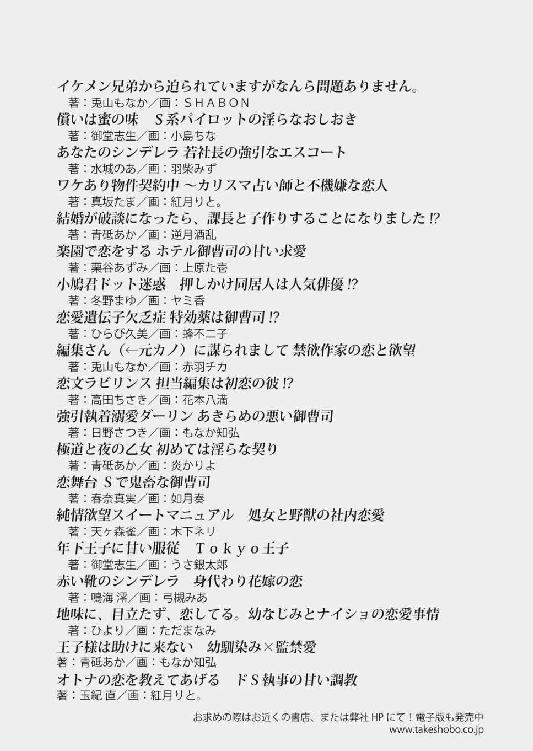

| 隣人の声に欲情する彼女は、拗らせ上司の誘惑にも逆らえません (蜜夢文庫) | |
| 奏多 & 幸村佳苗 | |
| 竹書房 (2018) | |
この作品は縦書きでレイアウトされています。
また、ご覧になる機種により、表示の差異が認められることがあります。
一部の漢字が簡略字で表示されていることがあります。
隣人の声に欲情する彼女は、拗らせ上司の誘惑にも逆らえません
CONTENTS
イラスト／幸村佳苗
プロローグ
ここ数日、東京には雨が降り続いていた。
九月上旬には珍しく気温が下がり、行き交う人々は長袖の薄い上着を羽織っている。
♪ニッコニコ～、ニッコニコ～、ニッコー不動産～。
ＣＭでもお馴染みの気の抜けた音楽が、閑散としている真新しい店舗の中に繰り返し流れていた。
「お客様。新宿ならご希望に添える物件がございます」
やけに白く輝く歯を見せる若い男性店員は、長い黒髪をバレッタでひとつにとめた、疲れ切った様子の若い女性の前に、詳細が記載された紙を置いた。
『新宿駅徒歩五分、築二年の南向き角部屋五階、セキュリティー完備、オール電化、冷暖房付。ゴミ捨て二十四時間可。十四畳相当のＬＤＫ部分に六畳の寝室、敷金礼金なしの家賃月額三万円』。
大家から突然退去命令を受けて回った五軒目の不動産屋で、希望以上の掘り出し物件が現れ、彼女──桐嶋陽葵の顔がぱっと輝いた。明るい表情になれば、彼女が整った顔立ちの清楚な美女であることがわかる。
「ただし、出るんです。だからワケあり物件としてお安くし、連帯保証人も不要ですが、一年は住んで頂きます」
陽葵は今まで一度だって幽霊を見たことがないし、怪談話もホラー映画もお化け屋敷も平気だった。保証人も不要のワケあり物件に感謝して、彼女はその場で契約した。
「ありがとうございました。ニッコー不動産はお客様に笑顔になって頂くのがモットーです」
そして──。
ドラマの主人公が住むような、綺麗で理想的なマンションに引っ越してきた霊感ゼロの彼女は、それから毎日、否応なしに出現するそれに辟易することになる。
......黒くてらてらと光る、おぞましいＧを。
（なにが笑顔だ──っ!!）
「最低一年は住むこと」と契約書に但し書きがあったのは、入居者がＧに逃げ出すからなのだろう。
この侵略者から身を守るため、陽葵はＧの退治に乗り出したが、Ｇは狡猾にブーンと宙に舞って攻撃をかわすと、わざと彼女に突進して挑発し、気づけばたくさんのＧの家族が陽葵を嘲笑うようにカサカサ音をたてている。
綺麗好きな陽葵としては、毎日必要以上に掃除をしているのに、どうしてＧが登場するのかわからない。巣でもあるのなら、それごと駆除しようと必死に探したが、まだつきとめられない。いつもの通りＧの追跡に失敗して床に座り込んだ彼女が、悔しさに握りしめた拳で白壁を叩くと、ボコッガラッと不穏な音がして、寝室の壁下方になんと拳大の穴が開いてしまい、そこになにかがはみ出しているのを見つけた。引っ張り出してみると、それは使用済みと思われる灰色のブリーフだった。
（ひぃぃぃぃ!!）
慌ててブリーフを穴から向こう側に押し戻し、急いで壁に掛けていたカレンダーをずらしてその穴を塞ぐと、ありえない事態に固まる陽葵の手の上を、Ｇが悠々と移動して消えて行った。
「ド素人のパンチで穴が開くなんて、なんで隣との壁がこんなに薄くて脆いのよ!?」
そして造ってしまった穴からは、困ったことに──不定期だが頻繁に、隣人宅の声がはっきりと聞こえてくるようになった。
『......あっ、ああんっ、それいいっ、イッちゃう！』
女の嬌声、荒い息遣いや卑猥な水音、そしてベッドが軋むギシギシという音。
壁の向こう側も寝室らしく、しかもその一連の行為は一度で終わらず、明け方まで繰り返し続く。
まるで発情期の獣かセックス中毒のような激しい営み。絶倫と技術を誇って女性を抱いているらしい隣人は、下着も片付けられないだらしない男らしい。
大きなクローゼットの中に荷物のほとんどをしまっているため、部屋ががらんとしているせいか、ベッドをずらして避難したくらいでは、音から逃れることはできなかった。仕方がなく大音量で音楽を聴くようにしたら、頭痛に悩まされるようになり耳栓にしたのだが、耳栓をしたまま寝ると耳が汗ばんで痒くてたまらない。
板かなにかで穴を塞ぎたいが、一部が壊れているし、壁が薄いので、釘を打つと崩れそうなため、仕方がなく画鋲で支えられるだけの厚紙を貼ってみた。
しかし、効果が出ないまま毎夜、あるいは数日おきに、夜十時以降には遠慮のない女の嬌声が陽葵の寝室に響き渡り、安眠を妨害する。
毎回喘ぎ声が違い、発情猫よろしく騒音を発する隣家に苦情を訴えようと、壁に穴が開かない程度の力で時折壁を叩いてみるが、ひとときの効果しかない。辛抱強く訴えてみても、やがて無視されてしまうため、ストレスだけが積み重なる
防犯のためか、表札を出しておらず、隣人の名前すら知らない。
引っ越してきた挨拶をしようとしたが、夜間にしか家に戻らないらしく、さすがに訪ねるのは気がひける。いまだ挨拶も出来ていないために、どんな顔をしているのかもよくわからないし、もう挨拶などしたくない。
Ｇと一緒に滅亡すればいいのにと思う。
今夜もＧと格闘して数匹を墓送りにし、耳栓をして明日の仕事に備えてベッドに潜り込んだ陽葵だったが、数分で耳が痒くなり、耳栓を抜いてため息をついた。その時、いつも女の声に搔き消されて聞こえなかった男の声を耳にした。
『あ......ぅん......』
それは陽葵がぞくりとするほど、艶めく深みある低い声だった。
男以外の声はしないため、余計大きく響く。
『やば、い......ん......』
上擦ったような熱っぽい声と乱れた呼吸を聞いた瞬間、陽葵の身体がカッと熱くなり、心臓がとくとくと高鳴る。
なぜいつものようにスルーできないのだろう。戸惑いながらも、官能的な声音に惹きつけられ、理性が薄れてしまう。
『......ぁ......ん、んん......イキ、そうだ』
陽葵は声だけで濃厚な愛撫をされている気になり、次第に頭がぼーっとして、体が火照ってくる。
（身体が......疼いて、たまらない）
乱れる息を繰り返しながら、自然と手がパジャマ越しの胸を触ると、胸の頂きは既にぴんと尖っていた。乳房を掌で包んで揉みながら、じんじんとする尖りを指で弾けば、それだけでびりと痺れたような快感が走り、甘い声が出る。
（声だけで、こんなに感じているなんて）
衣擦れの音をたてながらパジャマのズボンの中に手を入れ、疼きっぱなしの足の付け根に手を伸ばせば、下着の上からでもわかるくらいに、ぐっしょりと濡れて熱い。押してみると、くちくちと卑猥な粘着質な音がして、甘い痺れが身体に広がった。
（ああ、なんなの、わたしの身体......）
ぷくりと膨らんだ秘裂の形に沿った縦しわに沿って指を動かすと、両足の指が戦慄きながらきゅっと丸まる。
「ああぁ......ふぅ、んっ」
初めての自慰に、仔猫のように啼いてしまう。
元彼の愛撫以上に、陽葵の身体は感じていた。
『ああ、は......くっ、はぁ......』
次第に大きくなる、男の苦しげな悩ましい声に、ぞくぞくが止まらない。
「ああんっ」
ショーツのクロッチの横から忍ばせた陽葵の指が、直接花弁を割り、濡れそぼった花園に触れる。痺れるような快感が走り、そこからは夢中で、本能の赴くままぐちゅぐちゅと音をたてて花園をかき乱していく。
胸の尖りも指で捏ねれば、余計に秘処の蜜が溢れて滑りがよくなり、恍惚としてくる。やがて、表面だけでは物足りないと、下腹部の奥が切なく訴えてくる。
『も......限界。......奥、突くぞ？』
まるで自分に囁かれているように感じる陽葵は、顔を赤らめて頷き、そっと目を閉じ、その指を蜜口に移動させた。ひくつくようにして待ちわびる浅い部分を戯れるように触りながら、隣人の動きを待った。
『あぁ......』
ベッドがぎしりと軋んだ音がして、ため息のような声が漏れたのをきっかけに、陽葵は指を蜜壺の中に入り込ませると、半年ぶりの異物による圧迫感に細い息をつく。
『は、は......っ』
男の声が荒くなり、それを合図に陽葵も指を抜き差ししていく。淫らな水音が僅かに羞恥を誘ったが、陽葵はそれを振り切ると、唇を半開きにして、くぐもった声をだしながら行為に夢中になった。
「ん、んん......っ、あ......んんんっ」
見ず知らずの隣人はどんな男なのだろう。抱かれていることを想像しているうちに、その男の雄々しい剛直に勢いよく中を擦り上げられている気分になってくる。陽葵は、ひくつきながら収縮しているざらついた蜜壺の中に、入れた指を激しく動かしながら、壁の向こうの彼にねだるような嬌声を上げた。
「ああっ、気持ちいいっ、奥......奥に......っ」
『あぁ......イキそ。お前に、こんなこと......っ、あ、それだけで......っ』
陽葵の指が二本になり、あの声を持つ男の見えぬ熱杭を妄想すると、それだけで息が弾む。
『奥に、出す......ぞ。は、あっ、あ、イク......っ』
切羽詰まった隣人の声は、陽葵の限界を誘った。
「イク、わたしもイク！ イっちゃう、イっちゃうよ、......ああああ、はあああああんっ」
陽葵の身体が絶頂に反り返り、そして痙攣する。
『俺も......イ......クっ、は......っ！』
男の果てたような声に陽葵の子宮が震える。果てたばかりの陽葵だったが、勝手に収縮する膣から二度目の強い快感が突き抜けた。
「はぁ、はぁ......なに、これ」
我に返れば、虚しさだけが残った。同時に強い背徳感と、見知らぬ隣人に対する敗北感が胸を苛む。
彼氏と別れて半年、自分は欲求不満なのだろうか。
もう二度とこんな不埒な真似はするまいと決めたにもかかわらず、あの隣人の喘ぎ声が忘れられない陽葵は、隣人の情交が始まると無意識に、あの男の声を拾おうとしてしまう。
そして欲情してしまったら、自慰が止まらず、その身を震わせて何度も達するのだった。
......陽葵があられもない声を上げる間、隣家の声が途切れることに気づかずに。
第一章 隣人は、したたかに翻弄する
東京都渋谷区道玄坂──。
若者が集う繁華街から裏道に入った閑静な一角に、アラウドデザイン事務所はあった。
コンクリート打ち放しの外観がスタイリッシュな印象を与える社屋は、一見平屋建てだが空間をより広々と使える中二階の作りになっている。
顧客は一流企業が多く、紙媒体や電子媒体の広告デザイン、施設の空間演出デザインのほかに、ブランディグと呼ばれるブランド構築、商品企画開発や提案なども行っている。総務、営業を含めると総勢三十二名が勤務している。
アラウドデザインの総務部で働く桐嶋陽葵は、元々水彩画を描くのが好きだったが、自分にそちらの道に進むほどの才能があるとは思えず、また熱意もなかった。
しかし中三の時にデパートの特設会場で偶然目にした、洗練されたデザインの黒い空気清浄機の広告を見て、衝撃を受けた。
壁一面に黒一色で描かれたその広告は、風の躍動感と空気の清々しさを見事に伝えており、排他的で閉鎖的な闇色だけで動的な存在感を示していたことに、心が震えたのだ。
誰が作ったのだろう──店員に尋ねても何もわからなかったが、メーカーに問い合わせると、広告を制作したのはアラウドデザインの「ＹＵＲＡ」だとわかった。そこで陽葵は、教えて貰ったアラウドデザインの番号に電話をかけて、電話口に出てくれた社長に抑えきれない感動を興奮まじりに伝え、ＹＵＲＡとは自分と同じまだ十代の少年だということを聞くと、驚愕のあまり言葉を失った。
そこから陽葵は、イメージを自由に表現出来るデザインの勉強をして、自分もＹＵＲＡのような感動を発信出来る広告デザイナーになりたいと思うようになった。そのためには美術の基礎知識を学んでスキルを磨こうと、高校では美術部に入り、実力ある部長から毎日指導を受け、やはりこの道に進みたいという願望を強めていく。
そして、進路をデザイン系にしてアラウドデザイン事務所に就職したいと両親に訴えたが、美術に無知で厳格な両親からは猛反対をされた。
──遊びは早く卒業して、ひとり娘として今度はお父さんとお母さんを安心させて。
──そうだ。女が仕事をしてどうするんだ。女の幸せはいい男と結婚して子供を産むことだぞ。
陽葵がどんなに情熱を訴えても、話は平行線のまま。どうしてもデザインの仕事がしたい陽葵は妥協の末に、両親の母校である大学に進学する代わりに、就職したら三年だけは自由にしていいという約束を取り付けることに成功した。
──三年社会人として働いたら必ず家に戻り、見合いをして、結婚をするのよ。
──父さんがいい男を見つけてやる。陽葵にも会社にも利益をもたらす男を。
陽葵の父親は、祖父から受け継いだ会社の拡大を目論んでいる。自由にできる三年間が終われば、政略結婚をさせられるかもしれない。
それでもいいと陽葵は思ったのだ。たった三年のために、将来が暗いものになろうとも、両親に従順だった自分の人生で一度くらい、あの壁画のように大胆に常識からはみ出てみたい、と。
大学四年間、国文科に在籍しながらも秘かにデザインの勉強をひとり続けていた甲斐があり、デザイン力を試す実技試験を突破した。二次面接では熱意が認められ、新卒でアラウドデザイン事務所に雇用されたのだ。
だが、デザイナーについて二ヵ月間のアシスタントを経た後、社長より言い渡されたのは、総務部付の雑用係兼受付業務だった。
アラウドにおける受付は、誰にでもできる落ちこぼれの仕事、と位置づけられている。接客術はもちろん必要ではあるのだが、事務所の花形であるデザイナーとしては使えない、というレッテルを貼られたのも同然だった。
そんな受付嬢がデザインの現場に戻れるチャンスは、なにかのコンテストで受賞するなど実績を作った上で、チーフデザイナーの強い推薦がなければいけない。コンテストに応募しても受賞には今一歩届かずにいる陽葵は、自分に欠けているものがなにかわからなかった。それでもいつかは、デザインの仕事を出来るようになると思い続けて二年目、いまだ受付嬢として総務の仕事を手伝ったり、画像処理などの簡単な仕事しかさせて貰えない、鬱屈した毎日を送っている。
「お帰りなさぁい、水島さん」
残暑も落ち着き、上着が手離せなくなってきたその日、もうひとりの受付嬢である、陽葵と同い年の尾形素子の甘ったるい声が会社の玄関口で響き渡った。帰社したばかりの四歳年上でチーフデザイナーの水島広樹は、甘いマスクをふにゃりと緩ませて、素子に手を振る。
「ただいま、素子ちゃん。向こうの要望が酷くて、大変だったよ」
「水島さんは、ここのエースなんですから、必ず素晴らしいものを完成させると私は信じてます」
「はぁ、きみは良い子だなあ」
いちゃいちゃとしか形容出来ないこのふたりを完全に無視して、陽葵は入力作業をしていた。
......実は、水島は半年前に別れた陽葵の彼氏であった。入社してすぐに、陽葵が水島のアシスタントをしたのがきっかけで付き合い始めた。
アラウドで人気のデザイナーのアシスタントとなって、陽葵が有頂天になったのは、水島個人にときめいたからではなく、自分もこれで最前線でデザインの仕事が出来ると思ったからだ。
──僕の力が至らなくてごめん。僕はきみを推したのに、受付に配属とは。だけどまたチャンスがある。僕についてきてくれるか？
最終判断は社長だが、その前にふたりのチーフデザイナーの賛成を得ないといけない。陽葵は、自分の実力のなさを恨んでも、水島を恨むことはせず、逆に頭を下げて教えを請うた。
──僕はきみが好きなんだ、陽葵ちゃん。付き合おうよ。
そしていつの間にか付き合うことになり、なし崩しに水島に処女を捧げてしまった陽葵だったが、依然として水島が陽葵にやらせるのは彼が取りかかっている仕事の雑用ばかりで、デザイナーの仕事に関しては自身の自慢話しかしない。
水島は口先だけの男で、自分は彼に利用されていたのだということに陽葵が気づいたのは、彼が素子とキスをしながらホテルに入ったのを目撃してしまったからだ。
自分は浮気相手だったのかと、その場では衝撃を受けた。だが、嫉妬や独占欲が湧いたわけでもなく、水島が性処理と雑用のために陽葵を利用していたのなら、自分もまたデザインの仕事がしたくて水島を利用していたことに気づき、そのまま身を引いてしまった。
今となっては、付き合ったとカウントしていいのかどうかも、疑問だ。
「水島さんって格好いいわよねぇ」
素子が、去った水島に背中に向け、顔を赤らめてそう言うから、「そうね」と陽葵は素っ気ない返事をする。
「アラウド一のイケメンのエース。す・て・き」
素敵だと思う理由がイケメンだからなのかエースだからなのか、いまいち判断つかぬ曖昧さでうっとりとする素子に、付き合っているのか否かなど聞くほど、陽葵には水島に対して興味があるわけではなかった。
陽葵は経験上、イケメンと名前がつくものは、自分の容姿と実力に自信を持ち、大した努力もしないで女を手あたり次第食べて行ける生き物だと確信している。
水島もそう、女性をとっかえひっかえしている隣人も恐らくそう。
そして高校時代、二学級上の美術部の笹村部長もそうだった。
気品ある甘い顔立ちの彼は、女を惑わせる魔性の魅力を持っていて、活動がない日の美術室をいつもラブホ代わりに使用していた。それを知らずに何度もその現場を目撃しては真っ赤になって逃走していた陽葵であったが、好きなことが出来る空間はここしかない。
また、しょっちゅう情事を目の当たりにするうちに、いい加減慣れと、呆れを通り越して怒りまで湧くようになった。情交するならこの部屋からでていけと無言の圧をかけ、画架を音をたてて広げて、彼らを尻目に絵を描いていた。
そんな不遜にも思える居座りをする陽葵に、部長が興味を持って話しかけてきたのは、それからまもなくのことだった。
──お前、随分と胆が据わっているよね。
──神聖なる美術室をいかがわしいことに使う部長ほどではないですよ。
──そこまで、絵を描くのが好きなわけ？
──絵というか、将来、デザインの仕事に就きたくて、そのために修業をしたいんです。わたしに火をつけた出会いがありまして......。
意外に聞き上手だった部長に、陽葵がＹＵＲＡの話に熱弁をふるうと、部長はなぜか嬉しそうに笑った。
──そうか。だったら僕が鍛えてあげる。将来、彼に近づき、一緒に仕事できるように。
それから一年、笹村部長の指導の下、時に徹底的な基本的デッサンであったり、時に彼から教わった絵画技法やデザイン方法を使った課題であったりと、毎日のように制作を続けた。
最初こそ物言いは柔らかで優しかったが、慣れると言葉遣いがぞんざいでストレートになり、一人称も俺に変わって毒ばかりを吐く。それでも陽葵が食らいついたのは、笹村が美術のコンクールに応募すれば、必ず最高賞をとれるほどの実力者であり、指摘が的確だったからだ。
──たらたらするな。考える前に、感じろ！
かなりドＳでのスパルタを、愛ある熱血指導と言いのけられはしたが、陽葵にとっては有意義な時間だった。
笹村が美術室に女子生徒を連れ込むことはなくなったが、陽葵に指導している間も女遊びの噂は絶えなかった。
しかし、女だと見られていなかったらしい陽葵は、彼に手は出されることはなかった。そのため、彼は美術室でのみ、陽葵がもっとも尊敬し、師匠と崇める先輩になったのは確かだった。
懐かしい笹村のことを思い出しながら、彼が今の自分の状況を見たらどう言うのだろうと考えていた陽葵に、素子が嘆息して声をかけてきた。
「私は英文科卒業、陽葵は国文科卒業で、畑違いな環境で過ごしてきたのに、なんで、今いるのがデザイン事務所なんだろう。就活が全滅していなければ、今頃私は、グローバルな会社でばりばりと仕事していたんだろうなと考えると、運命って皮肉だよね」
同じ受付をしている素子もまた、アラウドに恋して就職した陽葵とは違う複雑な心境らしい。
「他の人たちは一流企業相手にバリバリ仕事をしてるけど、私達がしているのは誰にでもできることだもんね。ここでは私達、劣等生だし」
（劣等生、か......）
もしも両親を棄てる勇気があり、専門学校か大学でデザイン科に進んで専門的な知識やスキルを身につけていれば、今頃ここでデザイナーとして活躍出来ていただろうか。
早くデザインの仕事を覚えたいのに回ってくるのは画像の処理ばかりで、パソコンを操作していると虚しくなってくる。
（家に戻ると約束した誕生日まで、あと半年しかないのに）
今の自分の現実では、片付けるふりをしながら、ファイリングしてある他のデザイナー達の作品を覗き、感激しながらも、自分だったらこうするああすると妄想するのが、せいぜいだ。
不思議なことに過去のファイルの中にＹＵＲＡの作品はなく、先輩達にもＹＵＲＡを知る者はいない。陽葵にとって、社長室に気軽に聞きに行けるほど、社長は気安いひとではなかった。簡単に言えば、迫力がありすぎて怖いのだ。ぎょろりとして睨んでいるような目をした厳つい顔に刈り上げた短髪、百八十センチ以上ある巨軀は服の上からわかるほど筋肉で盛り上がり、とても堅気の人には見えない。素子から推薦された不動産屋が、実は社長のお勧めだったと後から聞いた途端、ニッコー不動産の印象がダークになったものだ。
「そういえばさ、アラウドに顧問兼アートディレクターとして、あの喜多見響が来るっていう噂があるらしいの」
「喜多見響？」
素子は陽葵とは違って社交的で、先輩社員に懐いてよく飲みに行っているため、情報通だ。
「うん、陽葵知らない？ うちらより二歳年上の先鋭デザイナー。三年前に海外から帰ってきて、二年前にフリーに転身した、どんなデザインでも完璧な演出が出来る天才よ。色々な賞を総なめにしているの。これがまたイケメンで」
「フリーのイケメンがどうしてアラウドに？」
「それがわからないのよね。喜多見響に関しては本当に謎で、大体帰国して一年しか会社勤めをしていないのに、フリーでやっていけるだけの資金があったというのも不思議でしょう？ パトロンがいるって考えてみたらさ、うちの社長も喜多見姓じゃない。しかもうちの筆頭株主ってあの日本屈指の喜多見コンツェルンでしょう？ もしかするとうちの社長と喜多見響は、喜多見グループの中枢と血縁関係にあって、喜多見から支援されているのかも。あの喜多見の血縁者なんて凄いわよね」
「血縁って......社長、イケメンの部類に入る？ 恋愛より任侠映画に出そうだけど......」
「突然変異よ！ どっちが変異したのかわからないけど」
乙女の妄想は逞しい。
「陽葵、これは私達に玉の輿のチャンスよ？ 私達がデザイン会社で受付をしている意味が、ここで出てくるんだわ。神様は私達を見捨てなかった！」
「いやいや、そんな有名人なら相手に困っていないんじゃない？ それに素子、水島さんはどうしたの？」
「喜多見響に比べたら、月とすっぽんよ！」
散々な言われようだと、僅かばかり水島に同情してしまう。
水島でも、かなり顔立ちは優しく整っていると思うが、それ以上とはどれほどの顔立ちなのだろうか──。
「皆も知っていると思うが、彼は喜多見響くんだ。今まではフリーで活動していたが、これからはアラウドの顧問でありアートディレクターとして常駐して貰う。彼の下で、切磋琢磨してくれ」
中二階のミーティングルームにて、どうしたらここまで強面の顔になるのかと誰もが思う喜多見祐社長が、ぎょろりと大きな目を動かして、横に立つ長身の若い男を紹介する。
（う、わ......）
社長とは正反対の美貌だった。
二重瞼の切れ長の目と高い鼻梁、薄く整った唇が精巧な彫像のように完璧に配置された顔は、冷たさと気高さが共存している。
抜群のバランスで無造作にまとめられた漆黒のウエーブヘア。光沢ある生地で仕立てられたダークグレイのスーツ。
洗練された風貌にもかかわらず、彼が放つのは堂々たる王者の風格だった。
この美貌の男が、天才クリエイターの喜多見響──。
そしてその顔に、陽葵は見覚えがあった。
（髪型や髪の色は違うけれど、どう見ても笹村響部長じゃない。苗字が違うのはご両親の離婚？）
常にひとを吸い寄せていた、あの優しげで中性的だった王子様が、ここまでひとを撥ね付けるような孤高の王者の貫禄を持つようになるものかと、陽葵は内心舌を巻いていた。
吸い込まれそうなヘーゼル色の瞳は、昔より神秘的な憂いを帯びている。
社長に促され、社員がひとりひとり自己紹介していく。最後に序列最下位の二人の番が来て、やたらアピールする素子の後に陽葵がおずおずと話し出す。
一瞬、ヘーゼルの瞳が陽葵の視線と交錯したが、彼はふいっと興味なさげに視線をそらした。
（え、わたしがわからない？ それともわざと？）
ショックに呆然とする陽葵に社長が言った。
「桐嶋さん、響くんにデザイナーごとに、うちの作品を紹介してくれ。きみなら全作品を覚えているだろう」
（な、なぜ盗み見して覚えた特技を、社長が知っている！）
「わ、わかりました」
「社長、私も手伝います」
「尾形さん。きみは仕事に戻って。桐嶋さんだけで大丈夫だから。桐嶋さん、二階のＡ会議室を使って」
「わかりました」
（しかも、ふたりきりにさせるか、社長！）
陽葵は人知れず盛大なため息をつくと、先に会議室に入っている天才クリエイターのため、年代別になっている青いファイルをデザイナーごとの山にして、せっせと会議室に運び込んだ。
「え、と。では──」
目も眩みそうな美貌の男の横に座り、青いファイルの表紙を捲った途端、響の手がすっと伸びたと思うと、陽葵の両頰ががしっと大きな手で摑まれた。
「な、なんれひょう？」
突然の状況についていけない陽葵は、冷や汗を流しながら、作り笑顔で響に笑いかける。
「お前、なぜここで受付なんかしている」
「ひゃい？」
「この俺にタダで一年も講師をさせておいて、ガリ勉大学国文科卒業、二年半も雑用係の受付？ ふざけんな！」
濃緑色と淡褐色が混ざったヘーゼルの瞳が、怒りに細められた。
「桐嶋！ 師匠である俺の顔を忘れたとは言わせねぇからな！」
さらに頰を摑む手に力が込められ、陽葵の唇がタコの口のようになった。
（ひっ......）
顎が砕かれるとあたふたする陽葵を見て、突然響は笑い出す。
「ははは、間抜け面」
そう、昔よく陽葵が見た、少しあどけない笹村響の顔で。
この笑顔を見ただけで、やはり彼は昔と変わらない部長で、その道を究めたのだと陽葵は嬉しくなったが、以前に増してドＳぶりに拍車がかかったようで、空笑いしか出来なかった。
そして会議室で今、陽葵は──コンビニに買いに行かされた小さなスケッチブックと色鉛筆を使って、響が出した課題の絵を描かせられている。
「あ、あの......し、喜多見さん」
陽葵は困った顔で、ふんぞり返るようにして長い足を組んでファイルを見ている響に声をかけた。
「師匠と呼べ」
「し、しかし......」
「師匠！」
「は、はい、師匠」
陽葵は八年経った今でも、響の弟子らしい。
「師匠、質問してもいいでしょうか」
「なんだ」
「なぜわたしは、ここで絵を描いているのでしょう」
すると響は読んでいたファイルをバンと荒々しい音をたてて閉じると、不機嫌そうな顔で、陽葵のスケッチブックを取り上げて見ながら、ぶっきらぼうに言った。
「お前にまだデザインの適性があるかどうかをテストしたんだ。たとえば老人向けの広告。これはアラウドでは安田美佐恵が担当しているが」
「どのデザイナーが担当したのか、もう覚えたんですか？ わたしなにも説明していないのに」
「俺を誰だと思っているんだ」
「し、師匠様です」
すると響は、満足そうに笑って続けた。
「安田が淡くて優しい色にしたのに、お前はなぜ濃い色を使う？」
「それは、お年寄りは視力が弱まっているので、はっきりとした色彩の方が見やすいかなと。綺麗さよりも明確さが必要ではと思って......」
「次。ＯＬ向けの化粧品の広告。これは佐々木創が担当している。彼が色とりどりの豪華な背景にしているのに、なぜお前は白黒だ？」
「ＯＬさんは目が肥えていて、いいものか悪いものかは、商品を見るだけでわかってしまいます。ごちゃごちゃとしたものを置いていらぬイメージをつけるより、商品を際立たせるために、あえて色を抑えた方がいいかと」
響は満足そうに笑い、大きな掌で陽葵の頭を撫でた。
「よしよし。それが正解かは、置いておいて」
「え、正解で褒められて、よしよしされたんじゃないんですか？」
「正解は俺達が決めるものじゃないんだよ。広告デザインは消費者観点から作るもので、デザイナーの知識やスキルを見せつけるためのものではない。アラウドの広告は傲慢なデザインが多いな。ブランド力がある大手企業から絶え間なく仕事が来るから、自分のブランド価値も高まったと誤認してるんじゃないか」
「そうですか......？」
「そうだ。これではアラウドの方の押しつけが強すぎて、商品が持つ本来の価値が上がらない」
（正論だわ。どんなに構図が素晴らしくても、商品より視線を奪ってはいけない）
「長くこの仕事をしていると、絶えずアイデアを出さないといけない脳は麻痺してきて、これは正解だと自分でＯＫを出してしまいがちになる。ＯＫを出すのは客なのにな。......特にこいつ」
響は、水島のファイルを指で弾いた。
「よくこんなもので相手がＯＫしたなと思うよ。依頼目的とデザインがまったく嚙み合ってないじゃないか。よくこんなので、チーフデザイナーを名乗れるよ」
「い、一応はアラウドのエースなんですけど」
「ああ、そう自分でも思っているような、驕った作品ばかりだな、こいつのは」
響の物言いはストレートだが、間違っているようには思えなかった。
彼の作品を通して見れば、悪い意味で変化しているのが陽葵にもわかったからだ。
「こんな程度の奴が、よくお前をド素人だと切り捨てられる」
呆れ返ったようにして嗤う響に、意味が摑めない陽葵は目をぱちくりさせて訊く。
「水島さんがなにか？」
「お前、水島のアシスタントをしたんだろう？ 水島は、数点課題を出して指導しても、お前はまったく使えなかったと社長に報告して、受付が妥当だと言い張ったと聞いているぞ。それをほかのチーフデザイナーも賛同するから、社長も折れたと」
水島の二枚舌を知る陽葵にとって、今さら水島に失望することはなかったが、さすがにありもしない報告をされたのは、憤りを感じる。
「なんですか、それ。指導なんて受けたことありませんって！ 大体課題って......パソコンソフトで、画像処理を手伝うくらいしかしていないんですよ。そのことですか？」
「画像処理じゃねぇよ。今みたいに、ラフを描かせたり、きちんとデザインの指導をしたって......」
「ラフ？ ないですよ、師匠。師匠の教えを守り、物体を立体的に捉えるために描いていたスケッチブックは、家で彼に見られましたけど、水島さんに言われて描いたわけではまったくないので」
途端に、響の目が剣吞な光を浮かべて細められた。
「なんで家？ 家に上げていたのか、水島を」
「お、怒らないで下さいよ、なんでそこを注目するんですか。一応は、元彼です。二股かけられていましたけど」
すると響は、陽葵の頰をぎゅっと抓って、ご丁寧に回してきた。
「ひぃぃぃぃ!!」
「お前、殻も割れないひよこ以下のただの黄身のくせして、男と付き合うとはいい身分だな。だからいまだに受付なんだよ、お前は!!」
「し、師匠だって、昔からとっかえひっかえの百人以上斬りをしていたじゃないですか」
するとバツの悪そうな顔をして、すっと響は視線をそらした。
「まさか、有名になった今でも、とっかえひっかえ......っていうことは」
「昔ほど......じゃない」
「だったら、特定の彼女さんが長いスパンで入れ替わるようになったということ？」
「突っ込まなくてもいいだろ、そんなこと。俺の女遍歴気にするなんて、お前俺に興味......」
「逃げようとしていますね、師匠」
「僕が逃げるなんて、そんなはずないじゃないか」
途端に響は、陽葵が懐かしく思う──色気が滲む微笑みを浮かべて言う。
「わたしは師匠の本性がわかっています。王子スマイルでごまかしても駄目です。ほら、目が泳いでいますよ」
響は舌打ちをする。
「彼女さんを同時に作らないで下さいよ。あれ、される側は結構ショックですから」
「......」
「師匠？」
「彼女なんて面倒臭いの、作ったこともねぇよ」
「はい!? だったら、高校時代も今も女遊びしかしていないってこと？ 後腐れのない手軽なワンナイトラブばかりですか!?」
響は美しい顔ごと、陽葵からそらす。
「なんて不埒なクリエイターなんですか!! そのうち地球が、Ｇのように師匠の血を引いた子孫だらけになるんだわ!! きっと師匠の顔そっくりで、触覚生やしてカサカサ走るんですよ!?」
「俺はＧじゃないし、俺の子供も気持ち悪いＧにするな！ それに俺は子供を作るヘマはしてない！ 一夜限りの女にゴムは必需品だ！」
「威張って変なことを言わないで下さいよ！ このスケコマシ！」
「別に俺が手当たり次第に襲っているわけではなく、いつも向こうから来てるんだぞ」
「くは......っ、モテモテ自慢ですか、あなたは！ ああもう、こんな下品で不潔なイケメンを師匠なんて呼びたくないわ!! あなたは、そう......ヒビキンで十分です！」
「菌扱いするな、馬鹿者」
ごつんと陽葵の頭の上に拳を落とした。
「ひとがせっかく、専属アシスタントにしてやろうと思っていたのに」
「へ？」
「せっかくお前に期待していたが、お前が俺を嫌うなら仕方ねぇな。高校時代から弟子にしてやった恩を忘れて、Ｇだの菌だの失礼なことを言い出すのなら、他の奴を......」
「し、師匠!! お願いします、デザインのお仕事を教えて......」
陽葵はガタンと椅子を押しのけて立ったつもりが、椅子の脚に躓き響に向かって倒れた。
「おっと危ない」
「......っ」
椅子に座った響に抱き留められ、広い胸にすっぽりと陽葵の体が収まる。途端に彼が男だと意識した彼女の身体は熱くなり、鼓動を早めてしまう。
「お前もっと太れ。この貧乳」
しかし響は女体に慣れたもので、陽葵の胸元に顔を埋めながらも平然と言い放った。
「きゃああああ、変態！」
響の頰を平手打ちしてしまった陽葵だが、その数秒後に、ひりひりする頰を手でさする響に土下座をしながら許しを請い、懇願した。
「デザインがやりたくてやりたくて仕方がないんです。師匠がどんなに不埒な変態でクズ男でも、クリエイターとしては、昔から尊敬しています！」
「お前......、何気に毒吐くよな。ほら、椅子に座れ」
「師匠に鍛えられました。師匠は王子様から王様になっても、ドＳぶりは変わりませんし」
「ははは、嫌だな、どうして僕が毒を吐くドＳなのさ。桐嶋がドＭじゃないの？」
（黒い王子様、降臨）
「し、師匠。猫被る......というのもちょっと語弊があるかもしれませんが」
「ああ、こっちが素だ。光栄に思え」
「光栄かどうかは微妙ですが、助さん角さんの如く、ご隠居師匠でもついていきます」
「隠居してねぇよ、まだ現役だよ！」
「お盛んでなにより。どうぞ不肖の弟子を扱いて下さい」
「言ったな？」
「言いました。女に二言はありません」
「じゃあ使ってやろう。存分に働けよ？」
突然現れた響は、陽葵に希望をもたらしたが他の社員にとっては悪夢のような存在となった。すべてのファイルを見終えた響は、陽葵を使ってまたもや全員をミーティングルームに招集させ、デザイナー達に今進めている仕事のコンセプトと、構想中の図案を提出させて言ったのだ。
「これでよくデザイナーを名乗れますね。コンセプトがまるで生かし切れていません」
響は、ドＳぶりを遺憾なく発揮して、場に緊張をもたらした。
アートディレクターにすべての権限があるとはいえ、入って一日も経たないまだ若い新人が、自分より年上のデザイナーをボロクソに言うのは、陽葵にとっては冷や汗が流れるほどはらはらするものだった。
水島がとりかかっている有名企業のブランディングで、自分の案が採用されないことを悔しそうに報告する彼に、提出した案を見ながら、響は鼻で笑って言った。
「あなたの目より、客の方が見る目がある」
エースと持て囃された水島の優しげな顔が、屈辱に歪む。
「コンセプトを変えて描いた図案、二十点を三日後の金曜日までに僕に提出して下さい」
「そんな！ こちらの仕事の方が重要で......」
「重要度はあなたが判断すべき事柄ではない！」
バァンと響は机を叩く。
「これくらいが出来ないのなら、あなたを全担当から外します。それくらいの覚悟で、やってきて下さい」
（鬼......）
場の雰囲気が最悪の中で、響だけはにこやかに続けて言った。
「僕の権限で、桐嶋さんを受付から外し、僕のアシスタントにします。彼女の言葉は、僕の代理として受けて下さい」
（ひいっ！ 今そんなことを言うなんて！）
今まで最下層にいた底辺女が、突然権力を摑まされて一気に頂上を目指して躍進をしたのを知るや否や、それまで黙っていた社員達が口々に、天才クリエイターである喜多見響のアシスタントが陽葵に務まるはずがない、アシスタントを必要としているのなら自分がすると、叫ぶ。
中でも、彼に散々に扱き下ろされた水島が、皮肉気な笑いを作って呟いた。
「桐嶋さんをアシスタントにするということは、自分の能力がないと認めるようなものだ」
（失礼な！）
「ほう？ 僕の決定に不満でも？」
「ええ。身体しかいい部分がない女に、転がされる程度のひとにあれこれ言われたくない！」
「身体しか、ね。きみは桐嶋さんの身体を知っていると、僕に自慢しているんですか？」
響の目が剣吞に細められた。彼の神秘的なへーゼルの瞳が、まるで不穏なものでも発する前触れかのように、その色合いを揺らめかせる。
「そ、そんなわけは......」
水島は途端に狼狽し、素子を含めて数人の怖い顔をしている女子社員を見て、引き攣って笑う。
陽葵よりそちらを気にするということは、素子以外にも手を出した女はいるのだろう。
「桐嶋さんを通して僕の力に猜疑心を抱いているのなら、いいでしょう。あなたがなかなかＯＫを取れないその仕事を僕が一回でＯＫを取ります。後で先方に、担当替えの電話をしておきますから」
「はあ!?」
「この仕事は信用が勝負。何度も何度も図案を見せているということは、先方にはあなたの作品の魅力が伝わっていないということだ。二度、三度駄目なら、何度持って行こうが結果は同じ。同時に却下されればされるほど、あなたよりもアラウドという会社の不信に繫がる。大きな企業の信用を失ったら、他の仕事にどう影響がでるかわからない。それだけの責任を持って、あなたは本気で図案を作っていますか？」
響の迫力に吞み込まれたかのように、硬直した水島は強張った顔をしたまま、なにも言い返せなかった。
「料金が発生するのなら尚こと、客に妥協させるのではなく、仕事を頼んでよかったと思わせないといけない。どこがいけなかったのかを反省するのが今のあなたに必要なことだ。どこが悪いのかをわかって貰うために、二十点を提出するように言ったのです。それを馬鹿にするのなら、百点にしますか？」
「い、いえ......、二十点で結構です」
「よろしい。コンセプトは自由。それに沿って描いて来て下さいね。以上、質問は？」
......響の貫禄勝ちだった。驕る水島にぐぅの音も出させず押さえつけ、同時に陽葵をアシスタントに抜擢したことに対する不満すら、響はねじ伏せたのだった。
水島から取り上げた、清涼飲料メーカー『コトブキ』の新製品における広告に取りかかるために、響は陽葵を連れ出してメーカー本社を訪れた。コトブキの担当者に響が担当になったという報告と挨拶を終えると、広報にも顔を出し、コトブキの会社案内だけではなく、今まで自社製品の広告として発表した過去のフライヤーを見せて貰った。
会社に戻った響は、コトブキが出している飲料を全種類買って会議室に籠もると、一本ずつ陽葵に飲ませて感想を言わせた。
「......これは、桃～っというような甘さです」
「お前、子供の語彙力だな。桃という甘さってなんだよ。それで国文科卒か？」
「国文科は小説家養成機関ではありません！ 文句を言うなら師匠が、自分で飲めばいいじゃないですか」
「嫌だね、太る」
「はあ!?」
「お前は全体的に肉が少ないから、胸ごと太ってちょうどいい」
「な、なんですか、その変態発言」
「でも女は、身体より感度だ。お前の感度がよければ、貧乳でもぎりぎりストライクゾーンだ。よかったな」
頰杖をしながら、陽葵に向けるその目は男の艶に満ちた甘いもので、思わずどきりとしてしまった陽葵は、それに気づかないふりをして怒った。
「だからやめて下さいって。師匠は女なら大抵はストライクゾーンでしょう？ 大体なぜわたしが師匠とそんな関係にならないといけないんですか。わたしだって好みがあります！」
思わず反射的に陽葵が言うと、響はゆったりと足を組み直し、陽葵にきっちりと向かい合い、腕組みまでして、完全に聞きの体勢で尋ねる。
「俺では駄目だという、お前の好みはどんなものだ」
（この自信家！ わたしに好みなんてないよ。だけど強いていうのなら......）
「信頼出来るひと。困っていたらさっと手を伸ばして、わたしをどん底から引き上げてくれる救世主。わたしの知らないことをよく知っていて、尊敬出来るひとです」
「ほう？ 顔は？」
「そりゃあ、よければいいですよ。そうですね、男臭さがなく女々しくもなく清潔感に溢れて、身長は高くて手足が長く、目は切れ長。王子様のような気品があって甘く優しいひとで、声は低い方がいい。年は......年上がいいです。二、三歳くらい上！」
陽葵が得意げに言えば言うほど、響は僅かに顔を赤らめて、空咳をする。
「......質問を変える。お前の好みと俺と、なにが違う？」
響は、囁くような声に僅かな甘さを滲ませ、照れ混ざりの優しい顔で尋ねる。
「全然違いますよ。わたし、イケメンも度を超すとクズだとわかっていますし」
「......おい」
「師匠は大体、わたしに甘く優しいですか？」
「......」
「甘さがあっても女遊びのためで、基本めちゃくちゃドＳじゃないですか。この世の二大悪ですよ！」
「この素を見せている女はお前だけだとしたら？」
長い前髪の間から覗くヘーゼルの瞳が、ぎらりと捕食者の光をぎらつかせる。
「わたしが可愛いからって、心とは裏腹に虐めちゃうなんて、師匠、小学生ですか。あはははは......なんて」
完全に冗談だったのだが、響が額を手で抑えて複雑そうな顔つきをしている。
「えっと、具合悪いですか？ だったら、ジャーン！ コトブキのサイダー！」
どこぞの猫型ロボットのように取り出して見せると、ぺしりとその手を払われる。
「飲め。......お前とことん飲んでぶくぶくに太って、誰からも嫌われろ！ 男の純情弄びやがって！」
「は？ スケコマシ師匠に純情なんてあったんですか？」
「お前、俺をなんだと......」
「師匠ですが？」
すると響は、サイダーを思いきり振って、陽葵に向けて口を開けようとする。
「ちょ、ちょっと待って下さい。そんな、小学生みたいなこと」
「ああ、そうだよ、俺は小学生だよ！」
「ひ、開き直らないで......きゃあああああ！」
そして開けた口から、プシューと炭酸が弧を描いて吹き出した時、陽葵が悲鳴を上げて逃げる。
同時に、タイミングよくドアが開いて、現れた水島が代わって浴びたのだった。
「ふぅ......疲れた」
帰宅した陽葵は、Ｇと格闘して勝利を収めたが、家族を失ったＧ達の逆襲回避に、キッチンと寝室の出入り口にホイホイの罠を仕掛けて掃除をすると、ベッドにダイビングしながら、枕に顔を埋めた。
大事にしているブランドもののジャケットにサイダーをかけられた水島の慌てぶりを思い出すと、陽葵はくくくと声を出して笑った。
そしてふと、サイダーの口がドアに向けて固定されていたことを思い出す。陽葵にかけようとしていると思っていたが、響は水島の気配を察し、最初から水島にサイダーをかけるつもりだったのではないか。しかし、すぐ否定する。
「そんなわけない。一体なんのために？」
──お前、飲み物のイメージを色鉛筆で表現しろ。その方がイメージが伝わる。
結局、陽葵は残った飲料を全部飲まされ、それを絵で表現させられた。
形のない曖昧なものを、具体的な形や色で表現する──それは、共感覚にも近い。
高校時代、響も陽葵と似たものの捉え方をしていることがわかり、連想ゲームのようにイメージの伝え方を勉強したことがあった。
昔のことをまだ覚えている響に、こそばゆい気持ちになりながら絵を描いていくと、なんとか響に飲料のイメージが伝わったらしい。彼がデザインに入る前に、彼が自らメーカーに足を運び、カタログや広告チラシを見たことに疑問をぶつけた。
──まず、相手を知らないといけないだろう。その上で長く付き合ってきた広告代理店を蹴るのは、一体どんなイメージから脱却したいのかを見ただけだ。あとはあそこが一貫して主張するものを感じ取ればいい。
誰よりもファンになり、メーカーに強くならないと広告は作れないと、響は言った。
消費者目線とメーカーの思惑の間を繫ぐ微妙なさじ加減が、デザイナーのセンスの見せ所だと。
（水島さんは、そんなことしていなかった）
水島は、パッケージなど外観の雰囲気だけでデザインをしていたように思う。
デザインの心構えを教えられた気がして、嬉しかった陽葵はそれから色々とデザインについての質問をすると、あっという間に時間が過ぎてしまっていた。
響は他の社員は突き放して緊張させたが、陽葵の好奇心に満ちた初歩的な質問には、ドＳぶりを発揮しながらも丁寧に答えてくれた。
（昔のよしみって奴よね......）
──俺はもう少し残る。気をつけて帰れよ。
彼の家は横浜ベイエリアで、車で来ているらしい。
（冗談でも、送ろうかと言われないし。相変わらず女扱いしてくれないんだ。いいけどさ）
彼のデザインについての考え方を聞いていると、ぞくぞくとしてくる。
デザインの基本に忠実でいて、完成した作品は独創性に溢れている。
豊富な知識をベースに凡人では思いつかない発想をして、そのイメージを最高の形で具現化出来る希有な才能こそが、彼が天才と言われる所以でもあった。そのすべてが羨ましくてたまらない。
そんな天才から直接手ほどきを受けることが出来ている自分は、実は恵まれているのかもしれないと陽葵は思う。
（師匠の嫌がらせのような女遊びに負けずに、毎日美術室に通ってよかったな......）
ただひたすらデザインへと繫がる勉強がしたかっただけではあるが、人生なにが幸いしてどう転ぶかはわからない。
過去から総じて考えてみれば、彼は女にはだらしなくても、芸術についてはストイックなほど真剣だ。芸術を軽んじる者を軽蔑している節がある。
彼の容姿や肩書きに群がる者達とは違い、自分は彼の才能のみを信頼していることは、高校時代に証明済みだから、現在も特別に引き立ててくれたのだろう。と思えば、響は意外と面倒見がいいのかもしれない。
（そもそも師匠は、なぜアラウドに来たんだろう）
アラウドは、社長のコネで上客を相手にして経営は困っていない。それにしても、もっと名だたるデザイン事務所や広告代理店からの誘いはたくさんあるだろうにと思う陽葵に、素子の言葉が蘇る。
──もしかするとうちの社長と喜多見響は、喜多見グループの中枢と血縁関係にあって、喜多見から支援されているのかも。
喜多見グループを背負った喜多見響。
（うーん。あまりに師匠は自由人過ぎるし、イメージが湧かないというか）
喜多見祐社長となんらかの関係がある喜多見響。
（だから似ていなさすぎだって）
しかし陽葵自身も知らなかった、彼女の監視指導役だったらしい水島から社長への報告の内容を響が知っているのは、社長とも仲がいいことを意味するのではないか。
──お前、俺のデザイン論より俺自身のこと詮索出来るほど余裕があるんだなあ？ そうかそうか......。だからお前はいつまでたっても受付なんだよ！
結局突然現れた理由も、社長との関係も、すべてわからない。
必然的な意味がある喜多見姓なのか、偶然的で無意味な喜多見姓なのか。
（師匠だけなんだ、わたしを見捨てなかったのは）
両親も友人も水島もアラウドデザインの皆も、見てもいないのに陽葵のセンスに否定的だった。
デザインに限らず自分が駄目っ子なのは、十分に承知している。
だがそこはもうどうしようもないことだと開き直って、自分の強みを新たに見つけられれば、もっと現状を打開出来ると、陽葵は思うのだ。
自分のどこが悪いのか、どこがいいのか──きっとそれは、響の傍にいるとわかると思えた。
（あと半年しかないけれど）
半年後、自分は救いを求めた響ごとデザイナーの道を棄てねばならない。
恩を仇で返すこの弟子を、彼はどう思うだろう。
呆れ返ってもう二度と交わることがないと思えば心が痛かったが、それでも、今やれることを全力でしようと心に決めた。半年後から死ぬまで後悔するのは、わかりきっているのだから。
「さあ寝よう」
電気を消して横になると、シーンと静まりかえっている。
隣人は数日前から、いないようだ。
きっと今夜も安眠出来ると目を閉じながら、彼の喘ぎ声に身体を慰めていないここ数日を寂しく思うと同時に、いやそれが普通の健全な姿だと自分に言い聞かせる。
──質問を変える。お前の好みと俺と、なにが違う？
響の囁くような声を思い出して、ぞくっとする。
彼の声が、隣人の欲情した声と重なるようで、カッと身体が熱くなった。
（どうして突然、師匠のことを意識するのよ、わたし！）
考えてはいけないと思いながらも、考えずにはいられない。
響は、どんな風に女を抱くのだろう。
どんな声で、果てるのだろう。
──お前の感度がよければ、貧乳でもぎりぎりストライクゾーンだ。
（わたしと師匠の関係は、一夜限りで消える仲ではないというのに）
「......っ」
それでも、脳裏に再生される響の声に欲情してしまった。
隣人の声が聞こえないと、再会したばかり恩人を淫らな対象にするなんて、自分はなんて浅ましい──そう思うのに、手が勝手に胸に伸びてしまう。
「あ......」
人並みの大きさだとは思うが、響にとっては貧乳らしい胸の膨らみは、淫猥な愛撫を待っていたのか打ち震え、そっと触ると甘い声が漏れてしまうほど、体がじんとして気持ちいい。
既に秘処は濡れていることを悟り、陽葵は下着ごとズボンを引き下ろすと、茂みに指を伸ばして、蜜が滴る花弁を割り、しとどに濡れた花園の表面を力強く擦る。
「ああ......」
隣人はいないと思う気安さから、粘着質な水音に混ざり、陽葵の喉から出る嬌声がいつもより大きかった。
「駄目、ああ......ひび......き、さん......」
自分の身体を滾らせる隣人の声を思い出していたつもりなのに、陽葵は目を閉じながら、無意識に響の名前を呼んでいた。それに気づいて、陽葵は羞恥に睫をふるふると震わせる。
（どうして、師匠の名前なんか......）
羞恥は快楽のスパイスとなり、そんなはしたないことを妄想しては駄目だと思いながらも、彼のことを思い、彼の名前を口にすると、背徳感に身体が一層熱く濡れてしまうのだ。
弄る陽葵の指が、さらに卑猥な水音を響かせる。引き攣ったような喘ぎ声が止まらない。
「ん......ああっ」
あの吸い込まれるようなヘーゼルの瞳は、女を愛する時、熱を帯びてどんな色になるのだろう。
彼が快楽に歪む顔を見てみたい。
──桐嶋。
（ごめんなさい、師匠。この弟子は......師匠をオカズにしています）
響がこんなはしたない自分の姿を見たら、どう反応するのだろう。
自分を襲ってくれるだろうか、それとも嫌悪にその美しい顔を歪ませるのだろうか。
「ああ......抱いて......」
口にして陽葵は、昔から一度だって響に女として意識されたことがないのが、小さな棘となって胸の奥にひっかかっていたことを解しながら、快楽の海に溺れていく。
女にだらしないイケメンはもう懲りたのに、尊敬する先輩に抱かれているという禁忌の想像は、隣人の声並みに陽葵の身体の感度を上げ、対象が具体的になったことで陽葵を大胆にさせた。
「ああ、溢れている、わたしの、蜜......あああ、舐めてっ」
両側に広げた足の間に、響が顔を埋めているのを想像しただけで、蜜が何筋にもなって手首まで垂れてくる。くぷりと音を立てて蜜壺に中指を差し込むと、きゅうと熱い襞が締め付けてきた。
奇しくも水島に開発された身体は、水島にされた恥ずかしい前戯を響に求めていた。
「あああ......もっと、もっと......欲しいっ、ひ、びきさん......っ」
妄想の響に挿れて欲しいとねだりながら、指を奥まで入れて抽送させると、さらに声を上げる。
「ああんっ、ああっ、あんっ、気持ち、いいっ」
響と繫がっていると想像しただけでたまらなくなり、身悶えながら自慰に耽っていた時、突如隣から艶めいた男声がして、驚いた陽葵は蜜壺から指を引き抜いた。
『あ......ぁ』
（いた、の？ 隣）
大きな声で喘いでいたのを聞かれたのだろうかと、さっと血の気が引いた。
『ん......、......あぁっ』
陽葵の心配をよそに隣人は行為に耽り、蠱惑的な喘ぎ声を響かせている。
行為に夢中らしく、ばれていなかったとほっとする陽葵の耳に届く艶やかな声が、想像の響の声と重なる。
響がそこにいて、淫らなことをしている錯覚に陥ると、身体がじんじんと熱く疼いてたまらない。
『は......。んん......』
ギシギシとベッドの軋む音も女の声も聞こえず、いつに増して彼の声だけが大きく聞こえた。
元々、不定期なセックスの場面で、彼の声が聞こえるのは極僅か。
（女がいない、とか？ じゃあどうして喘ぎ声が......）
そして陽葵は、彼もまた自慰をしているのではないかと、思い至る。
（や、だ......。もしかして......わたしの声で？）
向こうの声が聞こえるのだから、こちらの声も聞こえるはずなのだ。
陽葵の身体は、快楽の共有者として共鳴し、火照ってくる。
『あ......っ、ん......ぅ、あ、イ......ク。あぁ......く、う──っ』
水島とのセックスで、興奮した身体の一部がどういう状態でどんな終焉を迎えるのか知ればこそ、隣人の上擦った声の意味するところを取り、陽葵は顔を真っ赤にさせた。
『は......はぁっ、まだ、まだだ。ああ......』
まだ続く、苦しそうにも思える悩ましい声音に耐えきれなくなり、壁を向いて横になった陽葵のひとり遊びが再開される。乳房を痛いくらいに揉み込み、熱く蕩けきっている花園を強めに搔き回せば、ぞくぞくとした快感が止まらない。
「ああ、ああ......気持ちいい、それいい......」
隣人にひとり遊びがばれているということが、陽葵を大胆にさせ、声を潜めるどころか嬌声を響かせた。
『はぁ、ん......』
それに反応があれば嬉しくて、自慰の手を休めず、甘えるような声を隣人に聞かせる。
「ああ、ぅぅんっ、あっ、あっ、そこ、そこをぐりぐりして......っ、はっ、はぁんっ」
『......っ』
「ああんっ、い、いいっ、はぁ、ぁんっ、ああんっ！」
『はっ、は、っ、んんっ、はああっ』
隣人の荒く大きくなる声に、陽葵の胸の奥がきゅんと疼いた。
自分の声に隣人は自慰をし、そんな隣人に自分は自慰をする。
壁に遮られているとはいえ、妙な連帯感が近くで睦み合っているような錯覚を引き起こし、隣人に愛おしさを募らせ──やがて隣人は、男の顔で自分を求める響となった。
両部屋からは淫らな粘液が擦れる音をたてて、ベッドが軋む音を互いの耳に響かせる。
陽葵の頭の中から、既に壁は消えていた。
「あああんっ、駄目、駄目、イッちゃう、飛んじゃう！」
『ああ、いいよ、イけよ......。俺も......っ、イキそ......』
やがて淫らなふたつの音は、同調する。
「ああ、あああっ」
『気持ち、いい？』
「うん、気持ちいい、いいよっ、いいのっ、ああ、あああ！」
『奥まで、突きたい......』
「突いて、奥まで。もっと、もっと......あああっ」
『一緒に、イこ？』
「うん、うん。ああ、はぁぁぁぁっ、イク、わたしイっちゃう、ああああ、ひ......び、き、ああああっ」
無意識に呼んだ名前が、陽葵を押し上げる。
陽葵の身体に力が入り、ぐっと反り返った瞬間、隣からも切羽詰まった声が聞こえた。
『俺も......俺もっ、あああ、イク、あああ......っ』
陽葵の絶頂の声が隣人の官能的な声と重なった瞬間、陽葵は幸福感に酔い痴れながら浮揚し......そして落ちた。
数秒後、隣人のベッドが一回軋み、そしてこんこんと薄い壁が叩かれる。
『好きな男、いる？』
（重症だ。師匠の声に聞こえて、師匠を思い出すなんて）
陽葵は肩で息をしながら、こんこんと指で叩いてそれに応じた。
「いない」
するとまた、隣人はこんこんと壁を叩いてくる。
『そっち、行ってもいい？』
喘いでいない隣人の普段の声は随分と物静かで、神妙にも思える切実な声の意味するものにどきりとした。
『抱きたい』
会ったら自分が、隣人に嵌まって抜け出せなくなる気がして、陽葵は臆する。
「駄目」
陽葵はこんこんと叩いてから、拒絶した。
会わないから、色々な妄想で自慰に燃えることが出来るが、現実に会えば逃げ道がない。
陽葵は遊ぶことが出来ない女だ。女をとっかえひっかえする隣人に、冴えないこの身を差し出したら、水島のようにやり棄てられて気まずくなったまま、断絶するだろうことを憂えていた。
もっと男をその気にさせる身体であればよかったのに、自分は響にすら欲情されないのだから。
すると沈黙が流れてから、またこんこんと音が聞こえた。
こんなに近くにいるのに、薄い壁が遮っていることに憂えているような、哀切な音色。
続けてまた、こんこんと音がする。
陽葵は壁に近づくとノックを返しながら、音が聞こえてくるところにキスをした。
自分のはしたない喘ぎ声に欲情してくれた、見知らぬ隣人が愛おしい。
しかし壁に遮られているこの距離感がいいのだ。
きっと自分は、彼の中で女性らしい身体をした美女にしてくれているだろうから。
こんこんという音を聞く度、陽葵は切なくなってくる。
不埒な声に自慰をした背徳感を共有した相手が、どんな男なのか見てみたいのに、その勇気が出ない彼女は、焦がれるような思いに涙した。
（わたし......恋をしているの？）
そうとしか思えない、心の痛みだった。
見ず知らずの男に欲情しただけではなく、生身の彼を求めてしまった時点で、恋となんら変わりないと自嘲気に笑い、なぜかちらちらと響の顔が浮かんでくるのを、意思の力で消し去った。
（お隣さんに会いたい。......どんなひとでもいいから）
ノックの音は、別々の場所にいて求め合うふたりが繫がっている合図。
それは陽葵が寝入った朝方まで続いた。
第二章 隣人は、ひめやかに意識する
陽葵が会社に着くと、既に響は出社しており、彼に与えられた広いデスクの上や床に、夥しい数のラフが散乱していた。
「おはようございます、師匠」
「ああ、おはよう」
響は顔を上げずに鉛筆を走らせては、描きかけていたその紙をくしゃりと丸めてゴミ箱に捨てている。
中には、ゴミ箱から外れて転がっている紙くずもあり、陽葵は玉入れの如くせっせと紙くずをゴミ箱に捨てる。
「どうしたんですか、この量」
「ああ、コトブキとそれ以外、俺が抱えているものもあるからな」
「抱えているって......たくさんなんですか？」
「十八件。うちラフ段階が十二件、大至急のものだから、とりあえず今月中にＯＫ出さないといけない」
返事を受けた陽葵の眉間に縦皺が出来る。
「あの、師匠。今月中って......あと十日しかないですが」
「わかっている」
「一日一件では、到底日数が足りませんが」
「わかっているって。それでも、困っている相手ばかりなんだ。だから......」
ようやく顔を上げた響は、心配そうに見下ろす陽葵の顔を見て絶句する。
「なんだよ、お前のその顔！ すげぇ黒クマだぞ!?」
「え、わかりますか？ うわ......ルミナスのクマ隠し、早く買ってこないと......」
「なんでそんな状況になるんだよ！」
師匠をオカズにして、見知らぬ隣人と自慰のしあいっこしていました。
その隣人に焦がれ、彼からのアクションが消えないようにと応答していたら、朝を迎えてしまいました。
──など、言えるわけがない。
「そ、そういう師匠も青クマですよ？」
響の顔は疲労の色が見えるが、いつも以上に気怠そうな翳りは、彼の美貌を損なうどころか、おかしな色香を漂わせ、やけにセクシーさを際立たせているように陽葵には思えた。
「師匠、まさかずっと寝ないでデザインの仕事をしていたとか!? 泊まりですか？」
「俺は......」
言い淀んだ響は、口元に手をあてて欠伸をする。
その姿すら優雅で美しく、陽葵は思わず魅入ってしまう。
（いくら妄想でも、仕事を頑張っていた師匠に、あんなことやこんなことをされた妄想でアンアン喘いでいた自分が、あまりにも嘆かわしい）
「師匠、なにかお手伝いします。まずは師匠のワークフローとかありませんか？」
汚名返上、名誉挽回とばかりに、陽葵がきりりとしながらそう言えば、響は気怠そうな顔をしながら、パソコンを操作して、予定表や進捗状況を示す画面を表示した。びっちりと文字で埋まったその画面を見て、陽葵は眩暈を起こしそうになる。
「な、ななな、なんですか、この強行軍」
「今月は楽なんだ。新規でやるのが六件しかないから。後は版下を入れて色調整や試し刷りチェックとかの方が多いし」
「わたしもアシスト頑張ります。まずは急いでいて、わたしが出来ることは......」
「じゃあ写真の切り抜きを頼む。打ち合わせに使う低解像度のアタリ画像と、高解像度での本画像とをＰＳＤ形式で保存しておいてくれ。色調補正は俺がやる」
「了解です」
陽葵があまりにも自信満々に答えたものだから、逆に響は不安そうに訊いてくる。
「切り抜き、大丈夫か？」
「はい。入った時からそればかりやって鍛えられましたので、大丈夫です。必要画像を下さい。だけど高解像度での切り抜きになると、パソコンが固まってしまって、作業が遅くなってしまうんですが......」
「だったら奥にある高スペックマシンを使おう。俺の裁量で使わせてやる」
アラウドで、デザイナーだけが使える高スペックパソコンを使用出来ることに、陽葵は喜んだ。
響が使いたい画像は、ソフトの自動判別機能だけでは対応出来ない細やかなものが多く、画面を拡大しながらその外郭をなぞっていき、不必要なものを削除するという、単純かつ緻密な作業だった。
たとえば、雑に切り抜いたもので入稿してしまうと、貼り付けたかのような違和感が出たり、拡大印刷をするとガタガタになっているのが丸わかりになってしまう。
コンピューターを用いて出版物を作成するＤＴＰデザインの基礎中の基礎で、入社直後からデザイナーの下で地道にスキルを上げてきた陽葵は、切り抜きの才能はそこそこあるのではないかと思っていた。
ただ如何せん、寝不足が祟って朦朧としている日にする作業ではない。
「ここは、髪が靡いている感じもちゃんと......って、おいこら。俺の説明を子守歌にして寝るな」
陽葵は画面を見ているだけで眠気を覚えて、船を漕いでしまっていた。
頰を抓られて飛び起き、口の中に入れられた小粒の固いものを思わず嚙めば、辛くて辛くて涙が出る。
「新発売の辛さ三十倍のミント錠菓だ。これはいくらなんでも目が覚めるよな」
「舌が痺れる......。なんでそんな凶器を持っているんですが」
「俺だって眠いんだよ。それより、続き説明するぞ」
眠ってしまうと、またなにかをされてしまうという怯えも手伝い、今度は真剣に聞いてメモを取ることが出来た。
「ここの鳥だが......」
（師匠、近いって）
陽葵と共に画面を覗き込む響の右頰が、彼女の左頰に触れそうな至近距離にあり、思わず身体を右に傾けて離れようとしたが、陽葵の背後に回って伸びていた響の手が、がしりと陽葵の右側頭部を摑むと、力を入れてぐぐっと響の方に近づけさせた。そうはさせまいと陽葵は首に力を入れ、筋肉痛になりそうなほど抵抗する。
「なんで、拒む」
「拒んでいません」
「だったら、説明している俺からなぜ逃げる」
「ち、近いですから！」
「傍で説明しないとわからないだろう？」
「人間には適切な距離感があると......」
すると、そのまま響が陽葵の横顔を見つめ、僅かに首を傾げる。
相変わらず、力が入った手が頭から離れないのは、陽葵の言葉は却下されてしまっているかららしい。
その上で響は、目を泳がせながら顔を赤く艶づかせる陽葵に、率直に訊いた。
「まさかお前......俺を意識しているとか？」
ヘーゼルの瞳の中に、妖しい光が一筋、すっと横切った。
「ち、違います！ そ、そんなわけないじゃないですか」
声がひっくり返った虚しい空笑い。陽葵はぐっと全身に力を入れて、響の顔を遠ざけようとしたが、陽葵の身体のどこからかの骨が、ぼきっと悲痛な悲鳴を上げただけで終わってしまう。
「だから、俺から逃げようっていうのは、百年早いんだって」
ヘーゼルの瞳が、悦に入ったように優しく細められている。
生彩のない翳った顔ながらも、陽葵を見つめるその視線は熱く滾っていた。
「俺が離すわけないだろう？」
彼の目から熱が伝染したかのように、陽葵の身体も熱くなる。
上機嫌にも見える彼の男の艶に、陽葵の心臓が不可解にドクドクと鼓動を早めて息苦しい。
「俺にそうさせた責任を、取れよ」
その囁き声は隣人の声にも似て。
仰け反ることも許さない響の攻めに、陽葵の顔がさらなる赤に熟していく。
「せっかく、逃してやろうとしていたのに」
頭の中が混乱する。
「俺を意識して、そんな可愛い顔見せるなら......」
今ここはどこで、ここは夢なのか現実なのか。
彼女を乱す声は誰のものなのか。
ぐるぐると世界が回り、思考がぐちゃぐちゃに攪拌されていく。
純と不純が混然とした中で、響の声だけがすべてだった。
「──お前を逃さない。絶対に」
捕食者の強い眼差しと声を受け、獲物は本能的に震え上がった。
（ひぃぃぃぃぃぃ!!）
一気に彼女の許容量を示すメーターが最大を振り切り、そして彼女は叫んだ。
「おしっこ!!」
火事場のなんとやらで響の拘束を振り切った陽葵は、その単語でシーンと静まりかえる社内を全力疾走で横切ると、お手洗いに駆け込んだ。
「ぶははは！」
突拍子もない切り抜け方に笑い転げる響は、目尻の涙を指で拭き取り、身体を震わせる。
「あいつ、面白れぇ！」
ひとしきり笑っていると、響に近づいていた足がすっと止まり、響に低い声がかかる。
「響。一緒に働けて嬉しいからって、彼女をいじめて喜ぶな。お前は小学生か？」
机に片手を置いて立っていたのは、苦笑いをしている、喜多見祐社長だった。
「あいつ、昔からツボるんだよ」
「ツボるだけで、素を彼女に見せたりはしないだろう。頼みを聞いてやっている兄の俺にくらい、いい加減白状しろよ。彼女なんだろう？ お前が高校の時から好きだったというのは」
「教えねぇよ。わかったら手を出されるじゃないか。あいつは、俺だけのものだ。これからあいつにも自覚させるけど」
「お前は言葉が足りないんだ。あの子のために、ここに来たのだとそう言えばいいのに」
「そうしたら、いらぬことも話さないといけなくなるじゃないか」
響は意味ありげに笑って言った。
「そんなことより。俺に代わって、しばらくの間ここにいてくれないか？」
「なぜだ？」
「あいつの処理速度が、格段にあがると思うから」
「......？ いるだけでいいのなら」
「ああ。それで十分だ」
心を落ち着かせて席に戻った陽葵は、今度はまた違う悲鳴を上げた。
「しゃ、社長......パソコンをお使いに？」
響の姿はそこになく、代わって隣に置かれた椅子に、任侠映画の主役ほどの貫禄と迫力がある社長が座っていたからだ。
「いいや。ちょっとここできみの仕事ぶりを見せて貰ってもいいか？」
（わたしを解雇しようと、社長自ら穴を探しているとか!?）
そんなピンチに響はおらず、潤んだ目で響のデスクに目を向ければ、給湯室から珈琲を淹れて戻ってきた響が片手をひらひらとさせて、とびきりの笑顔を見せた。
（売ったのは、師匠か!!）
「桐嶋さん。凄いクマだな、あいつにこき使われているのか？ それともまさか......」
「すみません！」
「そうか、もう手を出されたか。だからあいつもクマだったわけか」
「すみません！」
「いやいいんだ。謝るのはこちらの方。腰を大事にしなさい。やりすぎはよくないからね。そこまでの関係に進んでいるのに、どうしてあいつは進歩がないのか」
「すみません！」
陽葵の頭には、社長の言葉は入っておらず、とにかくヤクザに因縁を付けられたかのように、謝罪の言葉だけで通していたため、妙な会話が成立してしまったことにも気づかない。
先ほどまで上昇の限りだった体温が、今度は一気に下降してしまっている。
冷や汗と不穏な心臓の音を自覚しながら、とにかく一刻でも早く確実に作業をして終わらせなければいけない使命感に燃えた陽葵は、響の思惑通りの猛スピードで仕上げたのだった。
社長が来客のために社長室に戻ると陽葵の全身にようやく酸素が回り、顔の筋肉が安堵に弛緩した時には最後の画像処理に取りかかっていた。
ジャスト二時間。
大量の画像処理を終え、響の持つＵＳＢメモリーに保存しようとしたら容量オーバーになったため、社内ネットワークの共有フォルダに画像をコピーをして、報告のために響の席に走る最中、陽葵の頭の中に響の言葉が蘇った。
──まさかお前......俺を意識しているとか？
横とはいえ、響との距離が限りなくゼロになった......全身が総毛立ちそうなあの緊張感を思い出すと、頰が火照る。
（仕方がないじゃない。エッチなことをして寝不足なんだから）
よりによって女にだらしない男に、色々されてしまう妄想を搔き立て、現実世界にいる隣人を巻き込んで、よりリアルさを求めてしまった。実際に触れられることを願って快楽に耽ったあの感覚は、陽葵の中にまだ息づいている。
（師匠は、わたしに欲情してくれたお隣さんではないのに）
──お前を逃さない。絶対に。
弟子のすべては己が所有していると言わんばかりの響の独占欲は、なにに起因するものなのか。
その理不尽な言い分は、一体なにから誘発されて彼の口から出たのだろう。
わかるのは、それは色恋沙汰には関係がないということだ。
──俺が離すわけないだろう？
──せっかく、逃してやろうとしていたのに。
恐らく──女を引き寄せるための、響の常套的な口説き文句だ。
花の蜜に吸い寄せられる蝶のように、ふらふらと女は彼に吸い寄せられるのだろう。
そして彼は、きっと無意識に女を誘うことが出来る男なのだ。
冷静になった陽葵は、響に揶揄めいたものが見られなかったのは、今回彼は寝不足と疲労で、口説く相手を間違えてしまったからなのだろうと結論づけた。むしろそうとしか思えなかった。
（仕事のこと以外のスケコマシの言葉は、鵜吞みにしてはいけない）
イケメンは基本二枚舌。
水島だって、はっきりと好きだと言葉にしたのに、二股をかけていたのだ。昔から美女に囲まれていた有名人の響が、良く見積もって中の上くらいの自分を実は好きかもしれないと、おこがましくも自惚れてしまったら、本当に自分は周りが見えていない痛い子だ。
彼からデザインを学べる環境にあったのは、ふたりの関係が良好だったからだ。そこに邪な私情を持ち込めば、他の女と自分はなにひとつ変わらず、いずれ不必要だと棄てられるだろう。
それだけは嫌だった。
（さあ、忘れよう）
処理速度を上げるためだけではなく、破壊力のある師匠の甘言を打ち消すためにも、あの社長が近くにいてくれてよかったと、陽葵は胸を撫で下ろした。使い物にならないと響を失望させることほど、社長の次に怖いものはない。
「師匠、どこですか？ あれ？」
席には、響がいなかった。
散乱していたデスク周りは片付けられており、パソコンの画面も電源が落とされている。
（外出？）
デザインをすべて終わらせて、打ち合わせに出かけたのだろうかと、横壁にある大きなホワイトボードを見たが、喜多見響の欄にはなにも書かれていない。
もしかすると、使用中の表示になっている個室で誰かと打ち合わせをしているのかもしれない。
そう思い、陽葵は響のデスクを雑巾がけをして、空になっている響の黒い大きなマグカップに珈琲を注いで彼の席に持って行くと、クスクスと好意的には思えない笑い声が複数聞こえて来た。
「ねぇ、桐嶋さん。能力がない上に仕事中に『おしっこ』なんて叫ぶ下品なひとは、喜多見さんのアシスタントは辞めた方がいいんじゃないかしら」
初日、響になにかと声をかけていた、三十代のチーフデザイナーの芦田純絵が、取り巻きを連れて黒い笑みを向けていた。
「はっきりいって不快よ、あなた。何様のつもりなの？」
縦巻きの髪を片側でひとつにまとめ、ファッション雑誌に載っているような高級そうな服を着た美女は、仕事がよく出来、秘かに陽葵が憧れている同性の先輩だった。
取り巻きの中には、仲良く受付をしていた素子の姿も見えて、陽葵は内心ショックを受ける。
「喜多見さんに取り入って、次は社長？ しかも水島さんもあなたの身体のことを言っていたけど、そのご自慢の身体で、男に寄生しないと生きていけないわけ？」
「あなた、素子が水島さんといい仲なのは知っているわよね？」
「略奪しようとしているわけ!?」
「最低！ 素子ちゃんが悲しんでいるの、わからないの!?」
素子は、水島が口を滑らせた言葉を気に掛け、陽葵の敵側に立ったらしく、悲しい顔をして先輩達に抱きしめられ、よしよしと慰められている。
この集団は、素子の前に陽葵が水島と付き合っていたということは想像だにしていない。
（素子、師匠の方がいいと言っていたのに、被害者ぶって妬み集団の仲間入りか）
アラウドに入りたかったのは、こんなどうでもいい揉め事に巻き込まれたいからではないのに。
「わたしは、水島さんも喜多見さんも好きじゃないです。わたしは、デザインを覚えたいんです」
（デザイン会社に入る前から、真剣なのに）
「それを口実に、寝ているわけね、喜多見さんも社長も水島さんも」
「違います。わたしは純粋にデザインが好きで......」
腕組みをした純絵が鼻で笑いながら言った。
「好きでデザインの仕事は出来ないわ。なにを子供のようなことを言っているの、あなた」
「え......」
「仕事なのよ、依頼された。好きだから嫌いだからでやる仕事ではないの、好きだけで仕事が出来るのなら、あなたとっくにデザイナーとしての仕事をしているんじゃない？」
陽葵は悔しさに唇を嚙みしめた。
「デザインは技術と経験なの。国文科卒が身体を差し出せばデザイナーになれるなんて思わないでよ」
「芦田チーフは、デザインが嫌いなんですか？ 嫌いなのにデザインをしていると？」
「......技術があればデザインは出来るの。あなたは技術がないからデザインが出来ないの。単純明快でしょう？ それともあなた、こんなことも理解出来ない馬鹿なの？ 受付がお似合いだから、戻りなさいよ」
どっと嘲笑が湧いた。
（悔しい、悔しい）
下積みが必要なのは十分にわかる。デザイナーが希望だけでなれる簡単な職業ではないこともわかっている。
しかしまだなにひとつデザインの仕事をさせて貰っていないのに、デザイン学校を卒業していないから、デザイン能力がないと決めつけられたくない。
俯いた陽葵の目から悔し涙がぽたぽたと流れ落ちた。純絵が僅かにたじろぐ。
「な、なによ。泣けば男に庇ってもらえるとか甘いことを考えているの？」
「わたしは──愛情のないデザインをするひとに、そこまで言われたくないです」
「なんですって!?」
「あなたは、デザインがなんたるものか、わかっていない！」
響のようにデザインのスキルが高くて、広告の持つ意味がわかる者はいる。広告はただの宣伝でも、デザイナーの技術自慢の押しつけでもないのだ。
何度も足を運んで作る広告によって、人間の生きた感情を引き出そうとしている響と、技術がすべてだとする純絵は考え方が違うと陽葵は判断した。
少なくとも、自分は響からそんな風には教えられていない、と。
「私が、デザインを知らないとでも言うの!? デザイナーを侮辱するのもいい加減に......っ」
純絵の片手が動き、ぶんと宙で唸った。
（叩かれる！）
思わず目をぎゅっと閉じた時、横に風が走ったのを感じた。
しかし、いつまでたっても痛みが来ないことに訝り、陽葵が恐る恐る目を開くと、左隣に響がいるのが見えた。突如現れた彼が、平手打ちをしようとしていた純絵の手首を摑んで、制していたのだ。
（師匠が......来てくれた）
響は純絵を見据えたまま、大きな掌で涙を零す陽葵の両目を覆い隠す。
「いい加減にしなさい」
響の凛とした声が響き渡り、場がしんと静まり返るが、やがて様々な悪意が言葉となって場に溢れた。
「喜多見さん。その子は最悪です。アシスタントは替えた方がいいです！」
「そうですよ、喜多見さん。無知で無能なのに、よりによって芦田チーフにデザインがわかっていないと言うんですよ!?」
「傲慢にもほどがありますよね」
響にもこんな言葉を聞かせてしまうのが、余計悔しく、情けなくてたまらない。陽葵は、響の手の中でぼろぼろと涙を零して、響の掌を熱く濡らしていった。
「悪いが、僕はそうは思わない。才能があると思うからこそ、アシスタントをさせている」
陽葵の目から、今度は喜悦の涙が溢れる。
陽葵は、ずっと誰かに認めて貰いたかったのだ。
（ありがとう、師匠）
「喜多見さんは騙されているんですよ」
「そうです、水島さんも言っていたじゃないですか！」
「庇う価値もないです！」
響に刃向かう最後の声は、素子の声だった。
「水島さんの判断の方が正しいと？」
静かなる響の声には、怒りも含まれる。
「そうですよ、水島さんは公正ですから。ね、水島さん」
「ああ、勿論だ」
素子の声に、いつの間にか顔を出していた水島の声が連なる。
くすりと響が笑ったような声を陽葵は聞き、本能的になにか悪い予感がして背中に悪寒が走った。
「だったらこうしましょうか。来月開かれる社内コンペに、桐嶋も参加させます」
「なんだって!?」
陽葵の心境を代弁したのは水島で、明らかに狼狽した声を出して反対をする。
「アラウドのコンペは社外にも注目されていて、経験を積んだデザイナーだけが......」
「所詮は社内。そうですね、だったら今回は社外にも応募作品を公開しましょうか。僕から社長に掛け合っておきましょう」
場はざわめいた。
（師匠、話を大きくしないで。わたしを公開処刑させないで！）
「デザイナーは全員参加。プレゼンは省略の上で、テーマに沿った作品を匿名でＷＥＢに発表し、閲覧者にひとり一回投票をして貰う。極力不正を除き、結果が僕達にはリアルタイムでわかるようにし、その合計に社長の得点を加算。コンペの宣伝のための広告は僕が作りましょう。テーマは社長と相談の上、追って連絡することにします」
（ちょっ、ちょっと、まとめないでぇぇぇ！）
毅然として、響はこう言った。
「桐嶋が、水島さんや芦田さんより上位だったら、もう二度と彼女を無能だなんて言わないで下さい」
（無理、無理だって、アラウドの主戦力より上位だなんて）
「では、もし桐嶋さんが逆に下位だったら？」
水島の声に、響が口端を持ち上げていう。
「桐嶋を僕のアシスタントから外し、今まで通り受付をさせます。それでいいですか？」
（待った、待って！）
「師匠それは......ふごごふごごご！」
しかし陽葵の声は、口に強く押しつけてくる響の掌によって言葉にならない。
「以上！ さあ、仕事について下さい」
響は陽葵の口を塞いだまま、ずるずると引き摺るようにして個室につれていくと、鍵をかけて手を外す。すると堰をきったように、陽葵は口早に話し出した。
「師匠、わたしは師匠の元でデザインの勉強をしたい。だけどもしコンペで負けたら、わたし師匠のアシスタントすらさせて貰えないことになる」
「大丈夫、勝てばいいだけだ。むずかしいことはない」
響が平然と言ってのけるので、陽葵は顔を赤くして叫ぶ。
「わたしは師匠のような天才肌じゃない！ 今までデザインをしたことがない人間が、現場でデザインをしているあのふたりに勝てるはずが......」
「桐嶋。あの提案は、お前のチャンスだぞ？」
切れ長の目が、陽葵を射貫く。
「俺は、無謀なことをしたと思っていない。お前の才能を認めさせるには、お前を崖から突き落とすしかねぇんだよ」
「いやいや！ もっと優しい方法があったはず！」
しかしそんな陽葵の突っ込みは聞き入れずに、響が言う。
「お前、泣いていただろう？」
「そ、それは......」
「俺以外の奴に、泣かされているんじゃねぇよ」
響は笑って陽葵の鼻をきゅっと摘まむと、優しい場面にはそぐわない、不快な湿った音がして、響は顔を歪ませる。
「鼻かめよ！ なんだよ、ぐじゅって！」
「この状況でかめますか！ 我慢していたんですよ、垂れないように!!」
陽葵はポケットからティッシュを取り出して、思いきり鼻をかんだ。
「桐嶋」
「はい」
「俺も同じだ」
響は悲哀すら見える真剣な顔でそう言った。
「え？」
「昔、俺のデザインは保守的な奴らにはわかって貰えず、皆の前で罵倒された。会社を変わっても、そこは実利主義で客から金をふんだくることしか考えてねぇ奴ばかりだった。だからフリーでいたんだよ。人間関係が煩わしくて」
響は傍にあるキャスターがついた椅子を引き寄せて腰掛けると、陽葵の片手を取る。
「負けたら終わりだと必死にやってきた。巷で天才だと言われても、努力してこそだ。どの職業もそうだが、専門家と呼ばれるものの道は険しい。終点が見えないから特に」
「......っ」
「それでもデザインが、芸術が好きだから仕方がないだろう？ 他に道がねぇなら、どんな壁も突破するしかねぇだろ？ 前にある道を進んで、ベストを尽くすしかねぇんだ。そんな俺とお前に違いなどない。ましてや他の連中に駄目出しされる筋合いもない」
「......でも、わたしに才能なんて」
「卑屈になるな。ないというのなら、他の奴らと同類だぞ？ 他の奴らではなくお前をアシスタントにした俺を裏切っている。俺についていきたいと思うなら、世界中がＮＯと言っても、俺の言葉にＹＥＳでいけ」
「絶対服従、ということですか」
「ああ、そうだ」
響は両手を陽葵の腰の両側に添えて彼女の身体を持ち上げ、己の太股の上に乗せると、両腕を彼女の下半身に巻き付かせて彼女を支え、戸惑う陽葵の顔を見上げて言う。
「言ったろう？ 俺はお前を離さないと」
甘く揺れるヘーゼルの瞳に、真剣な光が横切った。
「だからぐだぐだ考えずに、俺についてこい」
武者震いのようなぞくぞく感を感じながら、発熱する陽葵の身体は鼓動を高め、息すらままならない。
「俺がお前の、救世主になってやる」
──信頼出来るひと。困っていたらさっと手を伸ばして、わたしをどん底から引き上げてくれる救世主。わたしの知らないことをよく知っていて、尊敬出来るひとです。
（わたしの、好みは......）
──男臭さがなく女々しくもなく清潔感に溢れて、身長は高くて手足が長く、目は切れ長。王子様のような気品があって甘く優しいひとで、声は低い方がいい。年は......年上がいいです。二、三歳くらい上！
「......こら。なんとか言えよ。俺の言葉をスルーしているんじゃねぇよ」
──お前の好みと俺と、なにが違う？
熱視線が陽葵の身体に絡みついて雁字搦めになりそうになったが、彼女は意思の力でそれを弾き飛ばす。
（ストップ！ まともにとっちゃ駄目だ）
「師匠、お気持ちはありがたいですが、口説くのは他の方にどうぞ」
「は？ お前にだけだぞ、こんなこと言うの」
極力平静さを装って陽葵が口にした言葉に、心外だといわんばかりに響は口を尖らせる。
「ああ、そっか。師匠には女の方が口説いてくるんですね。それは失礼しました」
「おい。お前、冗談とか思っている？」
「はい。励ましてくれているのはわかり大変ありがたいんですが、さっきから続く冗談に関しては、言う相手を選んで下さい」
（他の女のように、一夜だけで師匠との関係が終わりたくない）
「なんでそこで冗談だと、線を引いて拒むんだよ。無条件で素直に聞けよ。俺、どうでもいい奴に、こんな冗談を言うほど暇人じゃないぞ？」
一瞬ぐらりとなりそうになったが、単純な自分を心の中で叱咤し、ぎこちない笑みを浮かべて否定する。
「いやいや、師匠。余計意味がわかりませんって。大体、弟子のわたしを口説いたってなにも出てこないし」
「出てくるって。というか、出せ」
「......理不尽な。師匠は、わたしをなんだとお思いに？」
「お前は女だ。さっきのあの可愛い顔、出して見せろよ。俺を男として意識しろよ」
（し、師匠、一体なにを......）
響の顔が柔らかく甘くて、睦言のような破壊力がある懇願は、隣人とを隔てる壁のような予防線を易々と壊してしまったため、陽葵は途端にぼっと顔を沸騰させて、小動物のようにふるふると震えた。
「......ふっ、よく出来ました。いい子には、ご褒美をやらないとな」
「ご、ご褒美？」
響は陽葵の片腕をぐいと下に引くと、陽葵の上体が前のめりとなり、響が陽葵の身体を両腕で搔き抱く。固く大きな身体に包まれ、響の甘い香りと熱を感じた陽葵は焦り、ばたばたと両手を動かした。
「今度は意識しすぎ。俺の中でおとなしくしてろ」
そして響は先刻は触れなかった陽葵の頰に自分の頰を擦りつけると、顔を捻るようにしてその熱い唇を陽葵の口の端に押しつける。
（ちゅー!? 師匠と変形ちゅー!?）
目を白黒させる陽葵を見て、響は意地悪そうな笑みを浮かべると、続けて彼女の首筋に唇をあて、強く吸った。
「痛っ、な、なんなんですか」
「お前は俺のものだという証」
「な、ななな」
「正直今は、仕事が立て込んでいるんだ。今日と明日の二日くれ。急ぎのものを終わらせたら、俺のものは俺が回収しにいく」
「か、回収？」
響は妖艶な眼差しを細めて、笑った。
「そう。八年越しのね」
（八年......というと、高校生の頃？ どういう意味？）
「取り急ぎ、あさっての金曜。飲みに行こう」
響は陽葵の唇を指でなぞると、そう誘った。
「帰りは遅くなるから、今夜も明日の夜も、良い子で寝ろよ？」
その艶めいた表情に陽葵はぞくぞくした。社会人となった響と飲むことなど考えてもいなかった陽葵は、胸を熱くさせながら、明後日が早く来て欲しいと思うのだった。
──美味しいところに連れていってやるから、それまで急ピッチでアシスト頼む。
響はアメをちらつかせた後、予告通りにハイペースで仕事をした。
（そんなに美味しいところで飲みたいのかしら）
陽葵には、彼はその目的のために動いているとしか思えず、ドキドキとしていた気分も仕事の真剣さにたちどころに薄まり、ギツギツなスケジュールを精力的にこなしていく響についていくのがやっとだった。
「桐嶋、一時と二時半に相手先の会社で打ち合わせ、四時にここで打ち合わせ。お前もついてこい！」
「わかりました。ホワイトボードに書き込んでおきます！」
（打ち合わせが出来るっていうことは、もうラフからある程度案を作ったということよね）
しかも電話やら、アラウドの他デザイナーやらを常に相手にしていて、いつそんな原案を練ってパソコンを操作しているのかわからない。
「桐嶋！ 俺がとりかかっているもののデザインだ。データはこれに入っているから、ファイリングしてくれ」
「わかりました」
会議室に出たり入ったりしている響が、いつプリントアウトをしているのかもわからない。
彼から渡された印刷物は、アラウドのレーザープリンタで普通紙に印刷されているとはいえ、色使いが繊細のもの、大胆なもの、シンプルなもの、様々だった。
これだけ多くのものを作っていたら、頭が麻痺して同じ構図しか浮かばなくなってしまいそうだが、響のデザインはひとつひとつ違うコンセプトに合わせているようだ。
響の頭の中は、想像力の宝庫なのだろう。
彼はいつもこんなイメージで物事を捉え、紙一枚で多くの情報を発信している──そう思うと、自分もこんな風に誰かの心を打つようなものを作ってみたくて仕方がなくなる。
「......コンペ、頑張ってみようかな」
チャンスなのかもしれない。結果は気にせず、思う存分自分だけの作品を作り上げてみたい──。
「桐嶋、出かけるぞ」
「あ、はい。今行きます！」
いつまでも魅入っていたいアイデアの宝箱を閉じて、陽葵は上着とバッグを手にして響の元に走った。
タクシーで打ち合わせに行った一件目の会社は、全国に店舗がある有名な洋菓子店だった。
創立五十周年を迎えるため、それまで踏襲してきたものだけではなく、新たなイメージを取り入れた斬新なカタログを作りたいとのこと。響と社長は古くからの付き合いで、響が会社拡大の功労者だと社長が公言するほどの絶大なる信頼を寄せていた。
響が用意した、五種もの図案すべてを社長はとても気に入り、さらに社長の構想を取り込んで、その案はより具体的に洗練されたものとなる。
響は図案を叩き台としか考えておらず、デザイナーはあくまで、仕事依頼者側が持つイメージを消費者目線でどう表現出来るかの姿勢に徹し、響が呈示したアイデアを見た、相手の反応を加えていき、決して響だけのアイデアで終結しない。図案が短い時間でより形になっていく過程を見る陽葵は、ただ息を飲むばかりだ。
「そうだ。東京にある、喫茶店を併設した八つの店舗の室内デザインも喜多見さん、やってくれないか？」
（うお、こんな簡単に大がかりな仕事依頼!?）
「どなたか決まってらしたのでは？」
「それがね、意見が合わないんだ。向こうがイメージを押しつけてくる。喫茶店なのにくつろげる空間ではないとは、酷い話だろう」
「ははは。わかりました、では次に室内デザインの案をお持ちします」
「頼むよ。こちらの気持ちを汲み取るきみが設計してくれるなら、費用もいくらかかってもいいから」
「ありがとうございます。が、出来るだけ抑えられるものにしますよ」
「あははは。ちょっと太っ腹過ぎたかなと思っていたから、それは嬉しい。嫁に怒られないですむ」
打ち合わせは和やかに終わり、そのまま二件目に行けば、そこも全国的に有名なホテルの本社だった。打ち合わせの席に着いたのは小さな老人で、社長室の応接ソファに座りながら杖を手にしている。
見るからに厳格な顔つきの着物姿の老人は、とにかく駄目出しと無理難題を口にする。
ただ黙って聞いている陽葵ですら怒りが沸々と湧くのに、響はにこやかな顔でそれを受けて柔軟性がある提案をして、次回その代案を形にしてくるところで、話は終わった。
「よいか、後埜ホテルは格調高いホテルで、上品さと優雅さがウリだ。たかがリーフレットだからと思い上がったデザインでは、歴史ある後埜グループ全体が恥を晒すことになる」
「はい、心して取り掛かります」
「ふん！ ワシは忙しい。もう帰れ」
「はい、お時間をとって頂き恐縮です。次こそは総帥にお気に召して下さるよう、頑張ります」
「ふん！」
大きなビルからタクシーに乗ると、陽葵は疲れた顔でぼやく。
「あのおじいちゃん社長、酷くないですか!? 神経質も度が過ぎて、ただのクレーマーじゃないですか。言われたことを全部反映させるとなると、かなりイメージが変わるのでは......」
「ああ。まあ、想定済みだ。総帥はいつも絶対に俺のイメージで妥協しないから。かといってなにも考えずに簡単なものを持って行けばどやされる」
「師匠でも、どやされるんですか？」
陽葵が驚くと、響は笑って言う。
「なに？ イメージ狂ったって？」
「違います！ 師匠はデザインで有名なのに、それを素人がとやかく言うなんて......」
すると響は陽葵の額を小突く。
「それはデザイナーが持ってはいけない、傲慢な視線だ」
「え、は......すみません」
「相手が素人でも顧客であり、いち消費者だ。どんな小言でも耳を傾けろ。アイデアのヒントは無数にある」
「は、はい」
「あのひとは、初めて勤めたデザイン会社からの顧客で、毎回俺を怒っては、次も俺を指名してくる。どこの会社に行こうと、ひとりでやろうと追いかけてくる。若造が自惚れるなと怒るくせに、俺が代案を持って行けばかならず時間を割いてくれるんだ。おかげさまで根性とレパートリーは鍛えられたし、出来上がったものは幅広いコネを使って総帥が宣伝してくれるおかげで、評判はいい」
響の顔には嫌悪感はなく、優しさが滲んでいた。
「......師匠がいいんですね、向こうも」
「期待に応えねばな。一応は上得意様だし」
実力があるからこその指名と思っていたが、陽葵がデザインを出来るようになったとしても、そこまで自分が作ったものに惚れこんでくれる客がつくだろうか。
（師匠も苦労しながら、それでも負けないで頑張っているんだ）
天才と呼ばれる技能があるのに、今の地位を築いている彼のひたむきな努力を、きっと自分だけが知っている──そう思う陽葵は、思わずにんまりと笑ってしまい、気味が悪いと再び額を小突かれてしまった。
「会うのは初めましてですね。コトブキで専務をしております、櫻田といいます。御社に押しかけてしまい、申し訳ない。実はこの時間は近くにいたもので......」
アラウドに戻っての三件目の打ち合わせは、精悍な面持ちながら威圧感があるコトブキの専務だった。前回挨拶した担当者ではなく、決裁権があるその上の指揮官が乗り込んできたのは、響が危惧していた通り、なかなかＯＫが取れない水島をチーフデザイナーとして推してくる、アラウドのデザイン能力に懐疑的だからであり、直接新担当者の品定めと圧をかけにきたのだ。
名刺を取り交わして挨拶をし、響が担当者に渡すはずだったイメージ案をやはり五つ出すと専務は無言のままひとつひとつ見入り、眉間に皺を深く刻む。
「水島さんを呼んでいただけますか？」
響のものより水島の案を取ると言い出すのではないだろうかとドキドキしながら、響に促されて水島を呼びに行くと、陽葵の想像通りのことを思ったらしい水島は上機嫌で付いて来た。不安でハラハラしている陽葵が水島と共に応接室に戻ると、専務は目尻を下げて響と談笑していた。
専務は、ぽかんとしている水島を見上げて言う。
「水島さん。コトブキは喜多見さんのデザインで、新商品を大きく打ち出すつもりだ」
「え......」
驚いた声を出したのは、水島だけではなく陽葵もだった。
（わたしが身体を張った甲斐があったの!?）
「コトブキが大切にしたいものを、きみはわかろうともせず、担当者にも尋ねもしなかったようだね。そのためにきみの案はいつも違和感が残り、却下させて貰っていた。しかし喜多見さんのデザインや、彼から話を聞く度に、喜多見さんなら我が社の広告をお任せ出来ると判断し、アラウドさんに引き続きお願いすることにした」
発注を撤回しようとしていた可能性を暗に仄めかされ、水島の顔が悔しさに歪む。怒りに丸めた手に力を込めながらも、彼はぺこりと頭を下げて言った。
「ご期待に添えることが出来ず、すみませんでした」
響が彼を傲慢だと表現したことを陽葵は思い出した。
水島はきっと、自分の欠点ゆえに仕事を下ろされたということを認めないだろう。
あの怒りはきっと、彼のプライドを破壊した響に向いている。それが響の足を引っ張るものにならなければいい思いながら、陽葵は水島の消えゆく後ろ姿を見送った。
コトブキとの打ち合わせが終わると、パソコンで版下データを作る方法が陽葵に伝授された。
ＤＴＰソフトの基本的操作は出来る陽葵は、いつも使わない機能を使うことに興奮して、何度も繰り返し復習して覚えていく。
「桐嶋、今日はもう帰って寝ろ。昨日寝てないんだろう？」
「でも師匠は......」
「俺はいい。明日の仕事が終わったら、お前に癒やして貰うから」
「は？」
「たまには俺にも褒美をくれって」
会議室で響は、気怠そうな顔で目を細めて妖しく笑う。
「明日もハードだ。だけどそれを越えれば......」
「越えれば？」
「美味しいもの、食いにいこう。な？」
無邪気にも思える笑みに、陽葵の胸の奥がきゅんと疼いたが、眠さも限界だった陽葵はそれに気づかず、定時であがることにした。
「おや？ またもや家族崩壊？」
家でホイホイの始末と、新しいホイホイを設置するが、最近Ｇが減っている気がする。
「まあ、いいや。今日はもうなにも考えられない。おやすみなさい......」
隣人に声をかけるようにして、陽葵はそのまま眠りについた。
「高解像度写真は埋め込み式、色と共にＣＭＹＫ形式に変換。字のアウトライン化も、写真以外のグループ化もＯＫ......よしこれでいいな」
翌日、陽葵は、響から聞いたチェック表を確認しながら、ひとり頷いた。
気分はすっきりと爽快で、作業が捗る。
──もうＯＫ貰っているところの編集データで、版下データを作ってみろ。
広告でなにを訴求したいのかが明確になっているために、陽葵が印刷会社に入稿するための版下データを作り始めると、滞ることなく作業が進んでいく。逆に響の気が回らなかったところに気づいて、入稿前に修正することが出来た。
「しかし、凄いデザインだなあ」
相手先が、ラフの段階で満足していたことを思い出しながら、デザイナーは警察や探偵の調査のように、訴求力に繫がる観察眼や推理力が必要かもしれないと思う。そして彼は、そうした調査が当然のものとして動いているところが凄いと、陽葵は思わずにはいられなかった。
「師匠、印刷屋から帰りました。色チェックお願いします！」
デザイナーが注意すべきは、画面で見ている色と実際刷り上がったものの色の差だ。
モニターのメーカーごとに画面に表示される色の癖が違うため、その色が絶対的なものだと信じて版下データを作ると、痛い目に遭う。
響はその試し刷りを見ると、即時に修正を陽葵に指示を出す。
陽葵はノートにメモをしながら、ぱっと見ただけで判断を下せる響が、いかに的確なイメージを頭に保存しているのか今さらながら驚き、彼の指示を反芻しながらとりかかった。
また、印刷機によっても刷り上がりに違いが出るため、各印刷会社に入稿した版下データをよく覚えていなければ、版下データをどう修正すべきなのかがわからないことになる。
その記憶力と把握が、彼を天才にしているのだろう。
それがない自分は、メモを漏らさずに書き取ることしか出来ない。
「根性、根性！」
食事もろくにとっていないのに、どうして正確な判断が下せるのかわからない。
それくらい忙しいのに、彼は陽葵の食事と休憩の時間だけは把握して、必ず顔を出して休むように言う。
（こういうところ、優しいよね......）
時間は飛ぶように過ぎていき、あっという間に終業時間が過ぎた。
帰るひと、残業するひと、まだ外出先から戻らないひと様々だが、これまでは残業してまでする仕事がなかった陽葵としては、デザイナーの仕事で自分も残業出来るのが嬉しくてたまらなかった。
「師匠。お弁当買ってきました。さあ、今日はわたしも残業させて下さい」
会議室に行けば、響は散乱した紙の上で突っ伏して眠っていた。
「師匠......寝ちゃっているのか」
スタミナ弁当の匂いで起きるだろうと近くに置き、そして自分の上着を脱いで彼の背中にかけようとするが、小さすぎるようだ。それでも風邪を引かないようにとそっと背中にかけると、がっと響の手が陽葵の細い手首を摑んで、目を見開いた。
「きゃっ」
「......お前か。すまない」
慌てて笑みを顔に浮かべているが、息が荒い。
（悪夢でも見ていたのかしら。それとも、突然声をかけると駄目な理由でもあるの？）
「大丈夫ですか？ レジ袋の中に温かいお茶を入れてますけど、冷たい方がよかったですね。今冷たいものを......」
離れていこうとした陽葵の手を、響が引いた。
そしてよろけて傾く陽葵の身体を、椅子に座ったまま抱きしめると、響は陽葵の肩に顔を埋めた。
「ちょっとだけ......。ごめん」
その声も響の身体も、小刻みに震えていた。
「師匠、大丈夫ですよ。わたしが、どんなものでも撃退しますから」
陽葵が片手で響の広い背中を摩る。
「もしなんでしたら、今度ホイホイ持ってきましょうか。あれ、不穏な黒いものをよく取ってくれるんですよ。普通のより高い、強力ホイホイをあげますよ。そうしたら師匠の心に巣くうものも......」
「俺の心にＧは巣くってねぇって」
「でも、もしものことがあるかもしれません。ホイホイで安眠出来るんですよ、いかがですか？」
「俺はホイホイがなくても安眠できる」
子供がむくれているようで、陽葵は慈愛深い笑みを顔に浮かべて笑う。
「師匠はどれだけいいところに住んでいるんでしょうかね。デザイナーだからってデザイナーズマンションに住んでいたら、ちゃんちゃら可笑しいですよね」
「可笑しいか？」
「......デザイナーズマンションなんですね。こっちはひと月三万のＧつきで、なのに師匠は月何十万のマンションでＧなし。もうちょっと、わたしと師匠との差がなくなってもいいと思いません？」
「......ん。そう、思う」
響は改めて陽葵を抱きしめる手に力を入れると、陽葵の首に唇をあてる。
「ちょ、ちょ！ なにしてるんですか！」
「俺とお前の距離が近くなる、おまじない？」
「可愛く語尾を上げたって、やっていることは破廉恥ですって。や、ちょ......」
「お前が悪い」
「は!?」
「俺、お前に飢えているのに、放置しないで勘違いさせるお前が悪い」
理不尽な内容だが、艶めかしい囁きが耳に届くと同時に、彼はちゅぱりと陽葵の耳朶を口に含む。
「ひゃんっ」
「ん？ 耳、弱いの？ お前」
甘ったるい声が熱い吐息と共に陽葵の鼓膜を震わせ、響の濡れた舌先が動いて耳朶を揺らしては吸い付いてくる。
「し、ししょ......っ」
陽葵が身震いしながら身体をよじれば、響が陽葵を食らうように上から耳殻を甘嚙みし、その溝に舌を這わせ、悩ましい息と共に耳の穴に細めた舌を差し込んだ。
ぴちゃりという唾液の音と、ぞくぞくとして総毛立ちそうな切羽詰まった感覚が迫り上がってくる。
「あ......んっ、は......ぁ、はぁ、ん」
響の舌の動きに合わせて陽葵から甘い声が漏れると、響はふっと笑いながら陽葵の背中にあった手を移動させて、陽葵の胸を服ごとやわやわと揉み込む。
「し、し......しょ、は、ぁ......」
陽葵の長い睫がふるふると小刻みに震える。
（これは夢？ 師匠が......こんなことをするなんて）
「感度いいな、お前」
「耳、で......喋らないで」
「お前は、俺のストライクゾーンに入っている。可愛い」
「......っ！」
陽葵の心臓はけたたましく鳴り響き、彼の息がかかってこそばゆい耳を遠ざけるのと相反して、陽葵の身体は響に凭れかかっていた。
陽葵の上気した顔と、蕩けたような目を見ると、響もまたぞくりとする。
「食べてもいい？」
掠れて出た声に、陽葵が怯えたような表情を浮かべる。
それでも響は、哀願するようにして言った。
「俺、飢えているんだよ。......俺に、食べさせて？」
陽葵は無意識に両足をもじもじする。
それを見るヘーゼルの瞳が、熱を滾らせて細められる。
「お前も食いたくないか？」
「わたし......」
「言えよ、欲しいって」
「わたしは......」
彼が囁く甘い誘惑に逆らえない。
カサカサとした音が、彼がいけないものを取り出しているような音に聞こえて、さらに身体が熱く濡れる。
「欲しい？」
「欲しい、です......」
か細い声でそう言った途端、陽葵の口の中にフォークで牛カルビが突っ込まれた。
「欲しいんだろ、俺の弁当」
にやりと笑う響に、陽葵は涙目となる。
「俺も腹が減ってさ、弁当さんきゅ。ごはんいる？」
「要りません!!」
陽葵はカルビをもぐもぐと咀嚼しながら、憤然として出て行った。
「くそっ、あのドＳに流されてしまった！」
「くそっ、からかうだけだったのに、あの可愛さに流されそうになってしまった......」
陽葵が叫ぶと同時に、弁当の横では響が突っ伏しながら言う。
「仕事があるのも、辛ぇ......。絶対、今夜で急ぎは終わらして、明日こそ......」
「ぶへっくしょん！」
陽葵が突然の謎の悪寒とくしゃみに襲われた時、水島がちょうど現れ、彼の白いワイシャツにカルビの残骸を吹き出してしまい、オレンジ色の染みが派手についてしまった。
「どうして......こんな目にばかり......」
そうぼやく水島に、陽葵はぺこぺこと頭を下げて謝った。
「え、帰る？」
響の驚いた声が、会議室の狭い室内に響く。
スタミナ弁当は見事に空になっている。匂いもなにも考えずに買って来た陽葵は心の中で謝るが、さすがはイケメン、どんな匂いも独自の甘い香りに昇華させてしまう生き物らしい。
「はい、残業したかったんですけど、すみません」
陽葵は会議室に戻ってくると、急いで響に帰宅を申し出た。
──あのさ、このワイシャツブランドものなんだよ。もういい加減こちらは頭にきているんだ。クリーニング代ではなく、僕が好きなものを買ってよ。
水島が機嫌を損ねて、買い物に付き合い彼の好きなものを買わなければ許さないと、そう言い出したのだ。
確かに自分が周囲を確認せずに吹き出したのが悪い。そう思った陽葵は、もう未練もなにもない元彼との気が乗らない夜デートに向かうことにして、手伝いたくて仕方ない心を隠して、上司である響に了承を願い出たのだ。
「別に帰るのは構わないんだけれど」
響は頭を搔きながら、バツの悪い顔をして陽葵に尋ねる。
「急に帰りたくなったのは、俺のせい？」
すると陽葵は直前まで、耳と胸に愛撫を施されていたことを思い出し、自分が淫らな声をあげておねだりをしてしまった余計なことまで思い出してしまい、真っ赤な顔でぶんぶんと手を振った。
「ち、違います！ そうではなくて、急に用事を思い出して」
「......どんな？」
響は腕組みをして、ありきたりな理由で誤魔化そうとしている陽葵にストレートな眼差しを向けてくる。
「え、えっと......」
「ん？」
「そ、その......」
「なんだ？」
いい理由が思いつかない。
元々陽葵は、響のように臨機応変に身の振り方を変えられるタイプではなく、噓をつけない性格なのだ。
（言えばいいのに、水島さんのことをなんで言えないんだろう）
あーだのうーだの、明らかに不審極まりない陽葵を見て、響はますます美しい顔を硬化させていく。
「し、師匠のせいではないのは確かなんですが、ちょっと言えない事情があり」
「どうして言えないんだ？」
響は逃がす気はまったくないようだ。
切れ長の目が鋭い光を宿して、狼狽する陽葵を射貫こうとする。
（怖いよ～）
「......ま、いいけどさ。俺は信用されていないようだし」
「そ、そういうわけじゃ......」
響はふいと視線をそらすと陽葵に背を向け、綺麗に食べた弁当の残骸をレジ袋に入れると立ち上がり、陽葵の横を通り過ぎていく。
「お疲れさん」
（うう......）
言えなかった。
響に発情したせいでカルビを口に詰めこまれた自分が、咀嚼中のカルビを吹いたために、水島の怒りを買ったなど。
（よし。買い物を終えたら、戻ってこよう）
それはナイスアイデアだと自分を励まし、戻る気配もない響をほったらかしにすると、一刻でも早く用事をすまそうと水島を急かして事務所を出た。
「水島さん、早く早く」
「なんでそんなに急かすんだよ、まったく」
水島が何気に嬉しそうな顔をしていることに陽葵は気づかず。
それを剣吞な光を宿す眼差しで、響が見ていたことも知らずに。
水島は陽葵を連れ回すだけ連れ回したが、難癖をつけて商品を決めようとしない。欲しいものはここにあるんだとデパートに入ったくせに、一向に決める気がないようで、閉店時間と残業している響を手伝う時間が減ることに気が気ではない陽葵は、財布を握りしめながら思わず叫んだ。
「早く決めて下さい！ わたしこの後、会社で仕事をしたいんです」
すると水島は不機嫌そうに顔を歪ませると、手にしていた男物のシャツを棚に置き、嘲笑した。
「きみの仕事と僕の買い物となら、僕の買い物の方が重要だ」
「仕事と買い物を比較しないで下さい。買い物がないなら、これで......」
いらいらして踵を返した陽葵の腕を水島は摑んで引く。
「僕達の仲は、喜多見ごときに壊させはしないよ」
「......はい？」
「きみは僕のものだ。浮気は許さない」
思わず陽葵は、まじまじと狂気じみた水島の顔を見てしまう。
この優しい顔立ちをした男を好きだと思ったこともあり、水島だから身体を開いた。
「浮気をしていたのは、あなたの方じゃないですか」
ここが店内だというのに、お構いなしに陽葵は言う。
「もう、あなたとの仲は終わりました。わかっていますよね？」
水島は驚いた顔をした。
「いつどこで僕がきみに、終わらせたいと言った？ 僕達は喧嘩をして距離を置いているだけだろう！」
「なにを言っているんですか、あなたは。素子だけではなく他にも女がいるんでしょう？」
「きみだけだ」
水島はちらちらとこちらを見る店員と客を無視して、陽葵を抱きしめた。
響に抱きしめられた時のように、痺れるような感覚も熱も感じない。
ただただ、不快で離れたかった。
「離して下さい！」
「どうして別れたことになっているんだよ」
「はあ!?」
陽葵はふと思う。
浮気現場を見て陽葵は勝手に身を引いたのだ。そもそも疎遠になりつつあったため、特に別れ話を切り出さないまま、自然消滅をしたと思い込んでいたのは陽葵の方で、決定的な別れ言葉を突きつけなかったから、水島は別れた気がなかったというのか。
「素子といちゃついていたでしょう!?」
「きみが嫉妬をしないからだ。きみの気を引きたいがためだ」
「なんですって!?」
（なにを自分勝手な！）
「わたしの中ではとっくに終わっていました」
「終わってなどいない！」
「終わっていたでしょう!? 浮気をするのは、わたしに気がないからです！ わたし、見たんですから。素子とキスしてホテルに入るところを。それもわたしに嫉妬させるためだというんですか!?」
「そ、それは、きみの見間違いだ。うん、そうだ。僕はそんなことは......」
水島は完全に目を泳がせ、しらばっくれている。
それを見た陽葵は、アラウドのエース水島に対するなけなしの好感度が、風化していく音を聞いた。
元々、彼との恋に溺れていたわけではないが、彼が否定すれば素直に信じるという信頼関係は既に破綻していた。とはいえ、浮気を繰り返しても、いまだ陽葵の中で水島は絶対的存在だと思われていたことに、怒りが込み上げてくる。
それは、場を支配する響のドＳぶりとは、話が違う。
「もう水島さんの噓に騙されません。水島さん、わたしが頼んでもなにひとつ指導をしてくれなかったのに、指導をしたという報告を社長にして、デザイナーにしない理由にしたんですよね？」
すると水島は、肯定するように激しく瞳を揺らした。
「自分に実力がないのがわかっていますし、受付に推薦したことをとやかく言うつもりはありません。現実を重く受け止めますが、裏でそんな噓をつかれていて、あなたと付き合えるだけの信頼感があるとお思いですか？」
「それは......、違うんだ。仕事と恋愛は......。そ、そうだ。僕が仕事を教えてやるよ、喜多見よりも上手く」
「間に合ってますので」
もしかすると水島が敵わぬ響が陽葵をアシスタントにしているから、響への対抗のために執着心が芽生えたのかもしれないと思う。
（冗談じゃない。師匠は関係ないでしょう！）
「水島さんが望んだ時に身体を開く女は、たくさんいるでしょう。もうわたしのことは忘れて下さい」
「陽葵！」
「わたしを名前で呼ばないで！」
「陽葵、話を......」
「見苦しいな」
突然割り込んだ甘いテノール。
振り向けば、昔の響を彷彿とさせる優しげな美貌を持つ王子様風の男性客がこちらを見ていた。
ストレートの髪と瞳の色は色素が薄い茶色であり、肌は白く、端麗に整った顔は気品がある。
男臭さがなく、匂い立つほどの色香を立ち上らせたシルバーグレイのスーツ姿の男性は、まるで夢の王子様のような幻惑的な甘さを漂わせ、顔を顰めて水島を見ている髪の長い美女を傍らに置いている。
「可愛い女の子に、そんなことを言わせるなんて、男の甲斐性がないね。本当についてるの？」
物言いも、昔の響そっくりだ。
顔の作りは多少は違うが、この優しい口調で無礼なことを言い出す様など酷似している。
もしも高校時代の響がそのまま育っていたら、目の前の彼になるだろう。
「な、なにを！」
水島もイケメンだが、比較にもならないほど極上のリアル王子様の迫力ある美に、腰が引けているようだ。
「多情な男は嫌われるよ？ ひとりに誠意を見せないと、女は逃げてしまうもの。妬かせるなんてもってのほかさ。馬鹿じゃないの、身の程知らずだよね」
美しい微笑を見せる男は、その優しげな顔とは裏腹に、辛辣な言葉を口にする。
（うわ......。デジャヴ）
「僕をなにも知らないくせに、知った口を利くな！」
虚勢を張る水島に、動じることなく男は饒舌に述べる。
「そうだね、僕はきみを知らないけれど、女という生物の繊細さは、きみよりもよく知っているつもりだよ。気を引きたいからと真面目な姿を見せる一方で意地悪をしてしまうなんていう、いつまでも小学生じみた男をひとり知っているけれど、おかげで何年も拗らせしつこい片想いさ。女性に優しくしないと、そんなものだよ。きみが良かれと思って彼女を傷つけることをした結果、彼女の心はきみにはなくなった。これぞ因果応報、自業自得。単純明快じゃないか」
「な、ななっ！」
「早く現実を見て受け入れなよ。思い込みに縋る今のきみは、あまりに醜く愚かしいから。滑稽で反吐が出てくる。なによりきみは、その汚いワイシャツのように美しくない」
水島は怒りに顔を真っ赤にして、口を開いて反撃しようとしたが、妙案が浮かばなかったらしい。
「覚えてろよ」
涙声で陳腐な脇役の台詞を口にして、陽葵を残して敵前逃亡をしたのだった。
それを見た美貌の男は、肩を竦める。
「居たたまれないからって、女性を置いて逃げるなど男の風上にも置いておけないね。フェミニストの僕としては、ああいう女性軽視の男は、理解に苦しむな」
陽葵は一応、撃退してくれたことに頭を垂らして礼を述べた。
「いやいやいいのさ、可愛いお嬢さん。大丈夫だったかい？」
角度を決めて見せられる白い歯が、眩しい。
（イケメンだから許されるかもだけど......キザだなあ。自己愛主義者？）
このレベルの美貌になれば、自分至上主義になるのか──近寄りがたい独特の空気を感じ取って、陽葵は引き攣って笑いながら、大丈夫だと頷いた。
「それはよかった。では、あの男がまだ下で待ち構えているかもしれないから、僕がきみの無事を確認出来るまで護衛しよう」
「え、大丈夫ですから。彼女さんとどうぞお買い物を......」
正直、あまり長く関わり合いたい人種ではないと思う陽葵は、逃げようとするのだが、善意なのか故意なのか、男は輝かしい笑顔で引き留める。
「いやいや、いいんだ。ね、美佳里」
美女はこくりと頷くと、男は光の粒子を振りまきながらとびきりの笑みを向けた。
「では、下に行こう。僕達もちょうど知人と待ち合わせていたから、いい時刻だ」
キラキラ──芸能人の如く華やかな笑みを振りまいて周囲の人々に手を振る......陽葵には残念な勘違い男としか思えない美貌の男性は、人々の注目を浴びながら、美女と共にエスカレーターに乗り込む。
（ああ、師匠がこんな風に育ってなくて、本当によかった）
猛ダッシュで逃げるタイミングを窺っていた陽葵だったが、摑み損ねて一緒に入口まで向かうと、そこには喜多見祐社長が立っていた。
「ああ、祐。ちょっと遅くなってすまない」
男性は、強面の祐にもたじろがず、気安く声をかける。
（知り合いなの!?）
「ちょっとどころじゃないぞ。一時間もここで待ちぼうけ......って、あれ？ 桐嶋さんじゃないか。どうした？ この男になにかされたのか？」
「嫌だなあ、祐。女性に優しい僕が無体を働くわけないじゃないか。イケメン崩れに絡まれて困っていたこのお嬢さんを助けたんだよ。美佳里が証人だ」
「そうだったのか。郁がいてよかったな」
（わたし、なにも言っていないんですが......）
「ほら。祐が優しくしたら女の子は泣き出すよ。駄目だよ、優しいふりをして彼女に手を出しては。祐だって相当な女好きなんだから」
「あのな、部下を心配してどこが悪い」
「どうだか。ところで響はうまくやっているかい？」
（師匠？）
「すぐ上の次兄の僕に挨拶なしで、どうして年の離れた長兄の祐にばかり連絡をするんだろうね。こんなに優しい弟思いの僕なのに」
（師匠のお兄さん!?）
「え、社長......喜多見さんのお兄さんなんですか!?」
「あ、ああ。ただ社員には黙っていてくれ」
「は、はい。それでこちらの方が、真ん中のお兄さんと」
「そうだよ、お嬢さん。僕が貧乏くじを引いて、今のところ喜多見グループ次期社長の喜多見郁だ。よろしく。きみの名前を聞いてもいいかい？」
（喜多見グループの次期社長って......直系、で貧乏くじ!? 師匠もその血筋で、突然変異は社長なの!?）
「桐嶋陽葵といいます」
「桐嶋......陽葵。まさか、医療メーカー『キリシマ』の桐嶋社長のお嬢さん......とかではないよな？」
「え、父をご存知ですか？」
「きみが、陽葵さんなのか。世間は狭いな」
自分を知っているのかと陽葵が聞き返そうとした瞬間、ワイシャツ姿の響が息を切らせてやってきた。
「し、師匠......なぜここに!?」
「いた、桐嶋......って、なんでお前らがここに揃ってるんだよ！ ふたりで狙っているのか!?」
おかしな勘違いに違うと否定する陽葵だが、響はそちらを見ずにふたりの男を睨み付けている。
光り輝く美男子がふたりに、闇も震え上がる迫力ある強面の男がひとり──兄弟だという三人は、ひとりジャンルの違う映画に出ているような違和感があるが、様々な意味で三人ともに主役のオーラが尋常ではなく、不可抗力的に観衆の視線を奪う。
「いやだなあ、我が弟よ。兄弟が揃うのは喜ばしいじゃないか。そうかお前は陽葵さんを知っているんだね」
「なんで桐嶋の名前を知っているんだよ！ もう行け、俺は桐嶋に用があるんだ」
「ふむふむ。女にクールなお前がそんなに必死になるとはね。だったら愛の伝道師たる僕が直接お前に、なにをどう矯正すべきか指導してあげるから、用ならここで聞くといい、拗らせ響よ。さあ！ さあ！」
引く気もないらしい郁の、含んだものを見せる黒い笑い声が響き渡る。
「いらねぇって。なにが愛の伝道師だよ、胡散臭い。祐もいるなら笑ってないで止めろよ、郁の暴走を」
「くくく、いや。さすがの響も、困り果てているのが面白い」
「なにも面白くなんてねぇよ！ 俺が郁によってどんな目にあって来たのか知っているだろう!?」
「嫌だなあ、響。僕はお前を可愛がり、愛情たっぷりに育てたじゃないか」
「育てられた覚えはない!!」
響は、ぽかんとしている陽葵の手を摑んで、歩き出す。
「これ以上拗らせるなよ、我が弟！ ではまた、陽葵さん」
「響、桐嶋さん。じゃあな！」
陽葵はぺこりと頭を下げたが、兄ふたりに声をかけられ手まで振られているのに響は完全無視で遠ざかり、やがて人気のない路地裏に陽葵を連れてくると、よろりとよろけて壁に凭れ、闇空に向けた端整な顔を片手で覆った。
「頼む。あのふたりと兄弟だっていうことは黙っていてくれ。色々な意味で、俺も色眼鏡で見られてしまい、無駄に注目を浴びてしまうから。俺に仕事をさせてくれ」
「は、はい」
（お兄さんで苦労したのね、師匠）
「くそっ。今の段階で郁にばれたくなかったのに......。これから嫌でも干渉が入る......」
ぶつぶつ独りごちている声は小さすぎて、陽葵は内容を理解することは出来なかった。
「しかし社長はともかく郁さん、昔の師匠と雰囲気がそっくりでびっくりしました。師匠が一歩間違えれば、郁さんの双子になっていたかもですね」
「冗談じゃねぇよ」
響は脱力しながら言った。
「郁があの頃の俺の真似をして、キャラを被らせてきたんだ」
──あははは、これで僕と響は見間違うことがない王子様兄弟だね。
「外見が似たら、内面まで似てくるもんだろう。郁のような面倒臭くて胡散臭い奴になるのはごめんだ。反発心で俺は、今の姿に変えたんだよ！」
「は、はあ。さようで」
（でもどんな外見でも根っこのドＳは変わってないけど）
街灯の元、響の目が涙で潤んでいるように見えた陽葵は、可哀想になってそれ以上訊くのを辞めた。
「師匠、喜多見グループの血族だったんですね」
「......一応はな」
「凄いです、デザイナーとしても有名なのに、巨大グループの御曹司だったなんて」
響は顔を傾けながら、陽葵に真剣な顔で問う。
「お前さ、そういう肩書き、必要？」
「え？」
「喜多見グループにいる俺の弟子になりたい？」
「質問の意図がわかりませんけれど、どんな肩書きを持つ師匠でも、高校時代に美術部の部長をしていた師匠には変わりが無いのなら、同じひとの弟子になりたいです。他のひとの弟子にはなりたくないです」
すると響は笑って、ぶれずに断言する陽葵の頭を撫でる。
「だよな。俺は弟子を鍛えないといけないから、喜多見グループの喜多見響にまだなるわけにはいかない」
「は、はあ。まだ、ということは喜多見グループに行く予定があるんですか？ え、でも郁さんが次期社長では？」
しかし響はそれには答えず、郁よりも凜々しく整ったその顔で微笑すると、すぐに不機嫌そうな顔つきになる。
「そんなことより。お前、水島とヨリを戻したのか？」
「はあああ!? なんですか、それ。冗談じゃない」
「......水島と帰ったじゃないか」
「し、知っていたんですか!?」
「偶然、見た。お前が水島の手を引いて」
そしてふいと響は横を向いた。
「違いますよ。じつは彼のワイシャツをわたしが不注意で汚してしまって、買い物に付き合ってなにかを買えと言われたんです。彼と別にデートなんかしたくないのにトロトロしているからイラっとして、ワイシャツ売場まで引き摺って行ったんですよ」
「本当？」
そらされた響の顔が戻り、頼りなげに陽葵に向く。
「本当ですよ！」
「じゃあなんでそう言わなかったんだよ、俺に」
「そ、そんな......。言えるわけないじゃないですか、くしゃみでカルビを口から吹き出して、水島さんに吹きかけてしまったなんて、下品で!!」
「カルビ......」
「師匠のせいですからね？ あのカルビを吞み込む直前で吹き飛ばしてしまったんです」
すると響が腹を抱えて笑い出す。
「はは、はははは。カルビか、カルビが水島に。あはははは」
「そ、そんなに笑うこと......」
「だってそうだろう？ 俺またお前が、俺に触れられるのが嫌でやはり水島の方がいいからと、それでヨリを戻したと思ったから。で、追いかけたけどお前達を見失い、ふらふら歩く水島に会ったからお前の居場所を吐かせて、現場に駆けつけた時にはあのふたりと一緒で。水島やあのふたりになにかされたかと、気が気でなかった」
心配そうな眼差しを向けられ、陽葵はどきっとする。
「それがですね、師匠。水島さんは半年も長い喧嘩中のつもりで、まだ別れていない気だったらしく。それで揉めた時に偶然居合わせた郁さんに助けて貰ったんです。社長はデート中の郁さんと待ち合わせをしていたようで」
「デート中？」
「ええ、見ませんでした？ 綺麗な女性。えっと......美佳里さんって言ったかな」
「......ああそういうことか。今日は木曜日だしな」
響は勝手に自己完結をすると、呆れ返った表情を見せる。
「それより水島だ。いまだ付き合っているつもりだったのか、あいつ。お前を騙して貶して尚も」
舌打ちが夜闇に響く。
「不思議ですね。別れて半年、仕事以外で話したことがなくても、付き合っているつもりでいられるなんて、びっくりです。......師匠？」
「はっきりさせなきゃな」
「え？」
響は陽葵を片手を伸ばして、自分の胸に引き寄せた。
「お前が誰のものかって」
不思議なことに響に抱きしめられると、水島のような嫌悪感が湧かない。
もっと抱き付いていたい気にすらなるほど、心地が良いのだ。
「師匠、わたしはものじゃないんですが......」
「俺のものだろう？」
響は陽葵の顎を摑んで彼と視線を合わせると、切なげな瞳を揺らす。
「なあ、陽葵？」
名前を初めて呼ばれて、陽葵の心臓が跳ね上がった。
「その赤い顔、また俺のこと意識しちゃった？」
意地悪く響が笑う。
「ひ、卑怯です、突然そんなことを言うから！」
「言うからなに？」
「だからわたし......」
「うん？ だったらどうなるわけ、お前」
甘さの滲む顔で尋ねられ、陽葵は言葉を失った。
「あのさ。お前がどんなに俺を師匠として神聖視をしても、俺だって性欲も持つただの男だ。たとえ弟子でも、俺のことを意識して可愛い顔や声を向けるなら、普通にお前を女として欲情もするし、嫉妬もする。お前は弟子である以上に女だ。俺にお前の欲情、隠すなって。俺も隠してねぇし」
（欲情......）
「意味、わかる？」
「つまり師匠は、セックスを伴う関係になろうと言っているんですね？」
顔を覗き込んでくる響に陽葵はそう答えたが、表情が強張っていることに気づいたのか、響は困ったような顔をした。
「......まあ、ぶっちゃければそうだともいうけど、その前段階としてな......」
途端に陽葵がぽろぽろと涙を零したのを見て、響が慌てる。
「お、おい？」
「師匠はわたしを、他の一夜限りの女と同じポイ棄てをする気ですか？ わたしのこと、戦友であり弟子だと認めてくれないんですか？」
陽葵だけが持つ特別性を否定されたような気がして、陽葵は悲しくてたまらなかったのだ。
「泣くなって......。なんでそう極端なんだよ」
弱り切った顔で涙を拭おうとした響の手を、ぱしりと陽葵は払った。
「わたし、師匠の遊び相手になりたくないです」
目に涙を溜めて、毅然と彼女は主張する。
「師匠が相手をして棄ててきた他の女と、同じになりたくない！」
陽葵の唇が、口惜しさにわなわなと震えるが、それをまじまじと見つめていた響の口元は、逆に弛緩していく。
「ああ、お前のことは遊びにするつもりはねぇから。元より」
「え？」
響は照れる顔を見られまいと、陽葵の頭の上に自分の顎を置き、ため息をついた。
「お前が遊びが嫌だというから。一夜限りの関係でポイ棄ては嫌だと泣くから。優しい師匠は弟子の望みを聞いて、お前は他の女とは違う扱いだとお前に認めさせて、安心させてやる。わかったわかった、遊びの時間はおしまいだな」
「は、はい？」
（なに、この鳥肌）
「今日はこのままもう帰れ。日中お前が仕事を頑張ったから、この先は俺ひとりで大丈夫だから」
「だ、駄目です。わたしが......」
「だからさ。明日の褒美のために、俺に頑張らせてよ」
響が陽葵と目線の高さを合わせて、艶然と笑う。
（褒美？）
「だけど明日からは容赦しねぇぞ。なにせお前は遊びではない、俺の本気を望んでいるんだから」
「あ、あの......な、なんの本気だと......」
「さあね？ まあ、覚悟しておけ？」
（だからなにに!?）
響は意味ありげに笑うと、陽葵の唇を指でなぞる。
そして顔を傾けて、触れたか触れないかわからないほど一瞬、己の唇を押しつけた。
「じゃあな、おやすみ。今夜もちゃんと寝ろよ？」
蕩けるような笑みを見せて、響は片手を上げて去って行く。
「師匠......」
（唇でちゅーしちゃった）
陽葵は柔らかな唇の感触を辿るように、自分の唇を指で撫でると、ぼっと身体が発熱した。
──まあ、覚悟しておけ？
（唇が、熱いよ......）
高校時代、彼の周りにはたくさんの女がいて、各々が彼にどんな愛され方をしているかを誇らしげに語っていた。
それを今さらのように思い出す陽葵は、刹那で終わったキスなど、キス慣れした彼にとっては、外国人の挨拶にもなりえないほど意味のないことで、彼女にキスらしいキスなどする価値も理由もないのだろうと、結論づけてしまうのだ。だから彼女は、響の真意がわからない。
「師匠......。わたし、なにに覚悟しないといけないんですか？ 怒って駄目出しする気とか？ それとも、コトブキの飲み物のように、アルコールを飲ませて食べさせて、ぶくぶくにさせる気とか？」
とりあえず明日は、胃腸薬とウコンの錠剤持参が必須だと思うのだった。
マンションに到着する直前、陽葵よりも先にエントランスに入ったのは、別方向から歩いてきた......見覚えある男だった。
（社長？ まさかここの住人なの？）
肌寒いのにタンクトップとハーフパンツ姿で、めりはりが利いた筋肉に剛毛が覆われた四肢を露わにして、近所のコンビニのレジ袋をぶら下げている。
（体格といい、黒々とした体毛といい、まるで野生のゴリラのようだわ）
挨拶をしようと思った陽葵は、彼がどこに住んでいるのかという好奇心が優先してそれを思い留め、探偵気分で祐の後をつけていく。
祐はその筋肉をフルに使用して、エレベーターではなく階段を使って軽やかに上っていった。
（運動不足にはきついけど、どこに住んでいるのか突き止めよう）
途中、震えて動かなくなる足を叱咤しながら祐を追いかけると、祐がフロアに入ったのは、陽葵が住まう五階だった。
（まさか同じ階に社長がいるとは）
ぜぇぜぇと肩で息をする陽葵は、祐があるドアを開けて、中に入っていくのを見た。
（待て待て待て！）
ドアが閉まったそこは、自分の家の隣──どう見ても隣人が住む家だ。
（じゃあまさか、わたしが欲情して自慰をしてしまったのは。焦がれたような想いを感じたのは）
「社長だったの!?」
鈍器で殴られたようなショックにぐらぐらとする頭を抱えながら、陽葵はそのまま自宅に戻り、やがて寝室から聞こえてきた女の嬌声やベッドの軋む音を耳にして、失望を通り越して絶望感にうちしがれていた。
艶やかな男の声が聞こえても、祐の顔がちらちらして、自慰をする気にもなれない。
床で散歩中のＧを見ても、退治する気にもなれない。
（わたし、あの社長に欲情したの？）
「どんなひとでもいいと思ったけど、なによそれ......」
響の姿を重ねていた隣人に、一体なにを期待していたのか。
あれほど切なく恋い求めていたのが、なぜ祐であったらいけないのか。
あれほど身体を濡らした相手の正体がわかったのに、ちっとも嬉しくなかった。
（わたし、毛むくじゃらは無理）
切なそうに壁をノックして自分を求めてくれていた隣人は、今は別の女を連れ込んでセックスをしている。元より自分は、その他大勢のうちのひとりという扱いをされていたのだ。
自分はいつだって、誰かのオンリーワンにはなれない──。
その思いは、さらに陽葵の心を沈み込ませる。
「後をつけなきゃよかった......」
陽葵は深い深い絶望感に涙した。溺れていた恋のようなものがひとつ、静かに終わってしまったことを悟り、ぽっかりと心に穴が開いたような虚しい気分になった。
第三章 隣人は、しめやかに蜜月に誘う
「昨日は早くに帰したのに、なんで寝不足の顔をしてるんだよ!?」
「す、すみません......」
お隣さんが社長だったという事実があまりにも衝撃的すぎたのと、あの後、やけに大きく聞こえる隣人のセックスが激しすぎて、陽葵は寝るに寝られなかったのだ。
目を瞑ればゴリラがウッホウッホと胸を叩いて、立ちバックで交尾をしている映像が頭から消えず、気づけば朝方だった。
気合いを入れて仕事に取りかかろうにも、無性に泣きたい心地になりミスを連発して、響に休憩室に追いやられた。
何度目かのため息をついている時、響がやってきて陽葵の隣の椅子に座ると、項垂れ気味の陽葵の頭を撫でながら優しく声をかける。
「お前どうしたよ。なにか悩みでもあるのか？」
「......」
「話してみろよ。お前、俺にならなんでも言えるだろう？」
陽葵は響の好意を受けて、男女の色恋のことは百戦錬磨だろう彼に相談してみることにした。
「師匠、わたし......どうやら失恋してしまったようなんです」
すると缶コーヒーを飲んでいた響が、ぶほっと吹き出してゲホゲホと咽せた。すかさず響の背中を撫でながら、上着のポケットからティッシュを取り出して響に渡す。
「お、お前好きな奴がいたのか!?」
口を拭く響の声が動揺に裏返るが、ため息ながら陽葵は言った。
「失って気づいたみたいなんです。水島さんの浮気現場を見たよりショックで。ということは、少なくとも付き合って身体の関係があった、水島さんよりも好きだったわけです」
響は口を開いたまま固まっている。
「会ったことはなかったけれど、心が繫がったと思ったんです。だけど......所詮快楽だけで繫がっていたわけで、わたしが勇気を出せなくて抱いてと言えなかった結果、向こうは別の人を抱いていた。昨夜は情事を聞かされました。まあ、元々向こうに、心がなかったわけですけれど」
「俺以外にもそんな親密な男が......いや、大体顔も知らねぇのに好きになれるかよ」
「わたしはすごくドキドキしていました。きゅんとして切ないほどで、相手がどんな顔でもいいと思っていたのに。実はわたし......昨日、こっそり見てしまって。彼の外見が駄目だったんです。そうした差別意識が自分にあったのもショックで。ある意味ワイルドな風貌で、好きなひとは好きなんでしょうけど、わたしはどうもゴリラ系は苦手みたいで......」
「ゴリラ......」
「しかも発情期真っ最中みたいで。よく愛さえあればといいますけれど、わたし......、愛があっても苦手なタイプとセックスが出来るとは思えなくて。じゃあやっぱり愛がなかったのかなと思うんですが、だったらこのぽっかりと穴が開いたようなこの虚脱感はなんなのでしょう」
響はなにかを言いた気に、時折唇を動かすが、言葉にならないようだ。
「師匠。ゴリラに失恋をして、立ち直る方法はあるのでしょうか」
響は静かに手を伸ばし──片手で陽葵の頰を抓る。
「失恋は気のせいだ。以上！」
響は詰るような目を投げると、ふんと鼻を鳴らして出て行ってしまった。
「師匠......。そんなに突き放さなくたって......」
ぐすぐすと鼻を鳴らす陽葵は、じんじんと痛む赤い頰を摩った。
二時間後、乱入者によって事務所の平和は乱された。
「芦田はいるかぁ！」
かなりご立腹のスーツを着た初老の男性が現れ、素子の制止もきかずにズカズカと仕事場に入ると、やってきた純絵の胸ぐらを摑んだのだ。
「うちを馬鹿にする気か!?」
「え？」
純絵は恐怖に怯えた顔をする。
「檜山物産はうちのライバルだと知っているよな!? 檜山のチラシを作って、同じ日に似た商品を出すことを知っていながら、どうしてうちのは手抜きのものを作った!? 上を出せ！」
応接に祐と響が座り、反対側に初老の男が座る。
誰もお茶出しをしようとしないために、陽葵は淹れ立てのお茶を冷まして持って行く。
「──つまり、檜山物産のチラシが御社に届いたと？」
「ああ。なんで檜山よりいいものを作らなかったんだ!! あれじゃあうちはいい引き立て役だ！」
男が一枚のチラシをバンと机の上に置いた時、血の気のない顔で純絵が配達記録のファイルを持ってきた。
「どうなんだ？」
「......こちらのミスです。印刷業者に頼んだ住所が間違っていました」
祐も響も厳しい顔つきをして、頭を下げる。
「申し訳ないです、新田社長」
「謝って済むか!!」
初老の男──新田真が社長をしているニイダ物流の新商品と酷似したものを、同じ日にライバル会社が出すことが配達の間違いでわかってしまい、怒鳴り込んできたのだ。
「間違えて配達されたチラシは、すべてうちが引き取らせて頂きます」
響が言うと、その美貌にたじろいだ様子ながらも新田は憤る。
「棄てたよ、あんなところの会社のチラシは！」
「八千枚もですか!?」
純絵の声に、響も祐も驚愕に満ちた顔で新田を見た。
「当然だろう!? うちに来たのはうちのものだ。いらないと判断をして棄てる権利がある！」
「困ります。檜山さんは、待っているんですから！」
純絵が涙声で言うが、新田はせせら笑う。
「なんだ、檜山のところは規模も従業員も大きいから、そちらを優先しろって!? はっ、どうせこっちは弱小企業だよ、クソ芦田！」
新田の悪口は止まることはなかった。
「最初から鼻持ちならない高飛車な女だと思っていたよ。檜山のところと比較しながら、うちを馬鹿にして作っていたんだろう。どうでもいいチラシを作りやがって！」
持ち出したのはプリンタで印刷されたものだが、陽葵が覗いて見ると、檜山物産のチラシとニイダ物流のチラシの見本は、構図からなにから明らかに優劣があって、どう見ても檜山物産のチラシの方が素晴らしい出来だった。新田が怒るのも無理がないと思われた。
同時に檜山物産のチラシを廃棄されたとなると、檜山物産も納期に間に合わせることが出来ずに、取引が停止になる。純絵は最悪の事態に震え上がっていた。
「新田社長、お怒りをどうかお鎮め下さい」
祐が優しく声をかけるが、それがむしろ怖かったらしい新田は仰け反りながら叫ぶ。
「脅すのか、お前！」
「違います、社長」
「近寄るな！」
響が祐の前に片手を伸ばして制した。
「まずは檜山物産のフライヤーは、御社で処理なさったとのこと。お手間をかけさせてしまい、申し訳ありませんでした」
響がそう出るとは思わず、新田は驚いた声を出す。
「では私自ら、デザインをして御社に予定内の納期でお届けいたします。それはいかがで？」
「納期は、明日だぞ!?」
「わかりました。夕方までにはなんとかします」
「お、お前がデザインしたって......」
すると響は名刺を差し出した。陽葵は倉庫に走り、デザイン系の雑誌のバックナンバーの中から、響が載っている雑誌を探して積み重ねていく。
「私はアートディレクターの喜多見響と申します」
新田が名刺の後ろを見ると、彼の賞歴や経歴がずらりと並んでいた。
その時、陽葵が数冊の雑誌の山をテーブルの上に置いた。
「うちのアートディレクターは、雑誌の取材を受けることが多いんです！」
「雑誌？ そんな有名人なのか、あんたは」
小さな文字が羅列する名刺の肩書の意味がよくわからなかった新田には、写真や記事の訴求効果は高く、響を高名なデザイナーだと印象付いたようだった。
昨日、マガジンラックの雑誌を片付けた時に、響の名前がある表紙の雑誌を倉庫で見つけてよかったと陽葵はほっと胸を撫で下ろす。響の頁を開いてせっせと雑誌を横に並べていくと、すべての記事で強調されている『天才』の文字も手伝い、新田は響が世間でどんな位置にいるのか、悟ったようだ。
「いかがでしょうか」
にっこりと笑う響に気圧されたように、新田は頷いた。
期限厳守が出来ねば訴えると脅して新田が帰ると、響は取りかかっていた作業を休止して指示を出す。
「社長、申し訳ないですが」
「わかった。可能な限り、納期をずらして貰えるように檜山に行ってこよう」
さすがは兄弟、阿吽の呼吸だ。
「桐嶋！」
「はい！」
響の横に、心得たとばかりに陽葵が姿勢を正して立つ。
響は机の引き出しの中から、一枚の名刺を取り出して陽葵に渡した。
「ここの印刷所に行ってくれ。今日中に五千部刷って貰うよう話は通しておくから」
「わかりました」
「その場で色のチェック、出来るな？ 俺がなにを考えて作るのか、それを考えろ」
「......はい」
出来ないのではなく、やらないといけないと、陽葵は気持ちを引き締めた。
「一時間で作る。それまでひとりで印刷所で乗り切れ」
「了解です」
陽葵は頼られていることを悟り、真剣な顔で頷いて会社から出る。
「喜多見さん、わたしは......」
純絵がよろよろとして声をかけると響は言う。
「では、ワゴン車の手配を」
「え、デザイン......」
すると響が怒鳴る。
「客で差別するようなものを作っている奴に、任せられるか！」
「......っ」
その怒号は、陽葵だけが知る素の声だった。
「僕も手伝います」
水島が神妙な顔でそう言うと、響は頷いた。
「ではあなたは檜山さんのチラシを刷った印刷所に電話をかけ、菓子折を持って直接印刷所に出向き、追加一万部を大至急で刷って貰って下さい」
「え？ デザインを......」
すると響が怒鳴る。
「デザインだけがデザイナーじゃないんだよ！ お前らはアホか！」
シーンと静まり返る中、響は電話をかけながら高スペックパソコンに向かった。
インクの匂いが充満する工場は、見渡す限り大きな機械で埋まっている。
絶えずカタンカタンと音が鳴り続けているこのイネクラ印刷所で、三十分前に無事、二階の事務所のパソコンに響からの版下データが届いた。
──喜多見さんには本当にお世話になっているからね。どんなことでもするし、用紙は揃っているからＡ４の両面五千なんて今日中に終わるよ。
ひとの良さそうな顔をした五十代くらいの社長は響の仕事を優先してくれた。陽葵の色チェックを終えた原稿はすぐに印刷に入ったのだ。
そこに響が、昨日打ち合わせをした洋菓子店で買ったケーキを、大箱ふたつ分持って現れた。
──桐嶋。お前の色でいい。お前の色彩感覚を信じてよかった！
そう響に言われて、陽葵はその場で泣き出しそうになった。責任重大だととても緊張したが、初めて仕事で役に立てたことは、生涯忘れることがないだろう。
初心忘れるべからず。傲慢なデザイナーになってはいけない......響の言う通りだと思う。
「いやあ、師匠。師匠がこんなに大きな印刷機がたくさんある工場を持つ印刷会社とお知り合いだったとは。以前、どんなお世話をしたんですか」
「俺が世話になったんだ。こんな駆け込みの仕事ばかりで申し訳ないんだが」
「でも、凄く頼もしい方々です。じゃかじゃかと刷られていくのを見ると、興奮してきます」
「......はは、元気出たな。お前死にそうな顔で立っていたものな」
「どんなに死にそうな大変なことでも、やっぱりこうして現場に関われるのって幸せです」
響は笑って陽葵の頭を撫でた。
「あのさ、今夜なんだけど」
「飲みには行けませんね。九時過ぎにニイダ物流に届けるので」
──九時頃に出来上がるだと!? 今夜の!?
「送り届けて新田社長が驚いて泣く顔を見て、お仕事終わりですから」
「ああ。でさ、待っててくれる？」
響は工場の内部を眺めながら、優しく問うた。
「別に先に帰るつもりはないですが」
「はは。じゃあいい。......今夜、俺のマンションで、飲まないか。帰り送ってやる」
「だったら師匠飲めないじゃないですか、運転は禁止です」
響は舌打ちをする。
「それに横浜に着いたら十時すぎですよね。終電まで二時間もないなら気忙しいですよ。だったら別の機会に」
「嫌だ。今夜がいい」
響の唇が不満そうに尖る。
「いや、でもですね？」
「今夜を楽しみにして頑張っていた俺はどうなるんだよ。それにお前がおかしなことで悩んで、焚きつけてきたんだ、責任を取れ」
「焚きつけるってなんですか、ひとの悩みを。ほら師匠もゆっくりお休み下さいって」
「嫌だ。絶対今日中にお前を持ち帰る！」
（そこまで一緒に飲む相手に困っているのかしら。郁さんなら喜んで相手になりそうだけれど）
「師匠、時間を考えましょう。ね？ またね？」
駄々っ子を宥めるようにして陽葵が言うと、響がぼそりと言った。
「......泊まれよ」
「え？」
「今夜は金曜日だろう？ 明日休みだし、泊まれ」
「な、なにを言うんですか！ お泊まりは駄目です、一体どうしてそんな発想に」
「泊まれって！ 元からそのつもりだし」
「なにごにょごにょ言っているんですか？ 女の子は真面目におうちに帰ります」
「だったら、お前の家ならいいわけ？」
「へ？」
響はぱんとひとつ両手を叩いて、にこやかに宣言した。
「よし、じゃあお前の家でお前の手作り料理な。俺は車だし、帰りはいつでもいい。決定！」
「ちょ、ちょっと待って下さい。うちにはＧの家だらけで」
「ははは、すげぇ断り方」
（まったく信じてない）
「冗談ではなく、Ｇが......」
「そんなもの、俺が退治してやるから。あ、社長が呼んでるな、行ってくる」
そう言うと響は陽葵の肩をぽんぽんと叩いて、工場内を見回っていた稲倉社長の元に歩いていった。
（マジですか......）
さすがに夜遅く異性を家にあげるのもどうかと思うけれど、相手は恩ある師匠なのに警戒したら失礼ではないかという気持ちもある。それにまた、隣でコトが始まったら、ひとりでは居たたまれない。
しかし、ふと思う。さすがにＧやホイホイを見れば、響も帰るだろうと。
（送り届けて貰って、さようならだ）
くふふと陽葵は妙案にほくそ笑むのだった。
ニイダ物流への納品は、納期の一日前の午後九時きっかりにワゴン車で直接運搬して無事完了し、新田社長は陽葵の目論み通り、驚いて泣いた。
──なんだかチラシが素晴らしすぎて、うちの商品が檜山とは比べものにならないほど、凄いものに思える。
データで確認した時以上に、出来上がったチラシの迫力とデザインの流麗さに感動したようだ。原色が中心だった今までの広告はインパクトはあるものの、どこか安っぽさが漂い、女性や高級志向の客層が伸びずに悩んでいたという。
──文句のつけようがない。次回からデザイン代が上がってもいいからまた喜多見くんにお願いしてもいいか。
純絵が作った檜山物産の広告と比較も出来ないほど素晴らしいと大絶賛の社長は、非常に気分を良くして、今後予定している大規模な商品の広告担当になってくれと頼み込む。
──商品がなんであれ、ベストを尽くします。お気軽にお申し付け下さい。
響は、こうしてまた次につながる仕事をとってファンを増やしたことになる。
「師匠は、あの社長がそういう広告を求めていたと調べたんですか？」
帰途中、流石は師匠だとほくほくとした顔で陽葵が尋ねれば、響は髪を夜風に揺らしながら否定した。
「残念ながら今回は時間がなかったから確信は持てなかった。似た商品を出す檜山物産に対抗する広告は、少し目先を変えたものしか思い浮かばなかったのが正直なところ。ホームページを見たら、女性向けの商品が多く売られていたし、今回のも値段が高かったから、その路線目指しているのかと一か八かで作ってみた」
響の凄いところは観察眼と推理力が卓越していることだろう。
──情報は、常に日常にある。
まったくその通りだと思う。
陽葵の興奮は冷めることなく、今回のことやデザインのことなどを和やかに会話をしながら、最寄りの駅から電車に乗って陽葵の家に着いた。白い二人がけ用のソファに座る響にチキンライスを卵で包んだオムライスとサラダと野菜スープを出す頃になって、はたと気づいて叫ぶ。
「師匠！ なぜうちでくつろいでいるんですか！」
「なにを今さら。お前が俺を招いたんだろう」
（あれ、招いたんだっけ？）
「いや、それでもですね......、うちの中に無数あるＧの家を見てなぜに......」
「これは泥棒避けだろう？ どこにいるんだよ、Ｇ」
いつもホイホイに数匹は仕留められているＧが今日に限ってどこにもおらず、呼んでも顔も見せない。
ゴキブリは危険察知能力があると聞くから、響の訪問を知って出てこないのだろうと思う一方で、ならばＧ避けにずっと響に家に来て貰ったほうが、ホイホイを仕掛けるより効果があるのではないかと陽葵は思う。
（Ｇも怖れる俺様師匠......）
しかも車で送って貰おうという目論みも失敗に終わったが、有意義なデザイン談義が出来たからなんとかよしとした。それに今日の一番の功労者は響なのだから、労いたい気持ちもあった。
響は陽葵が作ったオムライスを一口食べるなり、美味いと破顔する。
「本当ですか？ わ、嬉しい」
「ただ、ひとつ難点を言えば」
陽葵は緊張に背筋を正して、彼の言葉を待つ。
「この上のケチャップはなんだ？ 魚の骨の絵か？」
「シショウとカタカナで書いてます」
「なんでお前はハートのマークだよ」
「わたしだというマークです」
「なんでお前がハートだ？ だったら俺をハートにしろよ」
「え、師匠はハートが好きだったんですか？」
「違う、俺が好きなのは──」
そこで言葉を切った響は、恨みがましい眼差しを陽葵に向ける。
「俺とお前と区別するということは、中身が違うわけ？ 食わせろ」
「うわ、なにわたしの分を食べるんですか！ 駄目ですって！ わたしのは......下の方焦げちゃっているんです。卵を捲らないで下さい！ エッチ！」
久しぶりに賑わった夕食は、楽しげな笑い声に包まれていた。
「ところで桐嶋。お前の家にはアルコールはあるのか？」
「え、飲むんですか!?」
「勿論。だから車を置いてきたんじゃねぇか。お前が運転したら駄目だというから」
「いやいやわたしがというより、そこは常識的に......」
「で、アルコールは？」
「ちょっと待って下さいね。料理に使おうとストックしていたコンビニワインが」
陽葵が冷蔵庫の横にある戸棚から、小さな赤ワインを取り出す。
「コンビニワイン!? それ人間が飲むものじゃねぇぞ！」
「師匠、そんな贅沢なことを言っていると、後ろからぐさりと刺されますよ。庶民はこちらで十分です」
「駄目だ。今の気分はコンビニじゃない。ちょっとアルコールを調達しにいってくる」
「だったらわたしが」
「駄目だ。お前に任せていたら変なものを買ってきそうだ」
響は陽葵の家から出て行くが、まったく帰る気はなさそうだ。
これは本格的な宅飲みになるなと陽葵が思いながら後片付けをしていると、十分もしないで響が戻ってきた。大きな紙袋と片手に高級そうな黒いワインの瓶を持っている。
「師匠、早っ！ まだわたし拭いてもいないのに。というか、セキュリティー完備のマンションによく普通に入ってこれましたね」
「そこは裏技だ」
笑いながら響は紙袋から、外国製の小さなチーズの塊や、サラミやビーフジャーキーらつまみをテーブルの上に取り出すと、紙袋に入っていた紙皿に封を開けたそれらを並べる。
「師匠、そんなのどこに売っていたんですか!? めちゃくちゃ高そうですが」
「内緒。ワイングラスはあるか？」
「そんなものありません。可愛いウサちゃん柄のジュースのグラスはいかがです？」
「却下。ちょっと待ってろ」
そして響は出て行き、五分もしないで今度は下方がふっくらとした、頭でっかちなワイングラスをふたつ手にして帰ってきた。
「師匠......っ、早すぎです。足の長さだけが問題ではないですよね？」
「質問は却下だ。とりあえず、お前はここ」
響はソファの前のベージュのラグに座る、彼の隣を示した。
それに従うと、コルク抜きまで用意していた響がスッポーンと爽快な音をたててワインのコルク栓を抜く。
「いやいや、師匠が主役なのに注いで貰うのは......」
「いいから。気にするな」
「でも......」
「いいって。俺がしたいんだから」
瓶底を手にして、まるで優雅なソムリエの如く、赤い液体をグラスにふたつ注いでいく。
「乾杯」
カチンと音をたてて、陽葵が赤ワインを口に含めば、苦みよりもフルーティーな香りと味が強い、とても飲みやすいワインだった。
「サンテミリオンしかなかったけど、まあまあだな」
「サンテミリオンって言うんですか」
「正式名シャトー・トロット・ヴィエイユ。頻繁には見られない銘柄だな」
響は丸いチーズの封を剝がすと、一緒に入っていたチーズ用のナイフで薄く切り、陽葵の紙皿に乗せる。
「美味しいです、このカビチーズ」
「カビというな、ブルーチーズと言え」
「Ｇに塗れた部屋で、こんな優雅な宅飲みが出来るとは、今日はいらっしゃらないＧに感謝です」
「感謝は俺にしろって」
響が笑いながらグラスを口に含む。
（師匠はなにをしてもサマになるなあ）
視界にＧの家が点々と見えるのが興ざめだが。
いつも以上に光り輝いて見えるのは、美味しいワインをペースをあげて飲み過ぎたせいだろうか。
しかし響も似たペースだということは、自分のペースは人並みなのだろうか。
ぼんやりと考える陽葵のグラスに、またワインが注がれる。
「師匠、飲ませ過ぎですって」
「ん？ 駄目？」
傾げられた顔。酒気を帯びて色が濃くなったヘーゼルの瞳が、陽葵に向く。
その瞬間、色香がぶわりと広がったように見えたのは、ワインで酔い、くらくらしているからだろうと陽葵は思う。
「なんで駄目？」
囁くような甘い声が陽葵の耳元で聞こえたのは、響の片手が陽葵の肩に巻き付き、身体を抱き寄せたからだ。
「教えて？」
そして彼女に触れていた手が上まで伸び、陽葵の側頭部は響の首に押しつけられた。陽葵の頭の上に響の顔があり、頰で陽葵の髪の毛を乱される。
「あ、あの......」
酔いが回っているせいか、陽葵の全身がドクドクと脈打ち痛いくらいだ。
（意識するな意識するな、これは酔っ払い師匠なんだから！）
「なんだよ」
その声すら甘くて、自慰をした時の祐の喘ぎ声にも聞こえてくる。
失恋もまだ癒えていないのに、響に祐の代理を求めているのか。
（わたし最低だ。妄想が暴走して師匠に迷惑をかける前に、甘いこの場を変えなきゃ）
「師匠、酔っています？」
「酔ってない。素面だ」
「噓ですよね。今お水を」
「行くなって。酔ってねぇから。こんな時に酔えるかよ」
「そ、そうですよね。人様のおうちで酔うことは......」
「違う」
響が陽葵の頭の角度を変えて、直接彼女の耳に囁いた。
「ようやく、お前をこうして可愛がれるのに」
そのまま響の唇が、陽葵の耳を嬲る。
唾液の音をたてて甘嚙みされ、舌でなぞられると、陽葵から甘ったるい声が漏れてしまった。
「はぁ、可愛すぎ」
ちゅっと陽葵の頰に唇があてられると、陽葵はそのまま崩れそうになる。
「し、しし師匠は大分酔っているんですね。やっぱりお水を」
「いいって。こういうことをしているのは俺の意思。酒のせいじゃないから。酒のせいにされてたまるかよ」
すりと熱い頰同士で頰擦りされると、陽葵の身体がさらに発熱してくる。
「も、もしかして師匠は、わたしをエ、エッチに誘ってます？」
「ああ。酒飲んでなくても抱きたいと思っていたから、神聖なる仕事場でキスしたし」
（そ、そんなストレートに）
「あ、遊び相手は他にたくさんいるのではないでしょうか」
「言っただろう？ ちゃんとお前のことは遊びにしないって。本気で行くから覚悟しろって」
「で、では......只今師匠の本気の真っ最中なのでしょうか」
「それ以外、なにがある？ 俺がとち狂ったって？ 残念だけど正気だ。酒は景気づけに飲んだだけ。だけど酒が俺の本気を増幅中。悪いがお前は逃げられねぇよ？」
それは決定事項とでも言うように、ゆったりと笑う。
「な、ななななな」
「それより黙れ。ひとりで余裕の顔をされ続けりゃ、さすがの俺も......」
むっとした響は陽葵の顔を見ると、彼女は顔を赤らめて、か細い息を繰り返していた。
「なんだ。ちゃんと俺のこと意識していたのか」
響はソファに片肘をついて、嬉しそうに目を細め、陽葵を見下ろす。
「ち、違......っ」
「俺は、お前のこと意識しているよ」
「な、なにを......」
「高校時代、意識しすぎて手を出せなかったけど、俺の外見だけを求めないお前が可愛くて仕方がなかった。あの時から女として意識していたんだ、俺は。だから俺はお前だけに素を見せただろう？」
陽葵の心臓がどくどくと拍動する。
眩々と、真顔の響が揺れている。
「恋をしてきたよ、俺はお前に。高三で出会ってから、八年も忘れられないほど」
杭で心臓が貫かれたかのような衝撃に、陽葵は息を詰まらせる。
「お前が好きだ」
（師匠が、師匠がわたしを？）
意志的に鎮められた響の声だけが、広がる水紋のように、陽葵の心を繰り返し揺り動かすが、陽葵には到底信じられるものではなかった。
だが響は、怖いくらいに真剣な顔を崩すことがないため、陽葵は半ば混乱した心地で、なにかに追い詰められたかのような気がして喚いてしまう。
「そ、それはきっと間違いです。師匠がわたしなんかを好きになんてなるはず......」
「本気だ。女は遊び程度に思っていた俺の、最初で最後の真面目な恋だ。しかも八年も拗らせて相当深みには嵌まり、抜け出すことが出来ない」
「......っ」
スカートを握る陽葵の手が震える。
「まだプロではない高校生の俺がＹＵＲＡと名乗り、初めてアラウドでバイトをして手がけた商業作品を好きだと言った、あの時の恋をしているようなお前の可愛い顔を見て......、俺はお前に恋をした。作品だけではなく、俺にも恋をして欲しいと思ったんだ」
切ないくらいに優しい眼差しに陽葵の胸がきゅんと疼くが、それ以上の驚愕が陽葵の身体を支配していた。
「ＹＵＲＡは、師匠だったんですか!?」
「まだ気づいてなかったのか？ というか、突っ込むのはそこ!?」
「ご、ごめんなさい」
（師匠だったんだ。師匠がわたしに道を拓いてくれたんだ）
「師匠でよかったです。わたし......憧れのＹＵＲＡに教わっていたなんて」
なんて贅沢な人生を送っているのだろうと、陽葵は思う。
自分の人生での唯一よかったことは、ＹＵＲＡと......響と出会えたことだ。
「俺の告白より嬉しそうだな」
「なぜＹＵＲＡと名乗っていたんですか？」
響の愚痴を聞かずに、陽葵は目を輝かせて尋ねた。
「響は、ユラと読むんだ。玉響とかね。あの時俺は、家のこととか色々あってデザインの道を棄てないといけなくて、色と動きを封じたあれは......俺なりの決別の作品だったんだ」
「......決別」
「喪のような静止画から、お前は命を見出した。すべてを諦めて黒に溶けないといけなかった俺を、お前だけは見つけ出してくれた。わかってくれるひとがいるのは、どんなに嬉しかったことか」
黒で出来たあの広告は、響そのものだった。そして響は、自分はここに生きているという訴えを、あの広告に込めたのだと陽葵は悟った。
「お前は、親に反対されているデザインの道にどうしても進みたいと語り、信じれば夢は叶うかもしれないという希望を俺に与えた。だから俺も頑張ろうと思った。その結果、デザイナーとして今ここにいる」
陽葵は響に正面から抱きしめられる。
「あの時あの場所で、ＹＵＲＡを見つけてくれてありがとう。お前に出会えなかったら、今頃俺はデザインを含めたすべてに諦め、かごの鳥だった」
響の震える声に、陽葵の心も打ち震えた。
「俺の人生変えるほどの女を、遊びになんてするはずねぇだろう。気まぐれで八年も想い続けるか」
「......っ」
「俺の本気の純情、ちゃんと伝わった？」
陽葵はびくりと身体を震わせて上擦った声で言う。
「で、でも師匠。高校時代、女遊びが激しかったですよね？ 噂も凄かったし」
是と受け入れたら、許容量を遙かに超過して壊れてしまう。そんな本能的な怖れで、素直に受け取ることが出来ない。
「......お前と会う前はな。俺から芸術の道が消えるかどうかの瀬戸際で、荒れていた。だけどお前に会ってから、他の女はどうでもよくなって一斉に切った。噂が立ったとしたら、切った女の見栄だ。誰もが自分は俺の彼女と言い張り、面倒だから俺も否定しなかったし」
確かに女と遊んでいたら、毎日美術室に来れないだろうと今さらのように陽葵は思う。
「一斉にって、どれだけ同時進行がいたんですか。水島さんより酷いんじゃ」
「昔だって、昔！」
「じゃあ今は？ 師匠、前にお尋ねした時、まるっきり遊んでいないわけじゃなかったですよね？」
「それは......色々あるんだよ、俺も。そこを突っ込むなよ」
響はため息をついて、頭を搔いた。
「いずれ、理由は話す。今は......、話してお前を巻き込みたくないんだ。巻き込みたくないけど、お前と一緒に仕事をしたかったから、お前がいる祐のアラウドに来た」
その顔は真面目なもので、誤魔化しているような揶揄めいたものではなかった。
「それより。俺、告白したんだけど......なんにもないわけ？ わたしも！ とか、嬉しい！ とか」
同意を期待していたらしい響は、拗ねたように口を尖らせる。
「そ、その......びっくりして現実感がなくて」
ＹＵＲＡが響だったという感動の方が凄まじく、なにより隣人に失恋した虚無感を抱えていた日中を思えば、突然に響をそういう対象に見るのは気が引けるのだ。響に対しても隣人に対しても。
「今まで俺はお前を好きかもって思ったことなかったのか？ 明らかに特別扱いしていたし、わかりやすいと思っていたのに」
「ドＳの師匠に限っては、まったく！ 昔からだなんて驚天動地です。だから、今日Ｇが逃げたんですね」
「なんでＧが出てくるんだよ。でもまあ、高校時代からお前は、俺のことを女遊びが激しいと嫌っていた節があったし、実際そういう時はあったから、いずれデザイン界で会えると思って手を出さずに卒業して。再会したらお前のペースに合わせて、ゆっくりと俺のものにしようとしていたのに、お前のせいで番狂わせが起きた」
「わたし？」
「俺を意識した女の顔をする上に、夜は反則過ぎるだろ。あれでやられた」
「夜？」
響は意味ありげに笑って、陽葵の頰を突く。
「まさかお前が、自慰をするなんてな」
「へ!?」
「あの可愛くエロい声に、脳髄をガツンとやられた。たまんなくなって、我慢が効かなくなった。あの声が聞こえるとお前とセックスしているようで、何度もイク羽目になった」
照れたように笑う響の顔が色っぽい。
「ちょ、ちょっと待って......」
「しかもお前、俺のこと〝響さん〟って呼んで果てただろう。あれはやばかった。壁を破って無理矢理襲いたいのを必死で堪えていたから」
陽葵は悲鳴のように叫ぶ。
「待て待て、待って下さい。お隣は社長のお宅ですよね!?」
「隣は三人で使っているんだわ。このマンションのオーナーは喜多見で、理由があって俺ら三人で順番を決めて、代わる代わる使っている。本当はお前の部屋のスペースも元々は隣のものだけど、大き過ぎるからと郁が壁を作って分け、小遣い稼ぎに募集をかけたんだ。まさかお前がくるとは思わなかった。せっかく郁には隠していたのに、速攻ばれて、うるさいったらありゃしない」
（待って、頭がついていかない）
「お、お隣さんは......師匠もだと？」
「ああ。ネタバレするならワインとかは隣から持ってきた。合鍵を持っているから」
「じゃ、じゃあ。わ、わたしがしているの......筒抜けだったと？」
「そう」
陽葵は、頭を鈍器で殴られたような衝撃を受ける。
「じゃあ......、わたしと一緒にして、朝方まで壁をこんこんと叩いてくれていたのは、わたしが恋をして、抱かれたいと思っていたのは、誰だったんですか？ ゴリラ......いえ、社長さんではなかったんですか!?」
「ゴリラ......祐のことだったのかよ。あれは祐じゃねぇよ」
陽葵には既に、それが誰だか悟っている。
だからこそ、ぶわりと涙を目に溜める。
「俺に決まってるだろ」
その瞬間、胸の中のもやもやが一気に晴れた。
「俺、正直もうお前は俺が隣人だと気づいていると思って、お前に好きな奴がいないなら抱きたいと言ったんだ。それを拒むから欲求不満で、一睡もしないまま早く出社して仕事をする羽目になった。会話したのに、隣人が俺だと気づいた様子もなく、さらにはゴリラの失恋話まで聞かされて。どれだけお前、鈍感なんだよ。イク時の声だけじゃなくて、もっと普段から注意して俺の声を聞けよ。本当にエロい女だよな」
「ご、ごめんなさ......」
響は乱暴に陽葵を胸に搔き抱いた。
「あの時は、お前のエロい声に欲情して、俺がひとりでしていたの。思春期のガキのように無我夢中になるほど、お前が可愛くてたまらなくて」
（師匠だった......）
「もしもお前が欲情した隣人に恋をしたのなら、失恋じゃねぇよ。その隣人は今、絶賛お前に片想い中で、いつでもウェルカムなんだけど」
（師匠が欲情してくれたんだ......）
「でも......隣からは、女のひととセックス中の声が聞こえたこともあります。それも......師匠だったんですか？ それとも、お兄さんの......」
その質問には、響の顔が強張った。
「......祐も郁も隣からの声は聞こえてこないと言っていたから、お前が自慰する時の声は、俺のものだろう」
ツキンと陽葵の胸の奥が痛んだ。
「だけど......お前がひとりでする時、俺の声と同時に女の声はしていたか？」
「え？」
思い返せば、その時は女の声は聞こえてこない気がする。しかしそれは自分が意識的に遮断している可能性だってある。
「......事情があって俺達兄弟には、隣の部屋で親から決められた女を抱かなければいけないという義務がある。そこには俺達の意思はない。威張れるものでもねぇんだけど、それでもなんとか回避しようとそれぞれが踏ん張っている」
こんなに辛そうな顔をさせるとは、一体どんな状況だというのだろう。
「なんで、そんなことに......」
踏み込もうとすると、響は悲哀に満ちた表情で笑い、線を引いた。
「うちはワケありでさ。本当はすべて解決してから告るのが誠意かもしれない。それでも、色々ともう限界だった。この状況を打開するために動いているし、もう二度と相手とは会うことはない。だから、俺を信じてくれないか」
響の悲壮な表情を見つめて、陽葵はにこりと笑ってみせた。
「わかりました。無理には聞きませんし、師匠が辛い状況から開放されるのならそれでいい。信じるもなにも、わたしが欲情したのが師匠であるのなら、それでいいので。社長や郁さんの声に欲情していたのかと思ったらぞっとして」
正直、隣でなにがあったのか想像するだけでも、胸に棘が刺さったように痛い。彼の乱れた高校時代を知っていても。
──恋をしてきたよ、ちゃんと俺はお前に。八年も。
水島のように二枚舌だと思えず、響の言葉なら信じたいと、素直に思えたから。それだけ彼の言葉に真摯なるものを感じたから。
しかし、それでも割り切れない感情は渦巻いている。
自慰をし合ったあの時のように、隣人である響には、自分だけを求めて欲しい。
自分ではない女に、あの官能的な声も顔も、見せないで欲しい。
我儘を言える立場にいないくせに、胸に込み上げるこの能動的な独占欲はなんなのだろう。この切ないまでに苦しい感情はなんなのだろう。
隣人に感じたもののような、この衝動は──。
「なんでぞっとする？ 郁なんか声まで俺とそっくりだと今でも言われているし、祐のようなゴリラじゃないのに。どうしてあのふたりのイク声には反応しない？」
「わたしが曝け出すのは師匠がいい。他のひとじゃいやだ。師匠だから欲情したんです。師匠が好きだから──」
そこまで口にして、陽葵はようやく自分の気持ちに気づく。
（師匠が、男として好き）
この衝動は、恋なのだと。
それは前から、兆候があったではないか。
「わたし......、師匠が好きだったから、他の女と同じ扱いにされたくなかったんですね？ 好きだったから、お隣さんを師匠だと思って自分でしちゃって、それが師匠ではなかったからショックで......」
「俺に聞くなよ。俺は......、そうだと思ってしまっていたけど」
響は赤く染まった顔をそらす。
「わかっていたなら、教えて下さいよ。なんで師匠の方がわかっているんですか」
陽葵もまた熱が伝染したような顔を、響から背ける。
「だからお前は俺を意識しているって何度も言ってただろう？ 取り合わなかったのは誰だ？」
「取り合うまで真面目に......」
陽葵の言葉が続かなかったのは、響が陽葵の顎を摑んでねじ向け、彼女の唇を奪ったからだ。
強引なキスは一瞬では離れず、やがてくちゅりくちゅりと音をさせてゆっくりと何度も、互いを確かめるように唇を重ね合う。
やがて細い息を吐いて唇を離した響は、今度はコツンと額同士をくっつけて弱々しく言う。
「俺だって......、そうであって欲しいと思っていたんだ。だけど、お前が自覚してくれないと、それはただの虚しい俺の思い込みだけだろう。希望に縋っているだけの哀れな奴なだけだろう」
「......っ」
「俺が欲しかったのは、身体だけじゃない。心が反応してくれなくちゃ、俺の八年は無意味なんだよ」
「じゃあ身体はいらないと」
ちょっと意地悪を言ってみると、響はムキになって返してくる。
「だけじゃないといっただろう!? 心が俺に向いているのなら、お前の身体もすべてが欲しいよ。欲しくてたまらねぇよ。お前が思っている以上に、俺はお前に溺れているんだから」
陽葵の胸に歓喜が膨れあがり、苦しくてたまらなかった。
「......それを今、どう伝えていいのかわからない。あれだけ散々喘ぎ声聞かせていたというのに、いざとなったら情けねぇくらい......緊張している。勝負には出たけど、夢だったらどうしようとか、頭にぐるぐる」
響は陽葵の手をとって指を絡ませて握ると、カタカタと響の手が震えていた。
いつもは堂々としている俺様なのに、彼の気弱な姿が愛おしくてたまらなかった。
陽葵は自分から、響の冷たい唇にキスをした。
湧き上がるこの感情が恋なのだとすれば、この恋はとめどなく海のように広く深い。ちっぽけな自分はその海に溺れてしまいそうになる。
それくらい、響が好きだ──。
「寝室で、夢じゃないということを確かめましょう」
「いいのか？ お前は、乗り気じゃないんだろう？」
陽葵が響の震える手をぎゅっと握る。
「はしたなく自分でしちゃうほど、師匠の声に焦がれていました。今度は壁に邪魔されずに、繫がりたい。自覚してまだ僅かですが、それでも......師匠のこと、半端な気持ちじゃないので。わたしにとって師匠は、昔から特別な男性だったのは確かです」
「......っ、この状況で俺を口説くなよ。どうするんだよ、暴走したら」
「ははは。師匠なら喜んで。暴走するほどの愛を、わたしに下さい」
すると響は、困ったような顔をして笑って見せた。
サイドテーブルの上に置かれたランプが、妖しい橙色の光を落とし、あたりを朧に浮かび上がらせている。
白いシーツが敷かれたベッドの上では、響の腕の中に陽葵が身体を預けるようにして、響と唇を重ねていた。
幾度も湿った音が鳴り響く中、ねだるような陽葵の声が漏れると、ふっと響が笑い、陽葵の歯をこじ開けるようにして、斜め上からぬるりとした肉厚の舌を差し込み、陽葵の舌にねっとりと搦ませる。
「は......んっ、んん......あ......」
「ん......、んん......」
唾液の音に混ざり、陽葵と響の声が漏れて重なり合う。
響とのキスは蕩けるように甘く、そして的確に陽葵の弱い部分を暴いていく。
獰猛に陽葵の口腔内を蹂躙しているのに、舌先は繊細で陽葵の官能ポイントを余すところなく弄るのだ。
全身に走るぞくぞく感が止まらず、すぐに息絶え絶えになる陽葵の頭を優しく撫でながら、響は唇をそっと離すが、名残惜しいようにそれから数度陽葵の唇を啄んだ。
陽葵は情欲に濡れた眼差しで響を見つめながら、半開きになった唇から、か細い息を繰り返し吐き出している。
「うっとりとした顔が可愛いな。キス、そんなに感じちゃった？」
囁くような甘い声で尋ねられた陽葵は、羞恥に真っ赤になり小動物のようにふるふると震えながら、ワイシャツ姿の響に抱き付いて、こくりと頷く。
「俺も。気持ちよくてたまらねぇ。お前とのキスに溺れそうだ......」
身体を抱きしめた響は、陽葵の髪に何度も唇を落としながら譫言のように呟くと、ブラウスのボタンを片手で外していくが、ボタンのひとつが外れないようで苦戦する。
「情けねぇ......。手が震える」
陽葵は微笑みながら、自分の手でボタンを外す。
「さんきゅ」
そして響は陽葵のブラウスを双肩から落とす。
白いキャミソール姿になった陽葵は、響の腕の中で身を捩らせる。しばし響は陽葵の肩に熱い唇をあてていたが、やがてキャミソールを捲り上げて上から抜き取った。
「は、恥ずかしい......っ」
「もっと恥ずかしいこと、するんだぞ？ やめる？」
「......っ」
「なんてね。やめてやんねぇよ」
響がそう自分で答えるのと同時に、背中に回っていた響の手が陽葵のブラのホックを外した。陽葵は慌てて両手をクロスして胸を隠そうとするが、響はその手をなんなく外す。
「み、見ないで......し、師匠。師匠好みじゃない......胸だから」
恥じらう陽葵の愛らしさにぞくぞくする響は、男の暴力的な性を押さえ込みながら、ブラを上から抜き取りそっと陽葵をベッドに押し倒した。
そして陽葵の頭の下に自分の腕を入れ、腕枕をするようにして陽葵の頭を撫でながら、反対の手で震える陽葵の乳房を大きな掌で覆うと、ゆっくりと揉み込む。
「あ......」
「俺好みだよ、吸い付くようで、感度もいい。最高だ......」
「......っ」
響が身体を捻るようにして陽葵の顔を覗き込むと、陽葵が睫を震わせながら甘い吐息を漏らしている。その顔にたまらなくなった響は、陽葵の唇を奪って舌を絡めさせながら、乳房を愛撫する手を官能的な刺激を与えるためだけに淫靡に動かした。
「は......ぁあんっ、ああ......」
響の手で形を変える、柔らかな白い胸はもどかしい快楽を陽葵の身体に伝え、やがて響の指がじんじんしていた胸の頂きをきゅっと摘まんで指の腹で捏ねると、口づけをしたまま陽葵はびくんと身体を揺らして、快感を訴える。
響はちゅぱりと音をたてて唇を離すと、至近距離から陽葵を熱っぽい目を細めて見下ろし、胸の蕾を強く弱く緩急つけて攻める。ここまで近くで覗き込まれて愛撫されている陽葵は、羞恥と快楽半々に喘ぐ姿を響に見せまいとするが、響がその恥じらいに気づかないわけではなく。
「ん？ どうした？」
陽葵の胸の先がぴんと尖っている理由を指で感じながら、意地悪く尋ねる。
「師匠......どうして、余裕で......。わたしは一杯一杯なのに」
ついに陽葵の顔がくしゃりと泣き出しそうに歪むと、響は笑って何度も啄むように陽葵の唇にキスをする。
「どうして一杯一杯になる？ 俺の声で自分でしていたんだろう？ ここもこういう風に、固くしこっていたのを、お前の指で弄ったんだろう？ 俺は、お前がやっていたことを真似しているだけだ」
「......っ」
「それにもうお前は俺に恥じらうことないじゃないか。俺をオカズにしていたことは、俺もわかっているんだし。俺がお前を想ってひとりでしていたのと同じくね。もう俺達には体裁は必要なく、素で愛し合える」
陽葵は真っ赤になって両手で顔を覆った。
一番知られてはいけない相手に、自慰の事実を知られてしまったような気がする。
しかしそれでも、響以外にはこんなことはしないし知られたくない。
「現実の師匠に、いやらしいことをされていると思うと、もうわたし......」
「たとえば、こんなこととか？」
響は腕枕の手を抜くと、陽葵の顔を覆っている手をどけた。
すると陽葵の目には、頭を埋めて自分の胸に吸い付く響の姿が目に入る。
「やぁ、あんっ、ししょ、あああっ」
陽葵の胸の先端が強い刺激に弱いことを悟っていた響が、舌で揺らしては唇で吸って甘嚙みをし、同時に反対の胸を手で強く揉み込んで先端を引っ張るようにして刺激を与えれば、陽葵は身体を悶えさせながら、嬌声を上げた。
（師匠が、わたしの胸......口をつけてる。あの指で、わたしの胸を......）
響に抱かれたかった。
妄想の相手だったひとが、嬉しそうな顔で自分の胸を貪る様は、隣人の喘ぎ声を聞くのと同じくらいの効果があり、それと同時に現実の響が愛おしくてたまらなくなりながら、彼の頭を撫でる。
「陽葵、見て」
名前で呼ばれていることにぞくぞくしながら、涙目で響を見れば、熱い蜜をまぶしたようなヘーゼルの瞳を細めて見ている響が、いやらしく舌をくねらせて、胸の尖りに搦ませて揺らしているところで、たまらず陽葵は熱くじゅんじゅんと疼く足を擦り合った。
「は......すげぇな、お前。胸だけでこんなに乱れるわけ？」
響は上擦ったような声でそう揶揄いながら、片手で緩めたネクタイをしゅるりと外してワイシャツを脱ぐ。均整の取れた響の上体が露わになると、陽葵は意外に男らしい響の身体に目を奪われる。気づいた時にはスカートとショーツを脱がされ、全裸にされていた。
「あ......」
真上から愛おしいひとの燃え滾った眼差しを感じて、陽葵はすべてを見られている恥ずかしさにふるりと震え、顔を背けて身を捩らせる。
そんな陽葵を見てくすりと笑い、伸ばした手で陽葵の頭をひと撫でした響は、すべての衣服を脱ぐと、ベッドを軋ませ陽葵の隣に体を横たえた。
緊張に僅かに強張った嫋やかな身体を正面からぎゅっと抱きしめられると、しっとりとほどよく汗ばんだ響の熱い肌を直に感じて、陽葵は思わず息を漏らす。
「わかる？ 俺の状態」
ぴったりと身体が重なると、お腹のあたりに熱く反り返った固いものが感じられる。
それが響の一部だと気づくと、下腹部の奥が反応したように熱く蕩けてくる。
「俺が欲しいっていう顔をしている。俺の顔は？ お前が欲しいって言っているだろう？」
蕩けたような扇情的な響の顔。神秘的なヘーゼルの瞳に、確かに彼の情欲の炎が見えた。
求められているのがわかり、陽葵は歓喜に胸を詰まらせる。
（わたし、師匠に欲情をして欲しかったの。女として見て貰いたかったの）
「......っ、ししょ......」
それだけで身体が疼く。
彼が欲しくて仕方がない。
身体だけではなく、その心も欲しい。
すべてを自分に向けて貰いたい──。
「名前で呼べよ、陽葵。恋人同士に、師匠は無粋だ」
（恋人同士......）
「......響、さん？」
「さんづけはいらねぇよ。呼び捨てでいい。お前なら......呼び捨てにされたい」
「......響」
途端に響は僅かに苦しそうな顔をすると陽葵の唇を奪い、陽葵の太股を往復していたその手で彼女の片足をぐいと持ち上げると、付け根に向けて指を這わせていく。
「ん、んんっ」
舌を荒々しく絡め合いながら、響の手が陽葵の濡れそぼった秘処に到達する。響の指の腹でひと撫でされただけで陽葵の身体は過剰すぎるほどにびくっと震え、仰け反った。
「陽葵。すげぇよ、蜜でとろとろ。聞こえる？」
響の手がゆっくりと花園を搔き混ぜ始めたため、陽葵の喘ぎ声が大きくなる。
「はぁ、お前ここまで可愛いのかよ。俺を殺す気か」
なにか物騒なことを言われているような気もしたが、陽葵は全身を襲う官能の波に浚われ、そちらに気を配る余裕はなかった。
触られれば触られるほど、熱いものが溢れ出ているのがわかる。自分は枯れ果ててしまうのではないかと思うほど。
（水島さんの時とは違う。師匠だから。大好きな......響だからだ）
身体の変化を感じ取りながらも、技巧的な響の指に翻弄されていく。
「ああ、駄目。ひび......き、そこ、あああっ、駄目。そこ、そこ、駄目ったら！」
「ん、ここ？」
「あああっ、駄目。駄目ぇぇぇぇ！」
陽葵の感じている顔を間近で見ながら、響は悦に入ったように目を細めて、彼女が刺激が欲しいとせがむ......黒い茂みに覆われた中から前の粒を探り出し、優しく指の腹で擦って固くしこらせた。そして包皮を剝いて揺らされた瞬間、陽葵は響の首に手を回して抱き付きながら、一際大きな声で叫んで達してしまった。
「お前、ここは一段と弱いな」
響が愛おしくてたまらないといった眼差しで、息を整える陽葵の頰に口づけをして言う。
「......し、響に触られたら、強いところなんてありません。身体のすべてが蕩けてます」
「はぁ、なんなの、この可愛い奴。これ以上お前を好きにさせて、俺をどうする気だよ」
苦笑する響はベッドを軋ませて身体を起こすと、下に移動をした。
「響？」
そして、陽葵の足の間に身体を割り、這いつくばるような姿勢をとると、彼女の足を持ち上げながら大きく開いた。なにをしようとしているのかわかった陽葵が制止に手を伸ばしたが、響は逆にその手を握り、熱い蜜で蕩けきっている秘処に顔を埋めると、溢れる蜜を音をたてて吸い上げ、飲み込んだ。
「ひゃああああっ、駄目っ、響、そこで口は駄目っ」
「んんん、陽葵の......ここ、甘い蜜が溢れて止まらない。んん、んんんっ」
「しゃべら、ないで。ああ、顔離して......っ」
「やだ。俺の......ものだ」
響は捕食者のようにぎらりと目を光らせながら、陽葵の懇願を却下し、悩ましげな顔で陽葵の敏感な花園に溢れる蜜を舌でかき集めると、一滴も残らず嚥下しようとする。
響に口をつけられていると思うだけでたまらなくなってしまう陽葵は、やがて声に甘さを滲ませ、強まる快感に喘ぎ始めた。
「あ、ああんっ、そ......こっ、あああっ、ひび、あああっ」
「気持ち、いい？」
艶めいた響の声音すら、快感を強めるスパイスで。
「うん、ああ、気持ち、いい」
響に愛して貰えることに、陽葵の身も心も、幸せを感じていた。
はしたなく大きく股を開いてそんなところを響に奉仕させるなど、自分は何様なのだと思うのに、与えられる快楽に溺れてしまうのは、響が相手だからだ。
今まで見ないふりをしていただけで、自分はこんなにも響を求めていたのだ。体の方が正直だった。
「ああぁ、好き。好きです......響に愛されて、嬉しい......っ」
快楽の最中に込み上げてくる苦しいほどの感情を、ありきたりな言葉でしか伝えられないことがもどかしい。
「好き、好きなの、あなたが！」
目尻から涙を零した陽葵の訴えに、響の顔が一度くしゃりと歪み、泣き出しそうな表情となる。しかしそれを見せまいと響は濡れた唇を嚙みしめ、己の中指をひくついて誘っている蜜壺にくぷりと差し込むと、ざらついた内壁を擦り上げる。
「あああんっ」
強く体に走る刺激に、陽葵は一際大きな声で啼いた。
「ああ、凄い締め付けだ。きゅうきゅうと悦んで俺の指咥え込んでる......。ここを解さないと、俺が瞬殺されそうでヤバイな......」
「ああっ、はぁ、んっ、ああ、ああああっ」
再び口で蕩けさせられながら、角度を変えて深層を擦り上げる指が陽葵を追い詰める。両手で抱えた響の頭を乱しながら、陽葵は腰から迫り上がってくるようなざわりとした感覚に肌を粟立たせた。
「ああ、駄目。イっちゃう、ひび、き......、イクっ！」
「ああ、いいよ。イケよ」
弾ける寸前──それならば自慰と同じだと、陽葵は押し止める。
「ひとりはいや、響。欲しい、欲しいの。一緒がいいっ」
聞きたい。間近で、響が自分に感じている声を。
「響のイク声、近くで聞いてイキたいっ」
切ないおねだりに響はため息をついて、愛撫をやめた。
そして陽葵の上に身体を重ねると、抱き付いた陽葵の耳元に囁く。
「アホ。煽るなよ、俺を本気で暴走させる気か」
「だって......」
「知らねぇぞ、どうなっても。こっちは優しくしようと必死なのに」
響が屹立した己自身を、陽葵の秘処の表面に滑らせると、熱い花弁が歓迎するようにしてさざめく。
同時に、うっとりとした声で喘ぎ始める陽葵に苦笑しながら、響の顔も切羽詰まったような、それでいて妖しげな色香を纏う男の顔になっていく。
「挿れて、いい？」
「はい。繫がりたい......」
響は床に投げ捨てたズボンのポケットから避妊具の包を取り出し、口にくわえて封を切る。
「ちゃんと、用意をしていたんですね。会社に持って行っていたんですか？」
違うことを考えていないと、この待つ時間は陽葵には恥ずかしくて居たたまれなかった。
「会社に持って行って落としてみろ、恥ずかしいだろう。これは隣から拝借してきたんだよ、さっき」
妖艶な眼差しに魅入られた陽葵が、ごくりと唾を飲み込んだ時、足をぐっと大きく広げられた。
そして膨張している熱いそれが何度か花園を往復すると、固い先端が蜜口にあてられ、一気に進入してきた。
「ああああああっ」
膣内にねじ込まれた頑強な熱杭の衝撃に、陽葵はひとたまりもなかった。
「馬、鹿っ、ここで......もうイクなって。締める、な......っ」
「だ、だって......」
「俺を......終わらせるな。それじゃなくても......お前の中、やばいのに」
苦しそうにぼやきながら、響が身体を倒して陽葵を抱きしめ、荒い息をつく唇を重ねる。
そして響は、とろりとした目を優しく細めた。
「陽葵。感じる？ 俺がいるの」
「はい。お腹の中いっぱいに、熱い響が......びくびくしてます」
「悦んでいるんだよ。ようやく、陽葵を俺の女に出来たから」
「......響」
「俺の女だからな、陽葵。俺以外を見るなよ、自慰も禁止だ」
蕩けそうな笑顔から出てきた言葉に、陽葵は顔を赤らめた。
「欲しくなったら俺に言え。恐らくは欲求不満にはならないと思うけど」
「は、はい」
素直な返事にくすりと笑った響は、やがてうっとりと目を細めた。
「ああ、泣きたいくらい幸せだ。俺の腕の中にお前がいて、お前の熱い中に俺がいるなんて......」
響は熱い視線を絡ませ、何度も陽葵にキスをしながら、ゆっくりと腰を動かした。
筋張って雄々しさを見せる剛直が、熱い蜜と自身が垂らす淫らな粘液を混ぜ合わせて、ぐちゅぐちゅと卑猥な音をたてて、陽葵の中を擦り上げていく。
陽葵の全身は、あまりの快感に総毛立った。
「ひび......きっ、ああ、んん、ぁあああっ」
質量あるもので穿たれる度に、精神的な充足感も身体に滲む。
ひとつになることの悦びに、目尻から涙を零して響に揺さぶられる。
「ぁ......くっ、すげぇ......絡みついてくる。ああ......いい」
陽葵は耳元で聞こえる響の喘ぎ声に、心も体も興奮が止まらなかった。
壁越しの声を聞くのとは違う。鼓膜を直に震わせる彼の艶やかさに、肌が粟立ってしまう。
なんてセクシーに、この男はセックスをするのだろう。
凄絶な色香に陽葵は眩々してしまう。
「陽葵、ああ......ずっと、こうしたかった。......陽葵、俺の陽葵......」
響は陽葵の耳を嬲りながら、譫言のように繰り返すと、そのまま陽葵を持ち上げるようにして座位の形を取った。すると響の剛直がさらに陽葵の奥を穿ち、陽葵は身を震わせる。
響は陽葵の胸に吸い付きながら上下に揺さぶり、蠕動し締め付ける陽葵の狭い蜜壺を、固い先端で最奥まで荒々しく貫いていく。
「あああ、ああああっ、あああっ」
陽葵は崩れ落ちないように、響の頭を抱きしめるようにして抱き付いた。
こうして響の身体とくっつきあいながら、上り詰めることが出来るのが嬉しくてたまらない。
彼はここにいる。
彼との間には、壁など存在しない──。
「ああああ、響。響、わたし、イク、イッちゃうの。響！」
「ああ、ちょっと待て、るか？ 俺も......一緒にイクから」
突き上げが激しくなり、ふたりの声も荒く大きくなる。
「あ、は......くっ、お前......よすぎ、なんだよ。これ以上......まだ溺れ、させる気か」
響が苦しげに喘ぐほどにさらに陽葵は感じて乱れる。それがわかるからこそ響は、自らの欲を隠すことなく、わざと陽葵の耳元で喘ぐのだ。自慰をしている時のように。
「響、響っ、駄目、わたし駄目っ、響のでイッちゃう！ 今度は響と......っ」
「ああ、今度は......お前の顔を見て、俺も......」
「ひび、あああああっ」
陽葵の変化を感じ取った響は、小刻みに彼女を穿ち、そして最後の一刺しで彼女を果てに送ると、陽葵の耳元で震える掠れた声を上げて、自らもまた熱い欲を膜越しに迸らせた。
その声でまた彼女の締め付けが強くなり、再び強張らせた身体が震えたのを見ると、響は笑った。
「また俺の声だけでイっちゃった？ どれだけ俺が好きなんだよ」
「......っ」
「声だけでいい？」
すると陽葵は涙で潤んだ目をして響に抱き付いて言う。
「駄目。それだけじゃもう満足出来ない」
「はは、同感。エロい恋人を満足させるために、俺がフルで頑張るよ。いつでも」
「......っ」
「わかっていると思うけど、これで終わりではねぇから。日曜まで存分に抱き続ける」
「え、日曜までって、や、ああっ、ああああんっ」
欲を吐いても芯を衰えさせぬ響は、心ゆくままに陽葵の耳元で自分の快感を訴え、欲しくてたまらなかった彼女に、八年越しの愛をぶつけるのだった。
第四章 隣人は、きわやかに侵蝕する
響と結ばれてから約二週間が経過した。
現在、陽葵の寝食の拠点は新宿のあのマンションではなく、響が借りている横浜のデザイナーズマンションとなっている。
毎夜残業続きの事務所から、響の外車に同乗して横浜港の夜景が見える、素晴らしい景観の最上階の部屋に戻り、明くる朝は響の車で事務所に行く。
誰もがふたりは付き合っているのではないかと噂しているが、響は隠そうともしていない。聞かれれば付き合っていると嬉しそうに答えるものだから、人々の好奇の目にさらされて針の筵状態の陽葵は、事務所で縮こまっていることしか出来なかった。
ふたりが同じところで寝食を共にしているのは、蜜月をふたりで過ごしたいからという甘い理由ではなく、少なくとも陽葵にとっては緊急避難にしか過ぎない。高級外車に同乗など目立つことをしたくなく、公共機関を使って事務所に行こうとしているのだが、いつも響に首根を摑まれて、無理矢理車に入れられているだけである。
愛を確かめ合った翌朝、リビングに残したままのおつまみにたかるＧの群れに流石のふたりも震え上がった。
ひとときでも隣に避難しようとした陽葵だったが、響が頑なに拒絶するために、着替えや貴重品を持って横浜の響のマンションに向かうことになり、さらには響が望んでいた甘い週末は返上で、ふたりはＧ退治に乗り出す羽目となった。
──元々はうちで発生したんだろう。祐と郁がだらしなくて、一時期雇っていたハウスキーパーも手を焼いて放置だった時があったから。そんな部屋に入るなんてどんな地獄だと思っていたよ。
陽葵が開けた穴から零れたものは、恐らくはその時の響の兄達の落とし物なのだろう。
さらに郁に限っては、この壁のような薄い板を取り付けた張本人で、よく見れば板が斜めになってもいる箇所もあって、綺麗に掃除した上で据え付けたものなのかさえ、怪しいところだった。
なんとか陽葵の部屋は綺麗になったものの、響はまたＧが出ると脅して、自分のマンションに陽葵を持ち帰っている。
朝から天気が悪かったその日、今回のコンペのテーマが決まった。
仕事の合間に、イメージをすぐ形に出来る先輩達とは違い、よく考えてから取りかからなけばいけない陽葵は、残業のついでに響から指導を受ける。
「コンペのテーマは、『伝えたい想い』だ。誰に何をどう伝えたいのか、それをきっちりと考えろ。これはデザインの基本でもある」
響の席に座らされた陽葵は、真剣な顔で頷くと、自分の手帳にメモをとっていく。
今度は不特定多数が対象となるため、いつものように相手の情報はない。誰の心をも揺さぶることが出来る、制作者側の伝え方が問題となる。
「大分ＤＴＰソフトの操作が上達したとはいえ、熟練したあいつらにパソコンで勝てるなど甘い夢は見ない方がいい。だとすればお前の武器をフルにして使え」
「武器ですか？」
「ああ。あるだろう、俺がお前の判断に任せているもの」
陽葵は首を傾げてから、最終的な色チェックを任せられていることを思い出して、問うた。
「色、ですか？」
「ああ。水彩画から入ったお前の色のセンスは、あいつらに負けちゃいない。集団心理に訴えるお前の色を効果的に使ってみろ」
色が自分の武器だと思っていなかった陽葵は、嬉しくなる。趣味程度だった水彩画も役立ったようだ。
「色で、伝えたい想いの表現......」
「そうだ。色は生きている。色に主張をさせろ」
陽葵はＹＵＲＡの広告を思い出す。
黒だけでそこに秘められ息づくものを表現した響に感動を覚えたはずなのに、今まで自分が作ってきた作品は、生きていただろうか。
......いや、生きていない。コンテストで入賞するために、評価されようと表面的なものばかりを追い求めた気がする。
しかし響はどうだ？ 必ず客なり自分なりの生きたものを表現しようとしていたのではないか。高度な技術は、あくまでそのための手段だ。
「師匠。わたし、デザインの現場に出たくて、色々と外のコンテストを受けたんですよ」
「うん」
「でもいつも選外で。結構自信あったのも駄目で。なにが自分に欠けていたのかわからなかったんです」
響は頷き、優しい眼差しで陽葵を見つめる。
「それがなにか、ヒントを貰った気がします。せっかく師匠が基礎を教えてくれたのに、それが活かされていなかった」
「活かすも殺すもお前次第だ。お前しか表現出来ないものを、作ってみろ」
「はい！」
自分も、ＹＵＲＡのように、生きている想いを伝えたい。
今度はＹＵＲＡを感動させたい──。
「それと今回俺は、公正を期すため、祐のような持ち点審査もしないし、作品も出さない。あくまで純粋に、お前と水島や芦田達とをぶつけさせる」
陽葵は強張った表情で頷いた。
「いいか。二度と、受付如きなどと言わせるな。お前は俺が手塩にかけた特別な弟子でもあるんだ、ド素人じゃねぇんだ。そこは、驕らない程度のプライドを持て」
「はい」
陽葵が強い意志に満ちた目で返事をした時、後ろ側でカタリと音がした。
それは水島がパソコンの電源を落として立ち上がったからで、いつも陽葵から離れずにいる響に、形式的なお辞儀だけをすると鞄を持って退社した。
「いたの、全然わからなかった。水島さんがこんな時間まで残業なんて珍しい。仕事かコンペかわからないけど、どれだけ煮詰まっているんでしょうね」
そして陽葵はあたりを見回すと、響とふたりだけだということに気づく。
「わたし達で最後のようです。もう帰りましょうか。今日こそわたし、自分の家に帰ろうかなと......」
「却下」
「でも、着替えだって......」
「でもじゃねぇよ。着替えが心配なら、全部持って来い。......いい加減俺のマンションに住めよ。家賃はいらないって言っているだろう？」
響は、椅子から立ち上がった陽葵の手を取ると、指を絡めさせて握り、甘えたように言う。
「駄目です」
彼女はつんと冷たく、いつものように塩対応だと響は思う。
指を絡めたままの彼女の手の甲に、自分の唇を押しあてて見遣れば、揺れる瞳を苦しげに細めて耐え忍ぶ姿がいじらしい。思わずその手を引いて、椅子に座った自分の膝の上に後ろ向きに座らせると、抱きついた。
「ちょ......、師匠！」
「ふたりの時は、響だろう？」
「......っ」
滑らかな曲線を描く彼女の身体を服越しに、ぎゅっと両腕で抱きしめてみれば、それだけで身体の芯が痺れる。
甘い女の香りを漂わせる陽葵の首元にすんすんと鼻を鳴らし、香りを吸い込むと、白く細い首に唇を押しつけ、強めに吸う。
「や、んっ」
可愛らしい声に燻っていた火は強い炎となり、彼女の弱い耳へと舌を這わせて、たっぷりと唾液の音をたてて貪ると、愛おしいひとの身体がふるふると震えながら、甘い吐息を漏らした。
「駄目、ここ......会社」
弱々しい彼女の声に、身体がぞくぞくと奮える。
「可愛いお前が悪い」
「響......っ」
こんなに溺れきっている自分を、きっと陽葵はわかっていないだろう。
今まで、女なんてどうでもよかった。
込み上げる怒りや絶望を、そこから来る衝動を、その身体に吸収してくれれば、どの女にも違いはなく。自分の顔や肩書きだけで猫撫で声をかけてくる女の浅ましさに反吐が出る心地を抑えて、にっこりとその手を握れば、情事を開始する合図となる。
──私がお前の父だ。お前の母親の笹村姓は高校までだ。卒業後は喜多見を名乗れ。
自分はここでこんなことをしていていいのか、もっとすべきことがあるのではないか。
そんな自問自答をする理性は快楽に流され、そしてそれは厳しい現実から逃げるための手段になる。
──デザイナー？ ふざけたことを言うな、我が喜多見の血にそんな変わり種はいらぬ。遊びは高校まで。それが、お前の母の手術代を出す条件だ。
──この父の後を継ぐ人材になれるよう、兄ふたりと共に力を尽くせ。
出口のない迷路をぐるぐると回っているだけのような虚しさを感じながら、このまま流されていくだけが自分の人生だと思っていた時に、彼女は現れた。
──ここ美術部、ですよね？
正直、また自分に群がる女がひとり増えただけだと思っていた。
ここは美術部という名前だけのハーレムであり、誰も美術をしたいと思う女はいない。
そして自分も教師に頼まれただけの、名だけの部長として、美術に拘る偽装の空間。
──先輩、部長さんはどなたですか？ わたし、一年の桐嶋陽葵といいます。
胆が座った女だった。
濡れ場を見せても、冷たくあしらってみても、どうしても絵を描きたいらしい。
ついつい興味を持って、なぜそこまでの情熱があるのか、自分から聞いてしまったのだ。
──実は、感動してしまったんです。
まさかそこで自分が最後に作った作品が、彼女の口から出てくることは予想もしていなかった。
そして、恋をしたような表情を見せられ、それにまさか自分が惚れてしまうとは。
──どうしても、ＹＵＲＡのような芸術家になりたい。反対する両親を押し切っても！
彼女は、芸術の道が諦めきれない自分だった。
どうしても彼女に、自分と同じ道を歩ませたかった。
どんな困難な道でも、自分も彼女と同じ道を歩みたい──。
──どうしても後を継がないというのなら、お前のその純血を寄越すのだ！
「俺を......、俺達を。なんだと思っているのかね......？」
はだけたブラウス。捲り上げられたキャミソール。
両手でブラごと乳房を揉み込むと、、弾む声で陽葵が聞き返す。
「え、なに......？」
「いや、独り言」
耳元で囁くと、陽葵は甘い声を漏らして身を捩る。
その様子に優しく笑う響は、ブラの上から指を差し込み、固くなっている先端をきゅっと摘まんで弄ぶ。
「職場で、固くしてるわけ？ お前。いやらしいな」
「い、や。ねぇ、響......」
「お前が俺と同棲すると言わなきゃ、やめない」
「......っ」
「このまま、続けて欲しい？」
「......っ、だ、め」
か細い声は、胸の先端を捏ねる響の指の動きひとつで簡単に乱れるのに、彼女の言葉は変わらない。
「そんな顔して、説得力ねぇんだけど」
「そんな、顔？」
響はキャスターの椅子ごと、鏡が装飾として嵌め込まれた収納庫の前に移動する。
そこには、あられもない姿で胸を揉まれて、うっとりとした顔をしている陽葵の姿が映り、陽葵は恥じらって顔を背けた。
その首筋を舌で舐めながら、鏡でもよくわかるように尖った胸の蕾を捏ね、鏡の中で扇情的な表情で喘ぐ陽葵を見つめると、それに気づいた陽葵と鏡の中で視線が合った。
「どうして俺と同棲したくない？ 好きなのは俺だけ？ お前はずっと一緒にいたいと思わないの？」
「......っ」
「陽葵。他の場所に帰らせるために、俺の家に入れたんじゃねぇんだぞ？」
詰るような声に、バツが悪そうな顔を背けた陽葵を鏡で見ると、響がわざと彼女の耳元で尋ねる。
「セックス、しすぎてるから？」
陽葵の顔が赤くなって、力なく横に振られた。
「じゃ、どうして？」
「......言えない」
「言えって。怒らないから」
胸の先端に爪をたてると、陽葵の身体が弾む。
「言わねぇと、ここでするぞ？」
「......っ、あそこは......、響の......匂いが強いから」
「え？」
すると、陽葵は観念したように言った。
「響のマンションで、響のベッドで寝ると、響の匂いが強くて......その」
「臭いってこと？」
「違う。なんていうか、フェロモンの匂いっていうのか、オスの匂いっていうのか、こう身体がぞくぞくしてきちゃって、その......、いつでもしたくなっちゃうから」
「......」
「だから壁を作って、わたしの安全領域を確保しないと、事務所でも響を襲っちゃいそうで」
「......なに、毎晩しているのが足りなかったわけ？」
「そ、そういうわけじゃないんですよ」
「だったら回数？ 俺、二回で我慢しないで、次の日お前が仕事あっても、欲望のままにガンガンお前を抱いてもいいってこと？」
すると陽葵は、恥ずかしそうに顔を赤く染め、響の手の上に自分の手を重ねてこくりと頷いた。
「響に抱かれてから、身体が変で。響の匂いだけでわたし、自分でしたくなっちゃうから......」
「......お前」
「うう、わかってますよ、変態ですよね。声から始まり、どれだけ響に溺れているのか。自制をしようとしているんですが、うまくいかなくて......。コンペも今月末に迫ったから、取りかからないといけないのに、このままじゃ......」
「こっち向け」
響は陽葵の顔をねじ曲げるようにして、唇を奪った。
余裕がないように貪り、肉厚の舌を割り込ませ獰猛に自己主張をすると、陽葵から官能的な声が強まっていく。
「陽葵......」
とろりと欲情した顔をした彼女に、響は笑った。
「自慰なんてすんな。俺がいるだろうが」
「......っ」
「なに可愛いこと言い出すわけ？ そんなに俺が欲しいってなんだよ」
響は鏡の前で陽葵の両足を持ち上げるようにして折りたたむと、尻の方から下着ごとストッキングを下げて、手際よく足から抜いてスポンと床に放る。
「ちょ、なにを......っ」
陽葵は慌てて足を閉じた。
「さすがにここで繫いだら、俺の今後の仕事に支障が出るから、俺は我慢する。だからお前は我慢しなくていいぞ」
「え？」
「今だけ解禁してやる。俺を想って自慰をしてみて」
「は？」
「特別に許してやるから」
そしてさらに椅子で鏡に近づくと、両手で陽葵の両足を力を入れて広げた。
鏡の前に黒い茂みから覗く妖しいピンク色が見えて、陽葵は恥ずかしさに顔を両手で覆う。
「陽葵、ほら。いつものようにしてみて？」
わざと耳で艶やかな声を響かせながら、両手で陽葵の内股をさわさわと撫で上げる。
「ひゃんっ」
「陽葵？ どこをどうすると気持ちがいいのか、俺に教えて？」
陽葵の手を摑み花園に滑らせると、陽葵は身体を震わせた。
「しないと、しばらくセックスしてやんねぇぞ？ ほら、五秒やる。五、四......」
鏡越し、潤んだ目を寄越す陽葵を見て、響は襲いかかりたい欲求を我慢し、カウントダウンまでする余裕を見せて鏡の中で笑って見せると、泣きそうな顔をして陽葵の指がするりと動いた。
「は......、恥ずかしい......」
そう言いながら湿った音をたてて、指が何度か往復する。次第に、陽葵の息も乱れ、弾み始めた。
「響......、もう許して......」
哀願する陽葵は、響の嗜虐心を刺激し、胸の奥を疼かせる。
陽葵への愛おしさが募ると同時に、彼女を乱れさせる彼女の指に嫉妬をして、その手を上から摑むようにしながら、一緒に動かしていく。
「ああ、駄目。響に触られたら、それだけで......はぁ......」
「どう駄目なんだよ？」
「ああ、耳。耳を食べないで下さい」
「可愛いから食べたいんだよ。ほら、こうやって表面を触るだけか？」
「......っ、奥もっ」
「だったら、頑張れ？」
わざと手を離すと、いやだと陽葵は弱々しく頭を振る。
「響がいい。自分でより響がいいの」
「だろう？ 自慰より俺だろう？」
「はい、響がいい」
響は笑いながらちゅっとリップ音をたてて陽葵の唇を啄み、中指で陽葵の花園を強めに擦ると、粘着質な卑猥な音に混ざって、甘いため息のような喘ぎ声が聞こえた。
「気持ちいい？」
「はい。響の指がいい......」
陽葵が響の胸に身体を凭れかけ、目を閉じようとしたために響が諫めた。
「こら。ちゃんと見ておけよ、俺の指を鏡で」
潤んだ目を鏡に向ける陽葵を、熱っぽい目で鏡越し見つめる響は、艶やかな濡れたピンク色の花園を見せつけるように花弁を指で開いた。
羞恥に身を捩る陽葵に笑いながら、欲しいとひくついている蜜壺に節くれ立った長い中指を、くぷりと埋めて見せると、蜜が溢れて響の手の甲に筋を作った。
「あ......ん」
「中、すごくひくひくして悦んでる」
ゆっくりと抽送が開始されると、陽葵は鏡越しに妖艶な眼差しを向ける響に見つめられながら、卑猥に動く彼の指が与える気持ちよさによがり、彼の腕にしがみつくようにして悦を訴えた。
「ああ、響。ああん、響っ」
「ん？」
「いやらしい、いやらしいけど、気持ちいいっ」
「ああ、素直なお前はますます可愛い」
蜜に塗れた響の指が二本になり、音を立てて深く抜き差しをすると、陽葵は切ないような声で喘ぎ、身を震わせた。
「ん、んんっ、響、ひび、きっ、ちゅ......したい」
キスをねだる陽葵に微笑み、次第に深めていくキスに合わせて指の動きを激しくさせる。
きゅうきゅうと締め付ける蜜壺を擦り上げながら、淫らな蜜を飛ばす響の指がくねくねと動き、やがて陽葵の弱い一点を引っ搔いた。
「──っ!!」
嬌声は響の唇に受け止められ、盛大にびくんびくんと身を震わせて、陽葵は響の腕の中で達した。
女の艶を見せるその顔は、響に身を委ねることに安心しきったもので、そんな陽葵を愛おしくなった響は、彼女の顔中に優しいキスの雨を降らせる。
「俺の家に来たら、この続きをするけど。お前はこれでおしまいにするの？」
「......っ」
「ここの中に挿るのは、指だけでいい？」
甘い声で陽葵の耳に囁きながら、陽葵の下腹部をいやらしく撫でると、陽葵は響のワイシャツをぎゅっと摑んで言う。
「......響の家に行く」
「よくできました」
「でもその前に、着替え......」
「わかったから。別にうちでマッパでもいいのに」
「よくない！」
そしていつものように、彼女は家に戻れない。
離れたくないと思っているのは、陽葵も同じなのだから──。
「久しぶりの我が家だけど、Ｇがどうなっているのか、不安だわ......」
五階の廊下の窓から外を見れば、響の車が停まっているのが見える。
『このあたりに不審者出没 要注意！』
陽葵が車を降りる時、電信柱に貼られていた紙を見た。
セキュリティー完備のマンションであれば大丈夫だと思っても、やはり賑わいのない夜だけに不安は募るが、どうしても着替えが欲しくて心を決める。
びくびくしながらエレベーターで五階に上がると、一直線上の廊下の奥に人影が見え、陽葵は思わず足を止めた。
背広を着た男のようだ。
夜間になぜ外にいて、ドアを手で触ったり、耳をつけたり、不審な行動をしているのだろう。訪問客だとすればインターホンを鳴らせばいいだけだ。
（まさか、空き巣狙いの強盗とか、変質者とか？）
一軒一軒住人を確認して、獲物を選定していたとすれば、いずれ自分の家にも来るかもしれない。
なによりそんな不審者の横を通り過ぎ、解錠して家の中に入る勇気が出ない。
着替えはまた今度、明るい時に取りに来た方がいい──そんな決心をするまでの数秒間で、男が陽葵に気づいて動きを止め、今度は陽葵に向かって走ってくる。
（なに、なに、なに!?）
思わず後ろ向きのまま陽葵は後退するが、足が縺れてそのまま尻餅をついてしまうと、男の顔は真上にまで迫った。
「ひっ......」
本能的恐怖を感じて悲鳴を上げようとした陽葵の口は、男の手で塞がれた。
「静かに。いいな、私は怪しくない。正当な理由があり、ここにいる。いいな、騒ぐなよ？」
白髪が混ざった髪をした初老の男性で、目には凄みがある。
威嚇に怯えた陽葵は、口を塞がれたままでこくこくと頷くと、手が外された。
この隙にと悲鳴を上げようとしたが、失敗。見抜かれていたかのように、すぐさま陽葵の口は男の手で塞がれたのだ。
「だから、騒ぐな。怪しいものではないから」
（いやいやいや。怪しいって）
「その目は疑っているな？ 私は......そうだな、ここの......管理人だ」
（管理人？）
「まだ疑っているな？ 苦情が出たんだよ、だから住人に確かめようと......」
陽葵はその手に嚙みつき、口にある手を離して言った。
「苦情って、まさかＧの勢力が他の部屋にも!?」
陽葵の頭の中では、苦情とＧが結びつき、それが管理人という単語で現実味を帯びてしまった。
「Ｇ？」
男は、陽葵の歯形がついた手に、ふぅふぅと息を吹きかけている。
「うわ......、やばいです。しばらく家に帰ってなかったんです。ドアを開けたら、わさっと出て来たらどうしよう......」
「だからＧとは......」
「Ｇですよ、Ｇ！ 正式名称を口にするだけでもおぞましい、東京に住んでいたら常識の、人類が滅んでもアイツらは生き残るだろうと言われている、しぶといＧです！」
「なんだそれは」
「まさかＧを知らないんですか？ いったいどんな家に......いや待てよ。管理人さんがわからないのなら、Ｇは繁殖していないのかしら」
自宅のドアを開けるべきか開けないべきか悩む陽葵の耳に、微かな音が届く。
「なにか、聞こえません？」
「そう言われれば。なにか、猫のような......野良が忍ぶようなマンションではないから、飼い猫だろう」
「だったら飼い主さんが探しているのでは？」
ふたりは顔を見合わせて、鳴き声がする方へ歩いてみる。
すると、以前祐を追って昇った階段の踊り場の角に、白い毛並みのふさふさ猫が横たわって、か細い声で鳴いていたのだ。
「どうしたんだろう。怪我......でもなさそうだけれど」
その場でしゃがみ込み、動くのも辛そうな猫の頭を撫でた陽葵は、やがて目を細めた。
「この猫ちゃん、お腹が膨れてハアハアしていますけど、おデブ......ではなく、ここで出産とか？」
陽葵は男と顔を見合わせた。
「管理人さん、わたし家からタオル持ってきますので、猫ちゃん撫でて温もりをあげていてください。床の上では冷たいので！」
陽葵は猛スピードで家に戻ると、急いで寝室のクローゼットの中にあるタンスから真新しい白いタオルを数枚取り出した。
そして再び階段に駆け戻り、タオルで作ったぬくぬくとした土台に猫を静かに移動させると、予想通り猫の出産が始まった。
「ああ、なんか苦しそう。大丈夫かな......」
「大丈夫だ。子供を産む母親は強い」
「だって、猫ちゃん。大丈夫だから......ああ、子供が出て来た！ もう少しだから、頑張れ！」
「本当だ。よしよし、その調子で頑張れ！」
ふたりが応援している甲斐あってか、掌に乗るくらいの白い仔猫が生まれると、陽葵と男は喜んで思わずハイタッチをした。
母猫は嬉しそうに、小さな仔猫をぺろぺろと舐め続けている。
今までなかった命が、目の前で生まれたことは、なんとも形容し難い感動だった。
「子供が生まれるって、こんなにぐっと来るものなんですね。よかったねー。お父さん猫、来てくれないかなあ」
陽葵は、母猫の乳を飲み始めた仔猫を見ながら呟く。
「他人でも可愛いと思う仔猫だもの。自分の子供なら可愛くてたまらないだろうに。早く来ないと、あんた誰？ と言われちゃうよ」
すると男が、苦笑しながら言う。
「男には、見られない事情もあるさ。それに、見たところで、父親だと認めて貰えないこともある」
寂しそうな声に、陽葵は男を見上げた。
「お子さんと、上手くいってないんですか？」
「え、あ......ん。そう、だな」
「親にとって子供は、いつまでも小さく無力な〝自分のもの〟かもしれないけど、子供は成長して、親とは違う人間として感情を持ち始める。それが理解されなければ、軋轢が激しくなるだけだと思うんですよね。......わたしが、そうなので」
「きみもか」
「はい。顔も知らないお祖父さんから受け継いだ家だから、家のために結婚しろと、デザイナーの道を反対されています。わたしだって、親が大切にしてきた家の存在と同じようにデザインが好きで大切で真剣なのに、馬鹿にします。ひとときの遊びだって」
男は、悲しげに目を伏せる陽葵を見て、静かに口を開く。
「なぜそんなにデザインがいいのだ？」
「今までわたしは、親の言うことには従ってきました。それが正しいと教えられてきたから。だけど、ある広告との出会いがあり、真っ暗闇の中でも、自分はここに生きているんだっていう、強く悲しい感情を感じました。それが、わたしの世界を変えました。わたしの中に眠る感情を目覚めさせ、わたしもこういう誰かを感動させるものを作りたいと思わせたんです」
ＹＵＲＡを語る陽葵の目は、きらきらと輝いていた。
「別にわたしは、縁談を強いる親を嫌って憎みたいわけじゃない。ただ、わたしはわたしの感情があり、わたしが選ぶ人生を少しでも理解して欲しいだけなんです。それでもやはり、受け継がれてきた家というものの重みは、子供の夢を潰すほどに尊重しないといけないものなんですか？」
男は押し黙り、なにかを考えているようだったが、重々しく口を開いた。
「親には、自分が受け継いだものをさらに子供に受け継がせる責務がある。家門を重んじる家なら特に、それが正しいのだと親もそう教育されたから」
「では、親がそうだからと、子供もそうしないといけないんですか？ 自分がされて嫌なことを、自分の子供にもさせないといけないと？」
「......ああ。それが血統、血だ」
「血って、傷ついたら流れる、あの真っ赤な血ですか？ だったら、病気や事故で、やむを得なく輸血をしないといけなくなったら、その血の縛りはなくなるんですか？」
「いや、それは......。問題は、い、遺伝子だというのか......」
「だったら、生物学上ありえる遺伝子の突然変異なんか、アウトということですか？」
「そうだ」
「それは差別ですよ。たとえば両親共に白い猫ちゃんから、白い仔猫と黒い仔猫が生まれてきたら、黒い仔猫は醜いから自分の子じゃないと言っているということですよね。それは単純に親の好き嫌いじゃないですか。そんな理不尽な理由で育児放棄や虐待する親は、世間様からは鬼親と言われて叩かれますよ」
「理不尽と言われても、血統を重んじる家だから......」
「狭い世界がそうだからと、それが一般の常識にはなりませんよ。今、何年だと思っているんですか？ そんなに血統が大事なら、病気かなにかで正常な遺伝子を後世に残せない跡継ぎは失格なんですか？ 優れた才能を持つ養子をとるのは、血が繫がっていないから駄目だと？」
「あ、ああ。先祖代々から受け継がれた純血は基本だ」
「血の繫がりを重んじるのなら、失格した子供を生んだ親はよくて、なぜ不可抗力的に生まれた子供の方が、責任をとらされるんでしょう？ 子供になんの罪があると？」
陽葵の純粋な質問攻撃を浴び、男は僅かにたじろぎを見せて、表情を崩している。
「管理人さんの家も血統を重んじているんですね。その時代遅れのおかしな掟について、管理人さんは変えようと思わないんですか？」
「変える？ 私がか？」
「その驚いた様子は、思ったことがなかったようですね。では、血がどうのではなく、ただのお父さんとしてお子さんに向き合ったことがありますか？」
すると男はバツの悪そうな顔をし、静かに頭を横に振った。
「では、ただのお父さんとして子供に愛されたいと願いますか？ 母親に懐く仔猫を見て、生まれた時のお子さんを思い出せますか？」
男は深く翳った顔をして、やがて一言だけ答えた。
「私には、父の資格がないから」
男は、じっと仔猫を見ている。まだ目が見えないのに、舐める母猫の顔を小さな手で触り、嬉しそうに鳴いている小さな存在を。
「父子の交流がないのを悲しいと思うのなら、今からでも管理人さんがお子さんに手を差し伸べて下さい。そうすればあの仔猫のように、親は敵ではないとわかる」
そう言った時、陽葵のスマホが震えた。待ちくたびれた響から電話がかかってきたようだ。男が許可してくれたため、陽葵はその場で応答する。
『遅いけど大丈夫か？ まさか籠城決め込んで、俺に蛇の生殺しを......』
「師匠の考えすぎです。ちょっと荷物詰めるのに手間取ってまして、あと十分お待ち下さい」
電話を切ると、男はじっと陽葵を見て尋ねた。
「師匠？」
「はい。わたしを変えた広告のデザイナーで、わたしの高校の先輩で、デザインの師匠で......恋人です」
陽葵ははにかんだように笑う。
「すみません、彼が待っているので、これで。あ。猫ちゃんどうしよう」
「猫のことは心配せず、私に任せなさい。......最後に、いいか」
「はい？」
「もし彼が、そうした血の縛りの中にいるとしたら、きみはどうする？ 家のために、彼がデザインを諦めないといけないとしたら？」
陽葵は迷いなく答えた。
「......彼はわたしにもデザイン界にも必要なカリスマデザイナーです。彼以上に、ひとの心を重んじた素晴らしい広告を作るひとは知りません。そんなデザイナーがこの世から消えていいはずがない。彼が理不尽な血の縛りに倒れたら、わたしは師匠をひっぱたいて喝を入れ、師匠を抱えてデザイン界に連れて帰ります。体力と根性は自信があるので。......では、これで。猫ちゃんのこと、よろしくお願いします」
陽葵はぺこりと頭を下げた。
（あのひと、本当に管理人さんだったんだろうか）
陽葵の心にふと、疑問が湧く。
（目が社長で、笑ったら郁さんや師匠に似ていた気がするけれど......でも喜多見の頂点がこんなところにひとりでやってきて、不審者になるわけないし）
彼が誰でもいい。彼の顔を覆っていた翳りは、確かに父親としてのもので、仔猫に懐かれる親猫を羨んでいた。
父としての感情があるのなら、子供を縛る理不尽な伝統を変えて欲しいと思う。
家のためにすべてを諦めろと言われるのは、子供にとってとても辛いものであるのだから。
それから、慌ただしい日々が過ぎた。
色々と顧客から呼び出される忙しい響のため、陽葵は響の判断を必要としない雑務に奔走し、日中あちこち走り回った。
響の動きを見て、デザイナーとはデザインだけが主たる業務ではないことを悟った陽葵は、どんな面倒なことでも活き活きとした笑顔でこなしていく。
すると、いつも受付嬢として張り付いた笑みしか見せてなかった陽葵の魅力が強まり、振り返る者も多くなった。
「師匠、最近皆が声をかけてくれるようになったんですよ。自分はアラウドにきちんと存在していると思うと、嬉しくて。毎日の珈琲淹れも、俄然力が入ります」
高スペックパスコンで作業をしていた陽葵が、様子を見に来た響にそう言うと、響はぶっきらぼうに言った。
「無駄に愛想を振りまかなくてもいいんだよ。お前はデザインがしたいんだろう？」
「それはそうなんですが、なんか嬉しいじゃないですか。ようやく師匠の弟子の端くれだと、皆が認めてくれたのかなと思うと」
「......弟子より、俺の女だと強調しろよ」
「なにか言いました？」
響はじとりとした目を陽葵に向けると、顔を傾けて素早く陽葵の唇を奪う。
「な、ちょっ！」
陽葵が慌てて周囲を見渡すと、どうやら誰も気づいてなかったようでほっとした。
「今度他の奴に色目使ったら、皆の前でディープをかます」
「なにふざけたこと宣言しているんですか！ 色目なんか使ってないし、そんな羞恥プレイ断固反対です！」
騒ぐ陽葵は、ふと視線を感じて、そちらに目を向けた。
水島だった。冷めた眼差しをそむけると、どこかに行ってしまう。
「最近、水島さん、いつもの余裕がないですよね。いつも残業しているし。今まで女の子と遊んでいた時間を返上して仕事なんて、天変地異の前触れですかね」
仕事に精を出す水島を見つめる響の双眸に、好意的とはいえない冷ややかで鋭いものが過ぎった。
「そうと、水島さんと言えば、午前中フロンティア企画からカタログ貰った帰り、偶然喫茶店で見かけたんです。若い男性と喋っていたんですが、打ち合わせにしては笑みがないというか。ちょっとした違和感を覚えました」
「それはどんな男だ？」
「執事服というんですかね、コスプレにしてはサマになっていました。黒髪で彫り深い顔立ちのイケメンで、チャラ男ではないです。独特な雰囲気があり、ちょっと周りから浮いていましたね」
響は訝しげに目を細めた。
「師匠？」
「あ、いや......。ちょっと祐のとこ、行ってくるわ」
「了解です。ではわたしは、仕事をしていますので」
響の補佐として、版下作りの腕はあがったと自分でも思う。
だがそれは、指示されていることをこなしているからだということもわかっていた。
（『伝えたい想い』......わたしの色をどう出したらいいだろう）
せっかく響からヒントを貰ったというのに、響への想いを表現出来ない自分の無能さが恨めしい。
この感情は理屈ではないのに、説明を要するデザインを考えては、それを破り捨てる毎日だ。
頭で理解するのではなく、直接心に響くような......そんなものが、自分にも作れないだろうか。
「桐嶋さん。コンペ作品は進んでいるか」
後埜総帥に呼び出された響を待ちながら、コンペ作品を考えていた陽葵に、祐が声をかけた。
気づくと残業している同僚は、自分達と水島だけになったようだ。
「あ、社長、こんなに遅くまでお疲れ様です。色々と考えてはいるんですが、しっくりこなくて」
響と付き合うようになってから、特に響を待ってひとりで会社に残っている時などは、祐はこうして気に掛けて声をかけてくれるようになった。
最初こそ困惑していたものの、響から聞く通りに祐が優しく実直で温厚な男だとわかってからは、少しずつ苦手意識も薄れていった。
部下にも威張ることはなく、部下の意思を尊重し、しかし社長として出るべき時にはきちんと出る。
そんな出来た社長を、見かけだけであれこれ悪口を言っていた自分が嘆かわしい。
「大いに悩んで作るといい。時間はまだある。具体的にどんな想いにするかは決まったのか？」
「師匠......響さんへの、想いを込めようと思っています」
すると祐は、嬉しそうに笑った。
「だから、妥協したくなくて。響さんには、恋愛感情以外にも尊敬と感謝もしていて、それをひっくるめたら想いは大きすぎて、表現力が追いつかないのが現状です」
「響が聞いたら泣き出すだろうな。響の片想いを知っていた俺ですら泣きそうだなんだ、郁なら泣いてはしゃいで、盛大な宴でも開くだろう」
「ふふふ、本当に弟思いなお兄さん達ですよね。ただわたし、響さんが郁さんを邪険にしているのがよくわからなくて」
祐と響が兄弟だということは、祐が社内会議の時にカミングアウトをしたため、隠す必要はなくなった。
「ははは。郁は、周りに擬態することでしか愛情を表現出来ない男だからな。環境への順応力が高い分、自分というものが希薄だ。あれでも大分、素を出して響に接してはいたんだが」
祐は遠い目をして、寂しげに笑う。
「うちは複雑な家でね。長男の俺が不甲斐ないから、重圧をかけられた郁は、容量過多となり笑うことしか出来なくなった」
確かに郁は、やけに笑っていたように思う。昔の響のように、噓くさい笑みを。
「その歪みで自傷行為に走ったことがあり、ぶん殴ってこちら側に引き戻したこともある」
郁がそんな凄惨な過去を持っているように見えないだけに、陽葵はその痛ましさに悲哀に満ちた面持ちとなる。
「そんな郁が響を知り、俺のように弟にすべてを押しつける兄の立場になった時、郁もまた弟を自分のようにさせたくないと初めて自我が芽生えたようだ。そう考えれば、俺達に兄弟がいたのは救いだったと思う」
陽葵には、喜多見家の事情はよくわからないし、ひとりっ子だから兄弟姉妹の重みもわからない。
だが、きっと──。
「社長が長男でよかったですね」
「え？」
「きっと社長が郁さんを守ったから、郁さんが響さんを守ろうとしたんでしょう？ 兄弟というより、社長がいいお兄さんだったからです。本気で弟を助けて、愛情を示したから」
すると祐は、強面の顔を緩め、照れたようにして笑った。
それは響の笑い方にもよく似ていて、ああ兄弟なんだなあと陽葵は嬉しく思う。
「でも、なぜ響さんが郁さんを嫌がっているかわかりません。嫌いというより、逃げているというか」
「はは。響も郁が嫌いではないんだよ。だが郁はあまりにも響に似すぎているし、あのふたりは若い頃の父親に似ているからな」
「つまり、同族嫌悪っていう奴ですね」
「まあ、そうとも言うが、響に無視されてめげる郁ではなくてね。夜中、響の部屋に忍びこんで響の顔の上にカエルを置いたり、髪を細かく三つ編みにしていたり、額に〝響〟と油性マジックで書いたり。今では自称響のストーカーと化しているからなぁ、郁は。響からしてみれば、うざいんだよ」
「はは。それ、響さんの気を引きたいのみえみえじゃないですか」
「ああ。俺からすれば、どちらが小学生かわからなかったが」
姿形を弟に似せるくらいの兄だ。基本クールな響でも面食らったに違いないと思うと、陽葵は声をたてて笑ってしまった。
「郁さんといい社長といい、響さんが可愛いんですね」
「ああ、八歳も年が離れていると余計、重荷を背負わせてしまうことが不憫でたまらない。どうにかしてやりたいんだ、才能があるだけに余計」
「重荷？」
しかし祐は、その質問には柔らかく笑って拒んだ。
「アラウドはね、響のために作った会社だ。響がデザインをやめると言った時、俺はどうしても響にデザインを続けさせたくて、ここならいつでもデザインが出来るという、あいつの心の拠り所を作りたかった。同時に、響がいるという痕跡を世に残したくてね。響に広告の仕事をさせたんだ。ＹＵＲＡとして」
陽葵は祐をじっと見つめて、静かに頷いた。
「勿論、響には天賦の才はあるが、努力家だ。幼い頃から、病気だった母親の看病の傍ら、ずっとデザイン系の本を読んで独学して絵を描き続け、既にそこいらのデザイナーより、完成されていた。あの黒だけの広告は確かに評判はよかったが、電話をかけてまで感動を伝えてくれたのは、きみだけだったよ」
「その節は、すみませんでした。こう、伝えたくて仕方がない衝動がとまらなくて」
「それを響に言ったら、凄く喜んでね。最後のプレゼントだって。高校できみと出会い、いつも無表情で高校に通っていた響に変化があった。きみが、響を目覚めさせてくれた。アラウドに来てくれて、ありがとう。弟と共に働いてくれて、ありがとう」
アラウドに不必要だとされていた陽葵は、祐の言葉に目を潤ませる。
「俺が、現場のデザイナー達の意思を尊重しすぎた結果が、きみの受付だ。だからコンペ次第で、今の体制を変えたいと思っている。響にもこってり絞られたよ。入社テストのデザインを見て、これでなぜきみが受付なんだって。きみが不当な妬みを受けて燻っているのなら、助けてやらないといけないって、スーパーマンのつもりで来たんだぞ、響」
陽葵は震える唇をきゅっと引き結んだ。
「きみの響への想いが、アラウドを変える。責任重大だぞ？」
「はい！ 全身全霊でいきたいと思います！」
そこまで言うと、静かな空間に足音がした。
「お疲れ様です。ではお先に」
それは、水島だった。
そっけなく陽葵に背を向けた水島だったが、その顔に陰鬱な笑みが浮かんでいたことに、陽葵は気づくことがなかった──。
「どうした響、色男がしけた面で」
響は社長室に来るなり、応接の黒革のソファにどかっと座って長い足を組むと、執務机に座る祐に不機嫌そうに言う。
「なぁ、祐。どうすれば、あいつの男は俺で、つけいる隙もないのだと周りに悟らせることが出来ると思う？ 最近陽葵、色っぽくなっただろう。今まであいつの魅力に気づかなかった馬鹿な男共が、俺の陽葵にちょっかいかけるんだよ。俺がいるのに！」
「なんだ、いつもの惚気話か」
「惚気じゃねぇ、切実な問題だよ。なあ、祐。俺のいない時、男を蹴散らしてくれねぇ？ 俺がいる間は睨みきかせているんだけど、祐の方が迫力があるし」
「日中は、ある社員に見て貰っているから大丈夫だ」
「初耳だ。誰だよ、それ」
「それは響といえども秘密だ。彼女に手出しさせないために、お前と兄弟だと皆に話したんだ。その上で俺があからさまに桐嶋さんに構っていると、贔屓だ三角関係だと噂が立つだろう。俺が社長室から出るのは水島のいる残業の時だけだ。可愛い彼女を持ったんだから、それくらい覚悟しろ。余裕ない男は、嫌われるぞ？」
「......余裕なんてあるはずねぇだろ。欲しくてたまらないものが手に入ったのに、あいつはつれねぇし。あいつにとって俺の存在感って、凄く薄い気がする」
「がはははは。それはないから安心しろ」
女にも容赦がないクールな天才だのカリスマだのと巷で騒がれながら、響もまた恋に怯えるひとりの男であった。そんな一面を覗けたことに、祐は嬉しくなる。
『もう我慢出来なくなったから、陽葵に告る。だから数日新宿のマンション使用禁止。郁にうまく言っておいて』
そんな一方的なメールが来たのは、三週間前。
「頑張れよ」と激励の返信をしても、いつものように戻ってくることはなく。
『陽葵が俺の女になった。絶対郁には言うなよ』
二週間前の日曜、そんなメールの後に、祐が初めて目にする響からのニコニコマークの絵文字を見て、余程浮かれているのだろうと思っていた。
『敬愛すべき兄上 実は我らが可愛い弟が、陽葵さんを横浜の自宅に泊まらせている。どうやら長年拗らせていた恋がようやく実った模様。響の鼻の下が何センチ伸びているか、賭けないか？』
郁からそんなメールが来たのは、実は響の報告の前日だった。
祐より八歳年下で、郁より三歳年下の響は、クールさを通り越して感情が乏しい男だった。
その響が高校時に出会ったという桐嶋陽葵という少女によって、兄達にも素の顔を見せてくれるようになったのは、大変喜ばしいことだと祐は思っていた。
──陽葵がアラウドに来た!? 祐、頼む。陽葵と俺をアラウドに入れてくれ！ あいつとアラウドで働きたい！
時間制限がある孤高のカリスマデザイナーは、取りかかっていた大きな仕事を終えた後にアラウドという組織に属し、彼女を育てながら共に過ごすことを選んだ。
響は彼女が追いかけてくるのをひたすら待っていた。高校を卒業して離ればなれになっても、同じ道を生きる限り必ず道は交わると信じていたからこそ、彼女に尊敬される地位を築くことに時間を費やしていたのだ。
──俺、支援金を返却して、桐生に断ってきた。めちゃくちゃ親父に怒られたけど、絶対引かない。その結果、喜多見の後継者になるしか方法はなくても、俺は陽葵以外に触れたくはない。
父の逆鱗に触れても尚、昔のような......諦観してばかりの意思なき人形ではなく、喜多見響という自我があるのだと主張した。
桐嶋陽葵という存在は、響を変えた。
だからこそ今、それだけの力を持つ彼女に賭けるのだ──。
「祐。残業時、水島の動きはなにもないのか？」
それは過保護というよりは、警戒に満ちた声音だった。
「ああ、今のところは。だが、桐嶋さんとお前をいつも目で追っているのは変わらんようだがな」
「なにか嫌な予感がするんだよ。桐生家の執事が、なぜ水島に接触し、なにを言ったのか。あの執事は、独断では動かねぇ。動くとしたら、桐生志津子だ」
「しかし、あのお淑やかな深窓の令嬢は、悪いことを企てるタイプか？ 大体、納得していたんだろう？ それを今さらなぜ......」
祐は一度、桐生志津子に会ったことがある。蝶よ花よと育てられたような生粋のお嬢様で、常に若い執事が控えている。
「別れ際の女は豹変するものだ。なにより俺は、桐生志津子を完全に拒みきれていなかったからな。彼女から、陽葵の影を見いだそうとしていたから、勘違いさせてしまったのかもしれない」
響は片手で顔を覆うと、大きなため息をついた。
「陽葵が恋しくて、志津子を身代わりにしていた部分はあった。陽葵が傍にいるようで、完全に拒みきれない部分もあった。それでも俺は、ひとときの相手としても陽葵以外は抱きたくないから、志津子や美佳里に、好きな奴がいるのだと正直に話したんだ」
「響......」
「それなのに、どうして......あの夜、志津子を陽葵だと思ってしまったのか」
響は後悔に満ちた声を出し、髪を搔き毟る。
「執事に酒を飲まされたんだろう？」
「でもさ。泥酔状態だったことに情状酌量の余地があったとしても、陽葵が自慰を始めるほど、俺の声は興奮していたということだろう？ その上で目覚めたら全裸で志津子と抱き合ってたんだ。俺にその記憶がなくても、してしまったという状況証拠が揃っている」
端正な顔には深い後悔が滲んでいる。
「なにより陽葵が隣で聞いていたのを知っているのに、俺は陽葵と間違えて志津子を抱いている。時々思うんだ。家の事情で仕方がなかったとはいえ、俺がしてきたことが、陽葵にとっての水島とイコールじゃないかとかさ......。俺があいつに一途だと訴えても、説得力がないのが辛い」
それは響が見せる弱々しい部分だった。それを隠すように、響は両手で顔を覆う。
「もう一切会わないと宣言した相手の執事が、水島に接触しているのが、偶然とは思えないんだ。なにか、嫌な予感がする」
「なぜ水島かという疑問はあるがな。完全に水島と桐嶋さんは切れているんだろう？」
「ああ。陽葵は全く相手にはしてねぇよ。だが水島は、俺にいい感情は抱いていないから、俺に抱かれた末に捨てられた志津子と意気投合してもおかしくない。それが俺に来るならいいよ、受けて立つから。だが陽葵に向けられることがあればと思ったら......」
「なあ、響。桐嶋さんは、お前が心配するほど弱くはないぞ？ 彼女との出会いでお前が変わったように、お前と出会って彼女も変わってきている。お前が育てた彼女の強さを信じろ」
「......ああ。そうだよな......。ちょっと休憩室でドリンク剤を飲んで、元気つけてくるわ」
響がのろのろと社長室を出て行ったのを見て、祐は笑った。
──祐。僕......芸術の道に進みたいんだ。桐嶋と、進みたいんだよ！
決して感情を零すことがなかった響が初めて欲求を口にしたのは、響の高校卒業間際だった。
響が恋した相手が、響の初仕事に興奮して会社に電話をかけてきた少女だとは思わなかったけれど。
──なぁ、祐。僕が次期当主になる。だからさ、響を助けてやろう。
響の今の自由は、郁の意思から始まったことに、響は気づいていない。
郁がなぜあのマンションの一室を分断したのか──本当は郁は小遣いが欲しかったわけではない。
響の想い人が必ずあの部屋に住んで貰えるように、手配しただけだ。
そして自分は、響の想い人の同僚に、郁が担当する不動産部門のひとつを紹介しただけだ。
不出来で力のない兄達は、自分達のために犠牲になろうとしている響を救ってくれるようにと、壁一枚の距離にいる女性に託しただけだ。
「偶然なんてありえない。甘いぞ、響」
祐は、笑いながらスマホを取り出すと、ちょうど郁から電話が来た。
「郁か？ 今ちょうど電話をしようと思っていたんだよ」
『それは以心伝心だね。そのついでに、そこに響はいるかい？ 電話に出ないんだよ』
「ちょうど今、休憩室に行ったところだ。席に電話を置いてきてるかもしれないな」
『そうか。まあ、そのうち響もわかるだろうが、......実はね、祐。困ったことが起きたんだ。今、父さんから電話があって、少し前に、桐生志津子が診断書を持って本家に来たようだ』
「診断書？」
『ああ。どうやら響の──らしい』
「なんだって!?」
『志津子は恐らく、そちらに向かったはずだ』
郁の声は強張っていた。
茜色の夕陽が傾きかけた頃、楚々とした白いワンピース姿の女性が、畳んだ白いパラソルを手にして、アラウドの受付に現れた。
後ろに控えているのは、執事服に白い手袋を嵌め、端正な顔立ちをした黒髪の男性。
「私、桐生志津子と申します。響さんはいらっしゃいますか？」
腰まである黒く艶やかな髪。両サイドの髪を後ろで大きな白いリボンで留めた女性に、まずは素子が驚いてそのまま固まった。
「こちらかしら。喜多見響さんはいらっしゃいますか？」
他の社員達までもが動きをとめた最大の理由は、女性の顔が陽葵に実によく似ていたからだった。
ただ陽葵が健康的な肌色をしているのに対し、女性は透けるような白さを持っている。
作業をしていた陽葵もまた、周りから奇異な視線を浴びながら、自分と同じ顔をしている女性に驚愕した。
目がおかしいのかと、目を擦りながら近寄ってみるが、見れば見るほど他人とは思えないほど酷似していた。
女性──志津子は、陽葵を見て口を押さえて、奥ゆかしく笑う。
「まあ、本当にそっくり。うふふ、嫌だわ、響様ったら」
やけに親しげな口調が、陽葵の心をざわつかせる。
「私の代わりを、仕事場にも置こうとするなんて」
「どういう意味でしょうか」
皆が見ている中、陽葵は握った手に力を込めながら、毅然と言い返す。
「あなたが、響様の恋人だと思い込んでいたのなら、可哀想だわ。あなたはただの、遊び相手なのに」
邪気のない笑顔ほど、悪意を感じさせるものはないと陽葵は思う。
「あなたは、私の代わりなの」
陽葵の喉の奥がひりひりする。
だが陽葵は負けなかった。受付嬢として培った営業スマイルで言う。
「自分は響さんの特別なのだと主張される女性は、過去たくさんいましたので今さら驚きません。ですが、勤務中におしかけてきて、言うことが自慢だけでしたら、どうぞお引き取り下さい。アラウドは暇人の戯言に付き合っていられるほど、悠長な会社ではないので。営業妨害です」
すると志津子は、明らかに不快だと片眉を跳ねあげた。
「まあ、響様の婚約者に向かって、その口の利き方......」
「婚約者？」
「ええ。私達は二年前から婚約しており、私の実家は響様をバックアップして、支えておりましたの。響様のご実家もお兄様達も、すべてご存知ですけれど」
志津子の顔は妄想や噓をついているようには見えず、陽葵は自分に皹が入ったような錯覚に囚われた。
自分だっていずれ、響と別れて違う男と結婚しないといけなくなるかもしれない。だから、いずれ来る別れを覚悟していたことに責める気はなかったが、そうならないように精一杯抵抗しようと思っていた陽葵にとって、響は最初からこの女性を受け入れるつもりだったのではないかという猜疑心に、次第に心を黒く染めてしまう。
響もまた、水島と同じく、最初から自分は本命にはなりえなかったのか。
自分は、簡単に捨てることが出来る女だと思われていたのだろうか。
揺れる陽葵に、志津子がさらに追い打ちをかける。
「来月、結婚することが決まりましたの。私達」
執事が顔を上げ、闇が澱んだような目を陽葵に向けた。
彼は、以前水島が喫茶店で会っていた男性だった。
執事が放つ闇色の空気に同化してしまいそうになった陽葵を、とどめとばかりに放たれた、志津子の嬉しそうな声が貫く。
「私のお腹の中に、響様の赤ちゃんがいるんです」
少し膨らんでいるお腹を撫でる志津子の表情は、まるで仔猫を慈しむ母猫のように慈愛に満ちていて、彼女は紛れもなく子を授かっているのだと確信した陽葵は、引き攣った声を出す。
「志津子さん!? なぜここに!?」
陽葵の耳に届いたのは、騒ぎを聞きつけて休憩室から飛んできた響の声だった。
響は青ざめて震える陽葵を見ると、途端に顔を硬化させて、志津子に声を荒げた。
「陽葵に一体なにを......っ」
陽葵はかたかたと震える手で、響のワイシャツをぎゅっと摑んで言う。
「師匠......、彼女と婚約していたんですか？」
「え......」
響の目に動揺が走った。
「赤ちゃんが、いるようです。師匠の」
驚愕に目を見開きながらも、ありえないと否定をしない響を見て、陽葵の目から諦観の涙が零れ落ちる。
彼女は、響が隣の家で抱いていた女なのだろうと、陽葵は直感した。
自分が自慰をしていたのは、彼女を愛していた響の声だ。
あくまで自分は不埒な傍聴者で、ふたりの愛の営みの証人に過ぎず、愛の結晶を授かった志津子こそが正当なる勝者で。
では、選ばれなかった自分は？
──あなたは、私の代わりなの。
（どうして、同じ顔のひとを選んだの、師匠......っ！）
もうよくわからない。彼から、本当に愛されていたのかどうかすら。
「陽葵......」
響の手を払い、陽葵は泣きながら会社を飛び出し、路地を走る。
通行人にぶつかり、怒られながら、陽葵の身体はピンボールのように、ひとの波に押し流されては跳ね返り、進んでいるのか後退しているのかわからなかった。
──桐嶋！
いつでも響は陽葵にとって窮地を救済するスーパーマンであり、地獄に突き落とす側の男ではなかった。
──陽葵、可愛い。
「やだよ、やだよ師匠......っ」
響が自分ではない女性と共に、我が子と共に幸せになる姿を認めたくない。
遊びならまだよかった。
しかし響は、別の女性に新たな命を吹き込んでいたのだ。
もう絶対に自分がどうすることも出来ない絆を、あの女性との間に繫いでいたのだ。
「別れたくない、別れたくないよっ!!」
陽葵はその場で屈み込み、髪を搔きむしった。
狂おしい感情の波が胸に渦巻き、吞み込まれそうになる。
痛くて、苦しくて、息をするのも辛かった。
それくらい響が好きで、彼との恋に溺れてしまっていたのだと気づいた時にはもう手遅れで、理性が効かない今、その膨大な想いに押し潰されそうになる。
聞き分けのない子供のように、駄々が止まらない。
（いっそ殺して欲しい）
黒く染まっている自分は、響に幸せになってとは言えない。
笑うことすら出来ない。
（師匠を想ったまま、時間を止めて！）
その時、蹲る陽葵の前に足音が止まった。
その人影が沈み、陽葵の肩に手を置いて、優しく声をかける。
「陽葵」
陽葵は嗚咽を漏らした。
どうして。
どうして、こんな時に声をかけてくるのは......、
「水島さん......」
響ではないのだろう。
「大丈夫？ 帰りが遅いから気になって」
「大丈夫、です」
ふわりと慣れた匂いがして、彼の胸の中に抱きしめられる。
「辛いんだろう、喜多見と付き合うの。だったらさ、戻っておいで？」
「え......」
「僕のところに戻っておいでよ、陽葵。きみが好きだから他の女は皆切った。信じて欲しい」
心がぐらつく。
ひとりでいるのが悲しくてたまらない。
響のことを思い出すなら、ひとりでいたくない。
（どうして拒めないの、水島さんだよ？）
響のことを忘れさせてくれるのなら。
響以外の癒やしをくれるのなら──。
「まだ懲りていないのか、きみは。見苦しいと、僕は言ったはずだけどね」
そんな時声がした──。
「お前は！」
路傍に停まっていた黒いベンツの窓を開けてこちらを見ていたのは、喜多見郁だった。
王子様の如きオーラを発して、光沢ある黒いスーツを着た郁は優雅に車から降りてくる。
そして──。
「彼女のために女を切ったと言っていたけれど、それ、陽葵さんがそうしてくれとでも頼んだわけ？ 切ったということを自慢する前に、会社に電話をかけて全員ここに呼び出して謝罪するくらいの誠意は見せないのか？」
水島に向けられた怒濤の質問は、止まることはなかった。
「あれだけ拒まれたのに、弱った時につけ込めばＯＫされるとでも思ったんだ？ なに、きみがふられたのは三股四股をかけたからだけだと、本気で思ってる？ そういう馬鹿丸出しで女性を舐めているのは、同じ男として恥ずかしい限りだよ。女性達の平和のために、一度死んで来たら？」
陽葵を救う王子様のように登場した割には、容赦ない郁の毒舌に忽ち自信喪失した水島が、尻尾を巻いて逃げる様はあまりに滑稽で、郁はシニカルに笑った。
「嘆かわしい男だね。都合が悪くなるとまた女性を置いて逃げるとは。知っているかい、陽葵さん。彼はＫＲ製薬の専務を父に持つ次男坊だそうだ」
「はあ」
（それがどうしたんだろう？）
「ＫＲ製薬のＫＲは桐生の略さ。つまり桐生製薬の社長と水島の父は雇用関係にある」
「はあ」
ため息のような返事しか出ない彼女に、郁は双肩を竦めながら言う。
「わかっていないようだね。いいかい、アラウドできみを泣かせた桐生志津子と、弱ったきみにつけこもうとした水島は、少なからず関係があるということだ」
「はあ。......え？」
すると郁は響にも似たその美しい顔で微笑む。
（志津子さんがアラウドに来たのも、郁さんは知っているの？）
「ああ、尾形素子から聞いたのさ。僕のスパイになってまだ三週間だけどね。僕を響と間違えて声をかけてきて、響の兄だとわかったら、僕のハイスペックな友達を紹介しろと言ってきた。さすがにフェミニストの僕でも気に障ったから、響の鼻の下を測るためのスパイにしてやったのさ」
陽葵には、いまいち郁の思考回路がよくわからないず、曖昧に笑って見せた。
「まあそんなことより、スパイからの情報を聞く限り、僕としては、きみよりひとつ年下のあの引きこもりで人見知り令嬢が、アラウドに堂々と乗り込んだことに違和感を覚えているんだ。たくさんの社員がいる中、響もいないのに婚約や妊娠を口にするのは、ただのＫＹだ。響と結婚出来て嬉しいというよりは、響の名誉に傷をつけている。それがわからない令嬢ではなかったはずだ」
確かに、もっとやり方はあった気はする。
「彼女は、自分とそっくりな顔をしているきみを見て、驚いていたかい？」
「いえ......、笑われました。そっくりだから響さんが近くに置いたのだと」
「ふむ。きみは、名乗ったのかい？ 響の恋人の桐嶋陽葵だと。あるいは響がその場にいて、そう紹介したとか」
「いいえ。名乗ってませんし、響さんはその時いませんでした」
「だとすれば、初めて訪れた会社で自分に瓜ふたつの女を見た瞬間に、驚くより先に響の恋人だと悟ったということになる」
考えみれば、おかしい。しかも疑いではなく断定だった。今思えば彼女の様子は、最初からすべて知っていたようではなかったか。
「それと、祐から聞いたが、水島と会っていたというのは、彼女が連れた執事か？」
「はい、そうです。驚きましたけれど」
「ふむ。だとしたら、きみの情報を流すだけではなく、きみに復縁を迫るという筋書きも、響を束縛するのに有効だと考えたわけか。随分と、甘く見られているものだ」
郁の目が、ぎらりとした剣吞な光を宿すが、あまりに早口すぎて陽葵は聞き取れなかった。
「あの......、響さんは志津子さんと婚約していたんですか？」
「......ああ。だけど僕にも祐にもいる。父が勝手に決めた婚約者で、僕達は結婚する気はさらさらない。響はわざわざ桐生家に赴いて援助金を返した上で、婚約破棄をしたいと頭を下げて、父さんに大目玉食らっているからね」
（婚約破棄......）
「それでも、志津子さんが妊娠してしまったのなら......」
「ああ。問題はそこなんだよな。ねぇ、陽葵さん。きみは......、志津子が身ごもっていたとしても響が好きか？」
真摯な瞳を向けられ、陽葵はこくりと頷いた。
「好きだから......苦しくてたまらないです」
陽葵は唇を戦慄かせた。
「もしも妊娠が真実なら、響は責任をとって志津子と結婚することになるだろう。だが、もしも響を取り戻す手立てがあるのだとしたら、きみは僕や祐と共に戦ってくれるか？」
そんな、奇跡みたいなことがあるのなら──。
「はい。勿論です」
自分と同じ顔をした志津子に、響を渡したくない。
強い意志を持つ陽葵の双眸を見て、郁はふっと顔の筋肉を緩めて微笑んだ。
「では......響が、いや僕達が口外したくない喜多見家事情を教えよう。まずそこからだ」
それは、響が口籠もる女遊びの件なのだろうと陽葵は悟る。
「......桐生ごときが、響の幸せを踏み躙れるなんて、思い上がるのもほどがある」
不穏なドスの利いた声と共に、一瞬剣吞な冷えた光が郁の目の中を過ぎり、陽葵は恐怖に息を飲む。
もしかして、怒らせたら怖いのは、祐ではなく郁なのかもしれない。
「安い珈琲ですが、どうぞ」
「ん、これはコロンビア主流のブレンドだね。中々面白い味だ」
百グラム二百円もしないスーパーの安い珈琲を優雅に飲む郁は、彼を取り囲むホイホイにあまりにもミスマッチで、陽葵は申し訳ない心地になる。
なぜＧのいる空間で話すことになったのか思い出せないまま、気づけば郁が場違いな部屋でくつろいでいた。
「では、本題に入ろうか。本当は響が自分から話すと言っていたけど、冷静ではいられないだろうから僕が代弁する」
陽葵が頷くと、すっと郁の顔から笑みが消えて、彼は響のような冷ややかにも思える面立ちで話し始めた。
「僕と祐と響は皆母親は違うが、父親は同じ現喜多見家当主だ。元々喜多見の者は美形で生まれつくのに、祐は突然変異らしい。僕と響がそっくりなのは、母親同士が姉妹だからなんだ。喜多見は遡れば、室町から続く大名の家筋。家の存続のために他家の血を入れるなという厳しい掟があった」
「血、ですか」
少し前、そんなことを話したような覚えがある。誰とだっただろうか。
「そう。やがてそれは、喜多見の血は最高に素晴らしいという偏ったものとなり、そこから近親者での結婚が相次いだと聞く。だが、子供が健常に育たなかったため、喜多見の掟は、弱い劣等種をまぜてはいけないという優生主義に変わった。即ち、優れたものだけを引き継がせて喜多見を繁栄存続させよと」
ああ、管理人だ。彼と血統の話をしたのだと、陽葵は思い出す。
「当主の血を引く直系の者を後継者の絶対条件とする。さらに言えば、僕達の父である現当主は、完璧主義者でね。不出来なものを徹底的に嫌う傾向があった」
「それは、お父さんもそうだから......という理由ですか？」
「恐らくね。父も苦労したようだけれど、父の価値観の枠組みが、そのまま子供に下りてきたのさ。僕の母は正妻だが、中々僕が生まれなかったらしくて、先に妾腹の子供として祐が長兄で生まれた。だけどあの顔だというだけで、頭もよく優しく人望があるのに彼は父に嫌われた。一番決定的だったのは、僕や響を守るために刃向かったことだ」
──それは単純に親の好き嫌いじゃないですか。
「あの顔が喜多見の子孫に受け継がれないようにと、喜多見グループから追い出された。祐は響のためにとは言っているけれど、仕方がなく自分の居場所としてアラウドデザイン事務所を立ちあげたのだと思う。アラウドの意味、きみはわかるか？」
「いいえ」
昔から馴染んだ名前なのに、陽葵は意味も調べようとしなかったことを悔いた。
「aloud......声に出してとか大声でとかの意味だ。外見という本人には罪がない理由で、おとなしく裏方に回った祐なりの声なのだと思う。自分はここにいる、という」
──同時に、響がいるという痕跡を世に残したくてね。
祐は響に自分を重ねているのだと、陽葵は思った。
「ここだけの話、アラウドを存続させるために、僕は顧客を流していたんだけれどね」
大企業からの直接の依頼が絶えない理由がわかった気がした。郁なりに祐を守っていたのだろう。
「後継者の座は、正妻の子供で次兄に産まれた僕に回ってきた。だけど僕には喜多見の当主になれない欠陥がある。──生まれつき子種がないんだ。ゼロではないにしても、僕の遺伝子を持つ子供は、この世に生まれる確率は極端に低いそうだ」
郁は悲しそうに俯いた。
「つまり先祖代々純血主義で来た喜多見において、僕が当主になっても僕の代で終わる。父はそれを阻止するために後継者として、本家で暮らしていなかった響に白羽の矢を立てた。響の母親......つまり僕の叔母は手術を必要としていた身体だったらしく、中学生だった響は莫大な手術費を出せずにいた。父は手術代を肩代わりする代わりに響を引き取り、高校卒業を機に喜多見姓を名乗らせた。叔母が亡くなってしまった後も」
笹村から喜多見の姓に変わったのは、両親の離婚ではなく、元々の姓に戻ったということだ。
「父は芸術の道を諦めて喜多見を継げと、響に強いた。遊びをやめろと」
陽葵は胸元の服地をぎゅっと摑んだ。
苦しいくらいに、響の気持ちがわかる。響が両親に大反対されている自分に理解を見せ、力になろうとしてくれていたのは、自分もそうだったからなのか。
「響はね、なんでもソツなくこなす代わりに、芸術以外に夢中になれるものがなかった男だ。僕のようにひとときでも女性によって満たされることはなく、癒やされもしなかったから感情を押し殺して生きていた。卒業したら芸術は諦めないといけない中で、高校時代はかなり荒れていたと聞く。その中で、きみに出会った。奇しくも響の作品に感化されて」
「......っ」
「それから響は変わったよ。流されるだけだった男が、どうしても芸術をしたいのだと、どうしてもきみと同じ道に進みたいのだと、僕と祐に初めてあいつは心の内を喋った」
（師匠......）
「父にも直談判をして、殴られてもなにをされても怯まなかった。きみと同じ道を生きたい、ただそれだけのためにね。僕達も援護したよ、怒鳴られてもね。......そして父は、こう言った」
──どうしても後を継がないというのなら、お前のその純血を寄越すのだ！
郁は嘲笑うようにして言った。
「僕達兄弟はいらないから、僕達の遺伝子を持つ子供を差し出せと、そう言ったんだ。それが喜多見に生まれついた子供としての責任であると。祐と僕は、優れた女によって奇跡的に優れた子供が生まれるかもしれない。期待外れであれば捨てればいいと言われたよ。父にとって僕達の存在価値は精子だけになった。だったら子種のない僕の価値はなんだろうね」
郁はくつくつと喉元で嗤った。
「酷いわ、そんな......っ、お母様は、どうしてらっしゃったんですか？」
「僕の母は、僕を生んだときに難産で死んだ。祐の母親は追い出されて行方知らずだ」
守ってくれる存在がいない喜多見家は、独裁者である父の価値観だけで成り立つ家なのだ──。
「僕達は、響がデザインの勉強が出来るようにと、父の力が及ばない海外へ行かせたが、あいつは日本に戻ってきてしまった。僕達に気を遣ったのか、きみが恋しかったのか」
「......っ」
「父は、響がデザインを続けるのなら、僕達の子供を寄越せと言ってきた。それが嫌なら、響に次期当主になれと。そんな中、響に自由を与えてみてはどうかと父に進言し、フリーで動く響を援助して恩を売ったのが、桐生家だ。響の自由は、志津子を婚約者とすることで保証された。それに乗じて父は、保険である僕と祐にも名家の娘を選んで婚約者とし、場を設けて僕達に義務として定期的に婚約者を抱かせたんだ。その生殖行為が行われていたのが、この隣の部屋だ」
──俺達兄弟には、隣で親から決められた女を抱く義務がある。そこには俺達の意思はない。
「二年の間に、僕達に子供が生まれなければ、響はデザインをやめて完全に喜多見に入る。その条件下での自由だ。父は僕達が子供を渡したくないと思っていることを見抜いていた」
響によってこの世に生み出された傑作が、こんな理不尽な制約の上で作られてきたことに、陽葵は驚きと悲しみを隠せなかった。
「二年ある。僕らなりに色々と、打開策を考えたよ。一番いいのは、僕に子供が出来るということを証明して、僕が当主になることだ。祐は、父に嫌われている自分が当主になって響を助けられないのなら、せめて時間稼ぎとして子供を差し出そうとしてね。子供は後でゆっくりと考えて取り返せるからと。だけど、そんな僕らに子供は生まれないまま、タイムリミットはあと一ヶ月あまり。不出来な兄は、どこまでも役立たずだ」
郁は乾いた笑いを見せた。
「隣室には、監視役がいるんだよ。ちゃんと僕達が、婚約者を抱いているかを父に報告する」
「監視役？ 性交渉を見ている、ということですか？」
「ああ。それが父の秘書であり、僕の想い人でもある......美佳里だ」
陽葵は、以前郁の彼女だと思った、美しい女性を思い出す。
「四年前、父の秘書見習いとして現れたふたつ年下の美佳里に、僕はすぐに心を奪われてしまった。僕はね、彼女が好きで恋人にしたかった。だけど......辛そうな顔をした彼女に、僕と一緒にいるのは無理だと言われてね。ずっと、僕の片想いだ。今でも」
郁はほろりと涙を零す。
「彼女が父に報告しやすいように、僕は彼女の持つカメラの前で他の女とセックスをする。美佳里と心と体を重ねた時を思い出しながら、他の女に精を注ぐ。これが......どんなに苦痛なことかわかるだろうか。美佳里に気のないふりをしないといけないのがどんなに辛いものか」
「郁さん......」
初めて郁に会った時、女慣れをしている軽い男だと思った。
しかしきっとそれは、美佳里のために演じているのだろう。本当の郁はきっとそうではない。
「僕は美佳里に言った。僕が嫌いでもいいから、美佳里の良心で、響の心を助けてくれと。そして......響は、志津子と美佳里の前で宣言したようだ。好きな女がいるから、抱けないと」
陽葵は、スカートをぎゅっと握った。
「動画の証拠がないのに不問だったのは、美佳里が父にうまく言ってくれたのだろう。それでいいんだ。二年頑張っても子供が出来ない僕はどうせ、子供好きな美佳里に子供をあげられない。だから、僕のように欠けたものがない響には、愛するひとと幸せになって欲しいんだ。祐もそう思っている。僕達が叶わぬ夢を響に託しているんだ」
陽葵は思わず、涙を流しながら言った。
「あなた達のどこが欠けているというんですか。そんな......お父さんの価値観如きで、自分を劣ったものに思わないで！ 欲しいものを諦めないで！」
「はは、ありがとう......。でも僕は......」
「でもじゃないですよ。その先を言ったら、お父さんと同じです。純血主義だか血統主義だか優生主義だか知りませんけど、そんなのは喜多見家だけです。時代錯誤も甚だしい」
ぴしゃりと言い放つ陽葵に、郁は泣きながら笑った。その顔は少し困っているかのようで、そこには容赦ない毒舌攻撃をした郁とは思えない頼りなさがあった。
「呪いを解きましょうよ、郁さん。あなたがお父さんの一番近いところにいるのなら、それが出来る」
「呪いを......解く？」
ガンガンガン！
「そうです。これは血の呪いです！ 忌まわしい喜多見の因習を変え......」
ピンポンピンポンピンポン！
「うるさいですね、一体誰が......」
『陽葵開けろ！ いるんだろう、郁が！』
立ち上がろうとした陽葵の手を引き、静かに郁は頭を横に振る。
「もう少し、開けるのを待っていてくれ。肉体派の祐もいる。響が冷静にならなくては、建設的な話にならないから」
「は、はい......」
ドンドンドン!!
激しい音と、怒声が外から聞こえる。蝶番が外れてしまうのではないかと不安になる陽葵だったが、不意に物音は止んだ。
代わって隣のドアが乱暴に閉められる音がして、荒々しい足音が聞こえ始めた。途端に郁が顔色を変える。
「くそっ、まさかそう来るとは」
「え、なんですか？」
「ごめん、陽葵さん。修繕は僕がするから」
「え？」
バキィッ。
凄まじい音がしたと思うと、寝室のドアが開きリビングに響が現れた。
「な......まさか、壁を......」
啞然としている陽葵は、憤った響が郁に殴りかかるのを見て我に返る。
「郁!! 俺の許可なしに陽葵に勝手に言うんじゃねぇよ!! 陽葵を喜多見に巻き込みたくないと、言っただろうが、俺は！」
陽葵は、次いで現れた祐と共に、響を全力で止めた。
それから十分後。郁は、陽葵が出した冷たいおしぼりで腫れた顔を冷やしている。
「待ても出来ないのかな、我が弟は。陽葵さんに器物損壊罪で訴えられるぞ？」
「その前に俺が、誘拐罪でお前を訴えてやる！」
「響。それ以前に落ち着け、ここは桐嶋さんの家、俺達は不法侵入者だ！」
響を羽交い締めにしながら、怒鳴る祐の声が一番大きい。びくびくしながらぎこちなく、陽葵は淹れ立ての珈琲を、迫力あるオーラを漂わせる犯罪者三人分、置いて行く。
僅か見ぬ間に、響の顔は疲れ切り、やつれていた。
だが美貌が翳ることはなく、どこまでも倦怠的なだけである。
「まず俺が陽葵に話すのが筋だろう！ でしゃばるな！」
話すとは一体なに？
──来月、結婚することが決まりましたの。私達。
途端に蘇る志津子の声が、陽葵の身体を雁字搦めにしようとする。
「陽葵、話を──」
──わたしのお腹の中に、響様の赤ちゃんがいるんです。
響が祐を振り切り陽葵の手を握った時、フラッシュバックする心の痛みにもがくように、陽葵は反射的に響の手を払い、涙をぽろぽろと流しながらその場に蹲った。
「わたしは、話なんてない。話したくない......」
別れ話を切り出されると思っている陽葵の悲哀に、嫌われたと思った響は端整な顔を苦渋に歪ませる。
「そ......だよな」
目を動揺に揺らす響は、掠れきった声で言う。
「陽葵を好きだと言っても、他の女を抱いている俺は。しかも子供まで作ってしまった俺は、気持ち悪いよな。水島以下だ」
「違う、そういう意味じゃ......」
響を否定していたわけではない陽葵は、はっとして響を見るが、響は片手で天井を振り仰いだ顔を隠すようにして、肩を震わせていた。
「......響、お前は失敗して陽葵さんを裏切った。だからさっさと志津子と結婚して、その子供を愛してやれよ。僕達のような哀れな子供にさせるんじゃない」
場を切り裂いた無情な声は、郁のものだった。
「男ならしでかした責任をとれよ。そう言いに来たんだろう、陽葵さんに。お前は陽葵さんを最悪の形で裏切り嫌われたんだ」
途端、郁の頰に飛んできた手は、両側からふたつだった。
「黙れ！」
「黙って下さい!!」
響と陽葵が同時に郁を詰ったが、その後にまくしたてるようにして叫んだのは、陽葵だった。
「わたしはあなたに言いました。どんな師匠でも好きだと。策があるのなら、あなた達兄弟と戦うと。それなのに、なんで勝手に師匠を嫌わせるんですか！」
「だってそうじゃないか。きみは響の手を拒んだ」
「あれは......」
陽葵はぼろぼろと涙を床に落として言う。
「別れ話をされたくなかったから。師匠が筋を通すということは、別れを......」
途端に陽葵は響に搔き抱かれる。
「誰が別れたいというかよ、アホ」
「だ、だって......」
嗅ぎ慣れた響の香り。
何度も抱きしめられたこの腕の中に、永遠に閉じ込めて貰いたいと思う。
（やっぱり、師匠が好き......）
「別れじゃなくて！ お前を好きだと言っていながら、どうしてこんな事態になったのか、俺にはお前に説明したかったんだ。俺の問題だから」
「響。今のお前が陽葵さんにきちんと説明出来るのか？ 志津子は水島を使って、陽葵さんの情報を仕入れ、奪いにいかせたんだぞ？」
「は？ なんだそれ」
響が険しい顔を郁と陽葵に向けると、それまで黙っていた祐が静かな声で言う。
「響。郁がアラウドの近くで待機して見守っていたから、桐嶋さんは水島の手から逃れられた。郁は、気軽に簡単に喜多見のことを言う男じゃないし、第一気軽に言える話題じゃないだろう。お前を救うための考えあってのことだと、いい加減認めろ」
響は舌打ちをするが、反論はしなかった。
「すまないね、桐嶋さん。きみにとっては気分のいい話ではなかっただろう。どこまで郁は話したのかな」
「ええと、隣室で繰り広げられていたことは大体は」
陽葵は、りすのようにぷっくりと両頰を膨らませた郁を見て申し訳なくなった。彼は身体を張って、わざとやり場のない響の怒りをぶつけさせて、教えたのだろう。今すべきことは、響と陽葵の恋愛を嘆き感傷的になることではなく、現実をどう突破していくかだと。
目で謝ると、郁は笑って静かに頭を横に振る。
（出来たお兄さんだな......）
自分の感情を押し殺し、響を救おうとする兄の心が、響に届けばいいと思う。
「それが師匠が、言いたがらなかった......解決したいと言っていたことなんですね？」
「ああ」
響は壁に凭れるようにして立ちながら、力なく答えた。
「婚約者だとか、抱かせられるとか、お前に聞かせたくなかった。どんなに俺がお前を好きだと言ったところで、それが解決しない限りは不誠実だ。そう思っていたのに、お前と再会したら、俺が我慢しきれなくなって......。お前を誰にもとられたくなかったんだ」
響の切なげな声音が、陽葵の胸を揺さぶる。
「師匠......。郁さんから聞きました。師匠は拒み、婚約破棄に動いたと」
「俺が潔白なら、妊娠騒動にはならないだろう。結果がすべてだ。どんなにお前に愛を語っても、言い訳にしか過ぎない」
陽葵は唇を嚙んで押し黙った。
「お前に似ていたんだ、志津子は。忘れたいと思っても忘れられない、お前を思い出して......、完全に突っぱねることは出来なかった」
響の声音には、切なげなものが滲んでおり、震えていた。
「だから、俺の気の緩みがあった。素面だったら、好きな奴がいると抱くことを拒んで一夜を明かせても、あの日。お前が自慰を始めた日、俺は執事にかなり酒を飲まされて泥酔していて、突然ズボンを脱がせて口淫してきた志津子がお前だと思い、愛おしいと思ってしまった。壁の向こうから、あんなに可愛い声で、俺の声に反応してあんあん啼いているのを聞いたら余計に」
「ちょ、師匠......なにげにわたしのトップシークレットを......」
真っ赤になって羞恥に震える陽葵だが、響は気にも留めていないようだ。祐も郁もにやにや笑うだけだ。
「あの時はまだ、お前だと知らなくても、お前が俺の腕の中で喘いでいるように思えてしまって。志津子の喉奥で果てたのだけは覚えている」
「......そういえば、あの時の師匠の声は、奥に突くと言っていた気はしますが、どこの奥かは言ってませんね」
「そんなこと覚えているなよ、やらしい女だな！」
途端に頰を赤らめた響が、陽葵を軽く睨む。
「もう開き直ります。だったら、他の日は？」
「してたら女の声が聞こえるだろう。俺の声だけがしていたってことは、......察しろよ」
少し照れたように響は言った。
「察しろと言われましても......」
「隣からあんな声聞かされて、それが後でお前の声だと知ったら、平常でいられるわけねぇだろうが。お前の声を聞きたくて、抜いていたんだよ！」
祐と郁のセックス中の音を聞いていたから、響が自慰の時に洩らした声を最中のものだと思い込んでいただけのこと。響が語る状況を思い浮かべた陽葵は、思わず言った。
「え、女の子ふたりの前でですか？ それは随分とチャレンジャーですね。わたし、そこまでの度胸は......」
「引くなって！ とっくに追い出しているよ！」
陽葵と響を見て、兄ふたりはにやにやと笑い続けている。
「話を戻すが、あの日......その後の記憶がねぇまま、裸で抱き合って目覚めたんだ。志津子が妊娠したとしたら、その時だ。それ以外には、ねぇから。ああ、くそ。なんで酒に飲まれたのか」
郁が、頭を拳で叩く響に尋ねる。
「志津子が本家に出した証明書通り、妊娠三ヵ月は本当なのか、病院で確認してきたのか？」
「ああ。妊娠十週目に入っているらしい。そこから遡って計算すると、約二ヵ月くらい前の性交渉が原因だろうと。避妊をした記憶もねぇよ......」
「ん？ 師匠、わたしこのマンションに引っ越してきて、まだ丸二ヵ月経ってませんよ？」
陽葵が不思議そうな顔をして言った。
「わたしが自慰......恥ずかしいけれど、してしまった時が妊娠した原因であるというのなら、わたしが引っ越してきて落ち着いてからなんですから、一ヵ月ちょっとです。時期がおかしいですって」
「え......」
響の瞳が動揺に揺れている。
「それに......考えてみたら、あの日。それ以降のエッチな物音、聞こえてませんでした」
四人は顔を見合わせる。
（もしかして......違うの？ 師匠の子供ではないの？）
「だったら志津子さんが、別の男性との間に出来た子供を、師匠の子供だと言い張っている可能性もあると？」
断定的な弾んだ声に、郁はこくりと頷く。
「可能性どころか、それが正解かもしれない」
「子供で縛るほど、師匠と結婚したかったってことですか？」
「そんな単純であれば逆に破棄はしやすいけれど、実際なにもないのに、関係があったかのように偽装をしたのだとすれば、話は変わる」
郁はその目を剣吞に細ませる。
「閨の事実がどうであれ、桐生の令嬢を抱いていると親が公認している以上は、妊娠が何ヵ月目だろうと意味はない。もしもそこにつけ込まれたのだとすれば、結婚の約束を無効にするには、彼女自身の自白が絶対条件になる。違うことをわかっていて響の子だと言い張っていたら、自白する可能性はまずないね」
「はあ!? 俺、他人の子供のために、陽葵を失う人生に甘んじるほどお人好しじゃないぞ!?」
「ああ。これは喜多見が馬鹿にされている、由々しき事態だ。僕達兄弟に向けられた、宣戦布告と僕は捉え、徹底的に桐生を排除する。長兄、異議はあるか？」
「がはははは。同意見だ。響に与えた傷の千倍返しだ」
「よし。では長兄の赦しも出たところだ。志津子の自白さえとれば、桐生の家ぐるみの陰謀として責任を押しつけて遠ざけることも出来る。そして僕は父に堂々と諫言して突破口にする。純血の子供に拘るから妊娠を利用された。だからやめろと」
響の目が輝き、陽葵が手を上げた。
「あの、郁さん。わたし、美佳里さんと志津子さんと話をしてもいいでしょうか。女同士で」
「お前は、志津子に関わるな！」
陽葵の提案を響が苛立たしげに却下する。
「関わります。わたし......志津子さんに師匠の恋人だって言えなかったから！ 師匠に遊ばれただの志津子さんの代わりだのと言われたから、腹が立っているんです。師匠。違うんですよね？」
泣き出しそうな必死な眼差しを受けて、響は断言する。
「ありえない。俺は高校時代からお前が好きなんだ。この兄達が証人だ」
兄を誠意の証とした響に、陽葵は破顔した。
「師匠が志津子さんの噓で責任を負わせられるのを、このまま黙って傍観は出来ません。なめられたくないです。師匠の恋人として、愛するひとを──渡ちたくない！」
毅然と言い放ったつもりだが、最後に嚙んでしまった。
だが響はそれには突っ込まず、陽葵から背けた顔を仄かに赤らめた。
「奇遇だな、陽葵さん。きみもまた響のように恋に溺れているのなら、恋に乱れるそのパワーを貸して欲しいと思っていたところだ。ではきみの思うがままに。バックアップは僕達兄弟が全面的にする。仁義なき女の戦いを繰り広げてくれ」
郁は挑発的に煽り、祐は響と陽葵を交互に見て満足げに微笑んだ。
祐と郁は、作戦会議をすると寝室のドアを開け、穴から隣室に戻ったようだ。
完全に出入り口と思われている寝室に、陽葵は苦笑する。
ソファを背にラグの上で片膝をついて座る響の手がそろそろと動き、陽葵の小指に己の小指を絡めた。
「こんな事態を作ったのは俺のせいだ。......俺を殴れ。お前に合わせる顔がない」
「お互い様です。志津子さんの噓に吞み込まれて、水島さんでもいいやと自暴自棄になったので」
陽葵は笑顔を見せた。
「......郁に感謝だな」
「ええ。郁さんはわたしに聞きました。志津子さんが師匠の子を身ごもっていたとしても、師匠を好きかと。あれでわたしの心は決まりました。師匠の子供がいてもいなくても、わたしが師匠を好きな気持ちには変わりがありません。師匠はわたしの心の奥にまで、がっつりと侵蝕しているんです」
「......っ」
「ねぇ、師匠。二年のタイムリミットがきてしまったら、どうする気だったんですか？」
「......俺が継ごうと思っていた。あいつらは俺を当主にしないために、望まぬ子作りをしている。二年も引き延ばしてくれていたんだ、これ以上、祐や郁を犠牲にして、好きなことをやれないと思っていたから」
響は、沈痛な翳りを帯びた顔で、ぼそりと言った。
「十分すぎるほど、デザインをやらせて貰えた。わかっているんだ。それが祐と郁のおかげだということは。だから今度は俺がふたりを救ってやりたい」
「その時、わたしをどうする気だったんですか？」
「俺が、デザインだけではなく、お前まで諦めると思うか？ どこででもお前にデザインは教えられる」
ヘーゼルの瞳が、強い意志ゆえに揺らめく。
「お前だけは諦めねぇよ。諦められるような、生温い愛し方をしてないから」
陽葵の胸の奥が、喜びにきゅんと疼いた。
「一度、喜多見に戻れと言われている。戻らないとあの親父のこと、兄貴達だけではなくお前に害をなす。俺は俺で親父と戦おうと思う。志津子の子は、俺の子供ではないという前提で」
「......戻ってくるんですよね？」
「勿論だ。お前の元に戻るための戦いだ」
重ねられた陽葵の手が、ぎゅっと力強く握られる。
「だったらわたしはわたしの戦い方をします。絶対、師匠を奪い返します。わたしは殻も破れないひよっこだけど、それでも好きなひとのためなら無敵になりますから」
響に笑って見せた後、陽葵の顔は今にも泣き出しそうな表情となった。
「......師匠。仮に志津子さんの子供が師匠の子供だったとしても〝失敗だった〟とは思わないで下さいね。そう思ってしまったら、師匠のお父さんと同じですから」
「......っ」
「それと本当に師匠の子供だったのなら......、わたしを棄てて下さい。わたしはきっと、自分からさようならを出来そうにもないので」
「陽葵、俺は......っ」
「子供に罪はない。親の都合で子供の生き方を制限しないで。親にとって子供は......尊い存在であって欲しい。望まれないで生まれた子供にだけはして欲しくないんです。師匠なら、わかるでしょう？」
響は肩を震わせながら陽葵を抱きしめた。
「わかるけど、無理」
「師匠」
「お前のいない人生は、俺は無理。お前と交わらない未来なら......俺はいらねぇ」
響は陽葵の顎を摑んで、何度も冷たい唇で口づけた。
そこに僅かに涙の味がするのを感じ取りながら、陽葵もまた涙を流すのだった。
第五章 隣人は、ひそやかに恋い乱れる
桐生家は東京の高級住宅街でも目立つ、大邸宅だ。
陽葵は正攻法で来訪しているが、インターホン越しに執事と思われる男性の低い声に、門前払いを食らってばかりいた。
『お嬢様は身ごもられているのです。結婚相手の元浮気相手の顔を見るだけでも身体に障りますし、旦那様からもお帰り願うようにと言われてますので、どうぞお引き取りを！』
白昼堂々と、そのお嬢様がわざわざ自分に会いに来たことをわかっているだろうに、陽葵の存在が、喜多見家との間で決まった結婚の障害になるのを警戒しているようだ。
「今が駄目でも、次こそは！」
それでも引くことがない陽葵は、一日何度も訪問し、時に不審者扱いで警察の世話になったり、時に外で正座して夜を明かしたり、車で帰宅した当主に直談判したりと諦めなかった。
「......壁が出来ちゃった」
響が壊した寝室の壁は、郁が行けないからとなぜか現れたニッコー不動産が立ち会いのもと、業者によって完全に修復されたが、隣家の住人とまた壁が出来てしまったのは複雑だった。
──あの頑固親父、てこでも動かねぇ。こうなったら忍耐勝負だ。本家には郁がいるから、作戦会議をしながら俺も本家に宿泊する。仕事の大半は電話で都合がつくが、打ち合わせとか行かないといけない場合、頼めるか？
携帯電話という文明の利器のおかげで、響と繫がることは出来るが、やはり顔を見たい。
響から連絡がない日が数日続き、代わって郁から電話がかかってきた。
どうやら郁は数日前に突然言いつけられて九州に出張していたらしく、本家に戻ったところ、響が電話を取り上げられており、陽葵と話したいので電話を借して欲しいという響を置いて、代替機を調達に出かけている最中のようだ。
『響の電話を取り上げた本家で、響が僕の電話できみに電話をしたら、僕の電話まで取り上げられ、きみや祐との連絡手段がなくなるじゃないか。まあ焦る気持ちはわからなくもない。陽葵さん。きみを脅威に考えているのか、桐生家の押し具合が凄くてね、僕がいない間に、親同士で正式に婚約を交わす日取りが整えられた。響は喜多見に閉じ込められ、事実上、僕らは説得を失敗した』
それは最悪の事態だった。
『桐生家はなにがなんでも娘を嫁がせる気だ。婚約は来週の土曜。それがリミットだぞ』
「わかりました。それと郁さん、美佳里さんの方は......」
『ああ。響と僕が代わる代わる美佳里と話した甲斐があり、ようやく美佳里が、きみに会う気になった』
陽葵は力強く頷きながら、郁が言う待ち合わせの喫茶店の場所をメモする。
『美佳里は、志津子の妊娠の時点でお役御免となった。ただ僕が見ている限り、なにか秘密を抱えている。僕も何度かせっついたが、美佳里は口を割ろうともしない』
「わかりました。美佳里さんを揺さぶれるように、頑張ってみます」
「お呼びだてしてしまい、すみません。美佳里さん」
ジャズの音楽が流れる、アメリカンスタイルの喫茶店で、陽葵は美佳里と再会した。
寂しげな翳りを色濃くし、守ってあげたくなるような頼りなさを感じさせる美人だ。
「わたしが美佳里さんになにをお話したいのかおわかりだと思います。響さんのことです。志津子さんと響さんの間に、妊娠に至る行為があったのかなかったのか、志津子さんと美佳里さんだけが真実を知っている」
美佳里は口元で微笑みながら、悲しげな顔で答える。
「響くんにも郁さんにも言ったけれど、私は役に立てないわ」
美佳里はすっと目をそらす。
「大体、私は当主の命で動いている、響くんと敵対する側の人間よ。仮に彼と志津子さんの間になにもなかったとして、彼の子供を熱烈に望む当主をどうして裏切れると思えるの？」
「それは......、あなたがまだ郁さんに愛情があるから」
美佳里は、恐怖に満ちたような表情を作る。
「郁さんを想い続けていたのでしょう？ 郁さんと同じく」
「違う、私は......っ」
なぜ彼女は、こんなに辛そうな顔で否定するのだろうか。
「郁さんが可愛がる弟だから、あなたは響さんを見逃していた。違いますか？」
「違う！ どうしてそんなことを......」
「同じ女だからです。喜多見に、好きなひとを奪われるかもしれない、同じ立場です」
美佳里は、恐ろしいものでも見るような眼差しで陽葵を見つめた。
「だけど決定的に違うものがひとつある。それは......あなたは好きなひとを諦めようとしているけれど、わたしは諦めていない。喜多見がどんなに大きくても、彼が救いを求めるのなら、わたしは戦う」
美佳里の表情が僅かに崩れた。
「あなたは......当主の力がわかっていないのよ」
「え？」
「喜多見の血に固執した当主が、どんなに血を穢すことを嫌っているのか。異分子をどれだけ冷酷に排除をしようとするのか」
美佳里は当主の秘書をしていると郁が言っていたことを、陽葵は思い出す。
当主の裏の顔を、嫌というほど見てきたのだろう。
「なにがあったんですか、美佳里さん。あなたが郁さんの想いに応えず、当主の命に従ったのは」
「......っ」
「美佳里さん。ここには喜多見の血を引く者は誰もいない。いるのは、喜多見の人間を好きになった、あなたの仲間であるわたしだけです。大丈夫です」
陽葵は、テーブルの上で震える美佳里の手を、両手で挟んで笑って見せると、美佳里は嗚咽混じりに言った。
「私は、孤児で......、養女で......。実親がわからず、どこの馬の骨ともわからない下賎な私が......、喜多見の直系と愛し合うのは、いけないことだと、言われて......」
「はい」
「彼の視界から消えていなくなるか、彼の視界にいる私を忘れさせるか。どちらも出来なければ、彼を喜多見に閉じ込め、一切の自由を奪ってでも引き離す、と。......私、彼が家のことで苦しんで来たのを知っていたから......」
「それで。心を殺して、郁さんの傍にいることを選んだんですね」
陽葵の両手が挟んだ美佳里の手が震え、そして美佳里は項垂れるようにして頷いた。
「ずっと......彼が好きだったの。当主の秘書見習いとして初めて会った時から、優しく接してくれる彼が。......最初は傍にいられるだけでよかった。それなのに私は欲張りになって、愛してくれる彼の隣にいたくて。私の体に彼を刻んで貰った翌日......彼を拒んだわ。彼を諦めさせる一番の方法で、彼を傷つけて......」
──私は、赤ちゃんが欲しいの。だからあなたは無理。
「あの時の彼の顔が忘れられない。こんなに傷つけても尚、私は浅ましくも、彼の傍にいたくて」
陽葵は、美佳里の手を優しく撫でる。
「......当主が私を監視役に命じたのは、そんな私の心を見透かしていたから。だから、彼に未練がないということを証明するために、私は監視役をやらないといけなくなった。こんな私に、郁さんは......当主に報告しやすいように動画を撮れと。私が彼のことをなんとも思っていないという証拠を出せと......」
美佳里もまた、喜多見の犠牲者なのだ。たまたま愛した男が喜多見の血を引いていただけで、理不尽ないいがかりをつけられて虐げられたのだ。
愛するひとを守るために自分も郁も傷つけ、ふたりでぼろぼろになって泣いている。
「立ち向かいましょう、美佳里さん。こんな馬鹿げたことを終わらせるんです」
「え......」
「喜多見は男系の一族で、女は弾かれています。だから非情なんです。お母さんのように、彼らを守れるのはわたし達だけなんです」
美佳里の涙で濡れた瞳は激しく揺れた。
「今、響さんは喜多見の血統主義のために、自分の子ではないのに責任を取らされようとしています。誰かの思惑のために、彼の人生は喜多見に縛られてしまいます。そうすれば郁さん達は、死ぬまで響さんを犠牲にしたことを悔やむでしょう。それを回避出来るのは、あの場にいた美佳里さんだけなんです。あなたの証言で、響さんも郁さんも喜多見の血の呪いから救われます」
陽葵は頭を下げた。
「お願いします、美佳里さん。お役御免になったからと喜多見三兄弟を見捨てず、喜多見と戦って下さい。あなたしか出来ないものがあるんです！」
陽葵の強い眼差しに、美佳里は頼りなげに視線を落とす。
「もし響さんが志津子さんに手を出していないとわかったら、当主はまた郁さんに女を抱かせるわ。また私は見ないといけなくなる。それはもう......」
「やめさせたいんですよ。そんな状況が間違っているんですから。それは、喜多見の血に縛られていないわたし達だから出来ること。当主がひとりの父親である限り、わたしには切り札がある。そして郁さんにも別に考えがあるようです。だから決して負けません」
陽葵の目が好戦的に輝くと、美佳里は困惑した顔をして押し黙った。
美佳里と会った結果報告を郁に電話で告げ終えると、陽葵はため息をついた。
──考えさせて。
美佳里がいなくなった喫茶店には、物寂しいアルトサックスの音色が、スピーカーから聞こえてくる。
美佳里は、そんな証拠などないと否定しなかった。彼女が口にするもしもの例え話は、響が志津子を抱いていないという前提のものだけであり、それが、美佳里の合意を得られず消沈していた陽葵の心を、幾分か明るくさせていた。
「大丈夫。美佳里さんはきっと協力してくれる」
ただ危惧するのは、美佳里の証言だけで当主や桐生家が納得出来るか、ということだったが、なにもないよりは断然いいと楽観的に思うことにして、陽葵は今し方、郁に聞いたばかりの新しくなった響の電話番号を書き取ったメモを眺めた。
この数字の羅列は、響と自分を繫ぐものだと思うと、声を聞きたくて仕方がなくなる。ここ数日、響の声を聞いていないだけで、行き場のない想いが切なくて、何度も泣きそうになった。
「電話を、かけてもいいのかな」
しかし、タイミングを間違えば、また没収されてしまうかもしれない。
「師匠、声を聞きたいよ......」
陽葵が祈るようにスマホを額につけた時、スマホが震えて着信を告げた。画面には見知らぬ電話番号が表示されていたが、それがメモをした数字と同じことを確認した陽葵は、慌てて電話に出る。
『陽葵？』
聞きたかった声に、胸がじーんとなる。
『陽葵じゃないのか？ あれ、番号間違えたかな......』
「間違いじゃないです、師匠......」
『焦ったじゃないか。早く言えよ』
笑ったような口調で、優しく深みのある声が陽葵の心を潤す。
電話での響の声はドＳの口調ではなく、とても優しくて泣けてきてしまう。
『陽葵、どうした？』
胸に狂おしく駆け抜ける、響への想い。
それは会えなくても、色褪せることはなく、逆に強さを増している。
「あ......」
それは天啓のように──陽葵の中で、溢れ出る響への愛情が、突如色鮮やかな形になった。
響への想いが、世に生み出して欲しいと訴えていた。
「師匠、ごめんなさい。只今、コンペ案が閃きましたので切ります！ 後でかけ直します！」
『え、ちょ......おい！』
ぶちっと電話を切り、バッグの中に忍ばせていた小さなスケッチブックを広げて、イメージが薄れないように慌ててラフに描く。
自分には響のような凄いものを作る技術はない。
あるのはただ、響から教えられた知識だけだ。
響に伝えたい。自分がどんな思いで、彼を愛しているのか。
彼との恋に溺れる力は、会えない今、どんな力になっているのか。
「絶対、これを完成させるんだ」
自分が、伝えたい色は──。
それから一週間が経った。
響と会えない寂しさは、コンペ作品作りに没頭することで紛らわせていた。制作を並行しながらも、日課のように桐生家へは通っている。
インターホンを鳴らせば、いつも通り淡々とした執事の声に遮られた。
『あなたもしつこい方ですね』
──陽葵さん。鉄の壁で志津子が守られているのなら、内部から切り崩すしかない。
「今週末、志津子さんと響さんの婚約が行われるという帝王ホテルの椿の間に、わたしも行きます。今日はその宣言に参りました」
陽葵は強い語気で言い放つ。
『ご両家が揃う婚約の儀に行かれても、ご自分の力が及ばないことがわかって虚しいだけですよ』
「執事さん。あなたは志津子さんの結婚を、心から喜んでらっしゃるのですか？」
『......当然です。お嬢様は心から愛する響様の子供を身に宿し、結婚することが出来るのですから』
「執事さん。志津子さんが大事だから、志津子さんがついた噓を押し通そうとしているのなら、それは間違いです」
──執事を揺さぶるんだ。
「志津子さんのついた噓によって不幸になる響さんと結婚したって、志津子さんが幸せになれるはずもない」
起爆剤になり得るはずの執事からの返事はない。
「執事さん。女性にとって一番の幸福は、本当に愛するひとを伴侶にして、愛するひととの間に出来た子供を育てることです。それをあなたも志津子さんもわかっていない」
『......つまりあなたが、響さんにとって幸せになれる存在であると？』
「まさか。そこまでわたしは自惚れてはいません。わたしはただ、志津子さんが愛する男性を隠蔽するために、響さんを酔わせて既成事実を作る手伝いをしても、綻びが見えれば響さんだけではなく、志津子さんも傷つくということを言いたいのです」
『綻び？ お嬢様は妊娠なさっているのに』
それでも僅かに動揺の声が聞こえてくる。
「子作りの時期が違っていたら、妊娠期間を記載した診断書を持ち出した志津子さんが不利になる。そこまで考えて、本家に乗り込んだのでしょうか」
『時期？ そんな証拠など......』
「あるのだとしたら？」
息を飲む音が、インターホン越しでも伝わってくる。
「喜多見を騙したのならば、家と家との確執に発展する。最悪志津子さんはお父様から絶縁されるかもしれない。そうした未来を防ぐのは、決定的になる前の決断しかないんです！」
インターホンから声はしなかった。
「警告はしました。わたしは響さんを守るためなら、どんな手をも使います。志津子さんが会ってくれないのなら、会いに行くまでの話」
去ろうとした時、インターホンから戸惑うような執事の声がした。
『あなたは怖くないのですか？』
「怖いのは、響さんを失うことです。失わないためにわたしは出来るすべてのことをするつもりです。どんな理由であれ、わたしは......、愛するひとが不条理に奪われるのを見ていたくないので。わたしが無理なんです。彼とさようならが出来ないから」
陽葵は泣きそうになりながら笑顔を作った。
アラウドに出社した陽葵は、先輩社員に珈琲を淹れ終わって自席に戻ると、愕然とした。
「ない......、わたしのコンペのデータがない!!」
パソコンの中に、昨夜完成させたはずのデータが見当たらない。
ＤＴＰソフトを立ちあげ、履歴の項目から作業していたファイル名を指示しても、ファイルが見当たらない旨が表示されるだけだ。
（まさか、消された!? 時間をかけて、一生懸命作ったのに！）
響から日頃、しっかり外部メディアにバックアップを取ることを言われていたが、完成したのは終電間際の時間だったため、後回しにして帰宅したのだ。
ふらりとよろけると、歩いてきた誰かとぶつかってしまった。
「大丈夫？ 真っ青な顔をしているけれど」
それはチーフデザイナーの芦田純絵だった。
「わたし、わたしのデザインがっ」
そこまで口に出して、陽葵は黙った。純絵から見下され、平手打ちされそうになったことを思い出したのだ。
「あなたのデザインがなに？」
純絵の席は離れているのに、なぜ今ここにいるのだろう。
心配そうな素振りをして、もしかして彼女がなにか──。
「まさか、あなたのコンペ用のデザインのデータが、消されたりしたの？」
彼女が犯人なら、この瞳の奥で嘲笑っているはずだ。
それでも──。
「はい、消されました。昨日完成した、わたしのコンペ用の作品データが」
周囲がざわつく。
（師匠......）
陽葵は悔しさに唇を震わせ、天井を睨み付ける。
（あなたがいないアラウドは、卑怯な会社になってしまいました）
「やっぱりね。そんなことだろうと思ったわ」
冷ややかな声は意味ありげに。陽葵が怪訝な顔を向けた先は、ひとりの名前を呼ぶ。
「水島くん、ちょっと来て！ 桐嶋さんが珈琲を淹れている間、あなたが桐嶋さんのパソコンになにかしていたのを、私は見ていたのよ！」
「え......」
「水島くん、どこにいるの!?」
純絵の甲高い声に、周囲はざわつきながら、表情を凍らせる水島までの道を開けた。
つかつかと歩み寄る純絵が、水島を叩こうと手を振り上げる。
「芦田チーフ、やめて！」
それを制したのは陽葵だった。そして怯えたような顔をした水島に近寄り、問い質す。
「水島さんなんですか。わたしのデータを消したのは」
皆の視線を浴びながら、水島は引き攣った笑みを浮かべていたが、やがて観念し開き直って言う。
「そうだよ、僕がやったよ」
「どうしてですか」
「そんなもの決まってる。折角潰してやろうと思ってわざわざ僕のアシスタントをさせて受付行きにしたのに、あの忌まわしき喜多見が出て来たせいで、予定が狂った。お前のデザインが評価されれば僕は見る目がなかったと笑われるじゃないか。そんなことさせない。アラウド一のデザイナーは僕だ！」
水島の茶色い瞳の奥に狂気を見た陽葵は、自分を落ち着かせるために深呼吸をする。
「女は媚びていりゃいいんだよ。勤めたってどうせ腰掛けだろう、才能なんてなくていいんだよ」
──女が仕事をしてどうするんだ。女の幸せはいい男と結婚して子供を産むことだぞ。
（ああ、ここにも根強い、男女差別があったのか）
「それがなんだよ、あの喜多見響だけではなく社長も味方につけて、自分は喜多見兄弟を後ろ楯にしていますと僕に自慢している気か！ 喜多見なんか、ただ顔だけでちやほやされている......」
水島の頰に陽葵の平手打ちが炸裂した。
「喜多見響は、わたしが一番尊敬する師匠です。侮辱しないで！」
爆ぜたような陽葵の怒鳴り声に、しーんと場は静まり返る。
「アラウド一？ そんなのに拘るのは、ただの井の中の蛙です」
水島を尊敬し、情があったこともある。
だが、今あるのはただ......、同じデザイナーとしての悲憤だ。つまらぬ見栄に囚われた男の行く末に、同情の余地などなかった。
「喜多見響が評価される正当な理由がわからないひとが、デザイナーを名乗る資格なんてない！」
水島はプライドを傷つけられ、真っ赤な顔を醜く歪めて怒った。
「あなたにとってはたかがデザインかもしれませんが、されどデザインです。卑怯なひとが作るデザインは、いずれ腐っていくことに気づいた方がいい」
「受付如きが、なにを偉そうに！」
「それでも、真剣にデザインに取り組んでいます。真剣にひとの心を考えています。それを簡単に踏み躙るあなたに、デザイナーを名乗って欲しくない！」
喝破すると、水島は怒りに肩を震わせ、陽葵を睥睨した。恥をかかせた女だとしか認識していないことを悟り、陽葵は静かに問うた。
「あなたがデザインをやりたいと思った動機はなんですか？ 会社でちやほやされてハーレムを築くためなんですか、水島さん」
言葉を詰まらせる水島を見ながら、水島の心に届くようにと祈りにも似た心地で言った。
「師匠のアシスタントをして、ひとつの広告を作るのにどれだけの手間と苦労を注ぎ込んでいるのか知りました。ほんの少しの違和感で広告の意味がなくなってくる、そんな業界です。顧客の代弁者であるわたし達が、そこに私情は入れてはいけない。わたし達の技術は、見るひとに感動して貰うために使われるべきだとは思いませんか」
「......詭弁だ」
「そうでしょうか。基本ではないですか？」
水島は唇を震わせながら言う。
「お前になにがわかる！ 何度も何度も描き直して、それでもこの程度かと思われるこの気持ちが！ 一度いいものを作れば、それ以上のものを作って当然だと思われる。客の貪欲さに応えないといけないこの気持ちが！ それをカリスマだの天才だの言われているあの男は、簡単に却下する。努力もスランプも知らないあいつは、僕の苦労をわかろうともしない！」
ああ、それが根幹にあるのかと陽葵は思った。
自分も、響は努力なく何でも出来る天才デザイナーだと思っていたから。
「師匠だってそうですよ。天才だと言われる彼だって、客がなにを望んでいるのか調査して、文句を言われてもすぐにやり直し、何時でも呼びつけられて作っている。客を尊重し、その意向に添えるような努力を惜しまないからこそ彼は慕われるカリスマなんです。あなたが師匠を羨ましいと思うのなら、師匠以上の努力をして下さい。その上で師匠やわたしに、文句を言って下さい。あなたはまだ、師匠の足元にも及ばない」
やがて──。水島は陽葵から目をそらし天井を仰ぎ見ると、両膝をつき、力なく笑い出した。
「は......馬鹿らしい。僕が醜態を晒すなんて。......ちょろいと、思ったのに。叩けば潰れる女だと思っていたのに」
「わたしをＧと一緒にしないでください」
「一寸の虫にも五分の魂、か。はは......。とんだ見込み違いだ。僕も、桐生の女も」
「桐生？ 今、桐生の女と言いました？」
尋ねた先が、突然宙に浮き上がり、陽葵は悲鳴を上げる。
「この先は、俺が引き受けよう」
怒りを湛えた面差しの祐が、片手で悠々と水島の襟首を摑んで持ち上げていたのだ。
「桐嶋さん。データが消えた件については考慮したい。コンペの開催期を延期に......」
「社長。締切りまであと三日あります。やり直させて下さい。バックアップをとってなかったわたしにも非があるので」
「しかし......」
「お願いします。もしこれが師匠でも、同じことをすると思います。なにがあろうと、約束した期日に仕上げるのがプロだと、彼ならそう言います」
響は幾度ものトラブルを、投げ出さずに乗り越えてきた。
そんな響に恥じないよう、全力を尽くしたい──。
「わかった。では、ベストを尽くして。仕事の方はフォローさせる。アラウドの仕事なのだからな」
「はい！」
陽葵は祐に礼を言うと、すぐさまコンペ作品作りに励んだ。
社長室でキングコングの咆哮と、絶叫が聞こえた気がしたが、それは空耳だと陽葵は思うようにした。
社長室にはもう凶悪なゴリラはいない。いるのは温厚な社長の祐だけだけなのだから。
「桐嶋さん、手伝えることはないかしら。私のアシスタントも使ってもいいわよ？」
作業に没頭していた陽葵は、思わず手を止めて振り向いた。
やはりそれは純絵の声であり、陽葵は怪訝な顔をした。
「以前のことは悪かったわ。あなたと喜多見さんのおかげで、私の傲慢さに気づかせられた」
自嘲するように笑う純絵に、以前のような高慢さはなかった。
「ここだけの話、自信喪失して辞職しようと思ったの。デザイナーとしてはあるまじきトラブルを引き起こし、皆に迷惑をかけたし。だけど社長に説得されて」
純絵は、ぽっと顔を赤らめた。
（まさか......。メンクイだった美女が、野獣社長に!?）
「社長にも言われていたけれど、最近、水島くんの様子がおかしかったから、特に気をつけていたの。まさかデータ削除しているとは思わず、役に立てなくてごめんなさい」
「いいんです。水島さんだと教えて下さったのだけでも助かりました」
「デザイナーとしてやっていいことと悪いことがある。彼は境界を越えてしまったのね。私もそうだったかもしれないと思えば、複雑だけれど」
「芦田さん......」
「私をはじめとして、驕ったデザイナーが多いアラウドで、あなたの純真さは眩しく、そして正直妬ましい。だけど、私もそういう夢を抱いてデザインを始めたことを思い出したわ」
陽葵は、純絵の目をじっと見つめた。
「あなたの能力は、入社の実技試験で話題になった。だけど水島くんが使えないというから鵜吞みにして、あれはたまたまの出来だったのだと、受付に賛成してあなたを馬鹿にしてしまった。だから喜多見さんがあなたを目に掛けるのもただの贔屓だと、そう思ってしまって。だけど喜多見さんの見込み通り、あなたの仕事ぶりや成長ぶりに目を瞠るものがあり、負けたくないと思った」
正直な気持ちを吐き出した純絵は、微笑んだ。
「デザイナーなのに見る目がなかった私に、あなたはデザイナーとしての基本を思い出させてくれた。今度こそ、あなたに尊敬されるデザイナーとして頑張りたいと思う。だからあなたに頑張って欲しいの。正々堂々と戦いたい」
差し出された手を握り、陽葵はぽろぽろと涙を流してしまった。
「ちょっと、なに......」
「ごめんなさい。嬉しくて......」
師匠、あなたに伝えたい──。
「わたしには圧倒的に経験が不足していますが、今できるありったけの想いを作品にぶつけます。よろしくお願いします」
あなたがアラウドに刻んだ精神は、あなたがいないアラウドでも息づき始めました。
「だけど、コンペ作品の協力はいりません。わたしひとりでやらせて貰いたいので」
わたし、ひとりで戦えましたよ。
なにかを、変えることが出来ました。
認めてくれるひとが出来ました。
「わかったわ。なにかあったら、教えて。手伝うから」
まだまだ、殻から出たばかりのひよっこですが、
「ありがとうございます！」
精一杯、あなたに恥じないように頑張ります──。
コンペ作品が仕上がったのは、ぎりぎり三日後、響の婚約会の前日だった。
目の下にクマを作り、ふらふらとマンションに戻った陽葵は、風呂から出て寝室に戻った時に、響からの電話を受けた。
『お疲れ』
ぞくりとする艶ある低音が、陽葵の耳に届く。
彼の声を聞くのは、三日ぶりだった。美佳里と会った日、コンペ案を形にするのに夢中になっていた陽葵は、響に電話をかけ直すのを忘れてしまい、次の日、響からぽつんと来たＬＩＮＥのお友達申請を見て思い出し、慌ててかけ直してご機嫌斜めの響を宥めたものだ。
「師匠もお疲れ様です」
息遣いももっと近くに感じたくて、スマホをぎゅっと耳に押し当ててしまう。
『祐から聞いた。頑張って作り直して提出したんだってな』
「へへへ。作り直した方がいいものが出来た気がします。って、何回もＬＩＮＥに書いちゃってましたよね」
『お前、俺がコンペ作品作りに集中させるために電話しないようにしたのに、毎日ＬＩＮＥ攻撃ってなによ』
「駄目でした？ だったらそう書いてくれれば......。既読無視ばかりで寂しいし」
『だから。お前の集中を乱さないために、俺がどんなに我慢して......』
「ふふふ。わたしの声、そんなに聞きたかったんですか？」
しかしスマホからは返答がなく。
「もしもーし。師匠さーん」
『名前で呼べ』
「なんだ、聞いていたのなら......」
『聞きたいよ、お前の声。当たり前だろ』
少し拗ねたような、掠れた声が陽葵の耳を撫でる。
『どれだけ恋しがっていると思ってるんだよ。お前なしではいられない体にしたのは、誰だよ』
電話口だと少し低い声が、陽葵の心臓を撃ち抜き、陽葵はベッドの上でひくひくと悶えた。
『聞いてる？ おい、陽葵』
「聞いているんですが、電話だとさらに破壊力があるというか。ああ、もう......会いたくてたまらなくなってきたじゃないですか」
折角、響の面影を求めすぎないようにと、Ｇのいるマンションで寝泊まりしているというのに、響の言葉ひとつで水の泡だ。
『会うだけ？』
深みある魅惑的な声が、甘さを帯びていく。
「会って......触れたい」
陽葵は、手を宙に伸ばし、切なげな声を出す。
「触れて、ぎゅっとしたい。ぎゅっとされたい......」
『ん、俺も。お前の柔らかな体に触れて、強く抱きしめたい』
陽葵は静かに目を瞑り、想像する。
脳裏の響はこんなに近く、匂いすら間近にあるのに、触れることが出来ない──。
「ふ......ぇっ、会いたい......」
陽葵の目尻から涙が伝い落ち、声が震える。
『俺の手が届かないところで、泣くなよ。今日寝れば、明日一緒に帰れる。だから、泣くなって』
俺様の響らしくない、慌てふためいた声だった。
好きなのに。
こんなに求めているのに。
彼は、声だけの存在だ。
「あと一日我慢すればいいのはわかってるんです。それでも......会いたい。あなたの温もりが、恋しい......っ」
嗚咽を漏らし、寂しさを口にする陽葵に、響は静かに言う。
『陽葵、服を脱いで』
「え......」
『電話でしよう？ 壁越しでも繫がっていられた。電話の方がさらに近くに感じられるから』
「......っ」
陽葵は静かに、パジャマを脱いだ。
『下着も』
声に導かれるまま、陽葵は下着もすべて脱ぐ。
『脱いだら、電気を消してベッドの上に横になって、目を瞑って。スマホは耳元において』
「はい......」
暗闇の中、まるで響が耳に囁いているかのような声がする。
『胸を揉んでみて。俺が触っていると思って』
陽葵はおずおずと触ってみる。
『柔らけぇ胸。俺の手に吸い付いてきて、やみつきになりそう』
「......っ、ふ......」
これは自分の手ではなく、響の手だ。
そう思うと、主観でありながら客観であるという、夢を見ているような不思議な感覚に陥った。
『ああ、もう先っぽそんなに硬くさせたわけ？ 指で捏ねると、すげぇこりこりしてる。強く引っ張ってもいい？』
「や、あ......っ、響......っ」
陽葵の長い指先が、先端を強く捏ねては強く摘まむ。その度に、敏感な陽葵の体はベッドで跳ねた。
「そこばかりだめ、ああ......」
『......胸がそんなになっているのなら、下はどうだ？ 俺の指で、どうなってる？』
響の声に導かれた陽葵の指が、茂みをかき分けて進んだ先は、熱くとろりと蕩けて潤っていた。
「溶けて......濡れてる」
『ふ......可愛い。蜜で溢れたそこ、舐めたいな。舌でかき回して吸い付きたい』
響の声は陽葵の欲情を煽り、それを鎮めようと指が動き始める。
幻の響が、自分の両足を大きく左右に広げて、その付け根に吸い付いている。
挑発的な眼差しで、くねらせた舌を忙しく動かして、愛してくれている。
そう思ったら陽葵の体が熱くなり、淫らな音をたてて花園を蹂躙する。
「やっ、あっあっ......」
『入り口がひくついてる。そんなにこの中に挿れたいの？』
響と繫がりたい。響のあの太い熱杭で、奥まで貫いて欲しい。なにも考えられなくなるほど、激しく。
「挿れて......。わたしを、壊して......っ」
スマホから、ごくんと唾を飲み込む音がした。
『陽葵、指じゃ我慢できねぇ。俺のを挿れるぞ』
そして衣擦れの音がした後、上擦った響の声がする。
『......ふ、ぁ......っ、お前の中、気持ちいい......っ』
ぶるりと身震いしたかのような響の艶めいた声に、陽葵は太股を震わせながら、指を増やし、ひくつきながら潤う蜜壺を擦り上げる。
『陽葵、あぁ......陽葵......っ』
指を抜き差しすれば、響が喘ぎ、本当に響と繫がったような倒錯に陽葵も声を上げた。
「響、ああ、気持ちいいっ、響、もっと......」
『ああ、あ......陽葵......、気持ちいい、な』
響の喘ぎ声が、陽葵の体を熱くさせ、感度を上げる。
「うん、気持ちいい。響と繫がっているの、気持ちいい」
『俺も。陽葵......好きだよ。胸が焦げそうなほど』
快感に流されようとも、陽葵の胸を締め付ける響の声。
『陽葵、キスしたい。もっともっと、深く繫げたいっ』
響への愛おしさが募って、言葉にならない。
『お前と二度と離れなくてもいいように、雁字搦めにして繫ぎ止めたい』
陽葵の胸を抉るかのような悲痛な叫びが、涙を流して上り詰める陽葵を頂きに押し上げる。
彼の想いに応えたいのに、響に触れられていない体は、快楽に素直に反応してしまうのだ。
「やだ、イキたくない。もっと、響を感じていたい！」
響と繫がることが出来る幸せな夢を、まだ見続けていたい。
だが、止まらない指の刺激に全身の肌がざわりと粟立ち、終焉を予感した陽葵は、頭を振り乱す。
「もっと、響が欲しい。もっと長く、響を......駄目......ああ、駄目、あああああっ」
その快楽の終焉は響との別れなのだと、昂ぶった意識が錯誤する。
最後まで嫌だと抵抗を示しながら、陽葵が行き着いた白い世界では、響が微笑んでいた。
ああ、よかった。戻ってこれたんだ......響に手を伸ばした瞬間、陽葵は落下する。
そして、目を開けた世界は、響のいない暗闇の寝室だった。
陽葵の目に、ぶわりと涙が溢れた。
『陽葵......』
闇の中で、響の声がした。
『会いたい......』
響の泣き声を聞いたように思えた瞬間、ほぼ徹夜でコンペ作品を作っていた陽葵の限界が来る。
重くなる瞼の向こうで、響が囁く。
『愛している。心から──』
陽葵は微かに唇を開きかけたが、そのまま眠りについてしまった。
桐生家からの辞退の申し出がないまま、両家顔合わせの食事会を兼ねて、婚約を交わす当日となった。
椿の間はホテルの三階にある、洋風な造りの小宴会場だ。
緑に覆われた中庭が見渡せる硝子張りの窓が一面にあり、温かみのあるベージュ系の壁紙と柔らかな光を放つシャンデリアが、会場の空気を和ませる──と、パンフレットに書かれた説明を読みながら、黒いスーツ姿の陽葵は、深呼吸をする。
気分が朝からすっきりとしているのは、コンペが終わったことだけが原因ではない。テレフォンセックスしながら寝落ちしてしまい、くしゃみで目覚めたら半裸だった今朝の決まり悪さと言ったらなかったのだが。
（あれは、誘惑してくる師匠も悪いと思う！）
今日こそは、生身の響に会える。なんとしても連れ帰り、ぎゅっと抱きつくのだ──。
「よし、時間だわ！ 合い言葉は〝猫〟と〝犬〟！ 女は度胸！」
陽葵は勇む気持ちを抑えて椿の間前に立ち、ノックの返事も待たずにドアを開ける。
横に長いテーブルには白いクロスが敷かれ、その上には果物籠や燭台が置かれていた。
「何の用だね」
「あ、君は......」
歓談中だった初老の男性ふたりは、会話をやめて、入って来た陽葵を見た。
何度も会った桐生家当主の忌々しげな顔。そんな彼と話していたのは、陽葵の予想通り、マンションで会った管理人だ。
桐生家当主の横には、ふっくらとしてきたお腹を隠すようなサーモンピンク色のマタニティドレスを着た志津子と、黒い留め袖姿の志津子の母親がいて、乗り込んできた陽葵を見て啞然としている。
そして喜多見家側には母親がおらず、管理人の横には──。
（師匠、会えた！）
少しやつれた気はするが、依然美貌を損なうことがない響が、上質なシルバーグレイの背広を着て陽葵に微笑んだ。
「突然乱入してしまい申し訳ありません。わたしは響さんとお付き合いをさせて頂いております、桐嶋陽葵と申します。この度、響さんと志津子さんとの婚約に、異議申し立てに参りました」
凛とした声が言い終わらぬうちに、志津子が金切り声を出した。
「お母様！ あの女が、また私から響さんを奪おうと......」
「黙って下さいませんか、志津子さん。わたしは先に警告しました」
志津子が口を噤んだのは、志津子が妊娠を告げた時の陽葵の姿とは違い、揺るがない瞳の力強さに臆したからだ。
「噓つきは泥棒の始まりです。今まで逃げまくって話の場につかなかった犯罪者が、喚かないで下さい」
「我が娘に失礼な！ 一体きみはなにかね！ 響くんは娘と結婚するんだぞ！ 響くんの子供を宿しているんだ」
「それが響さんの子供ならわたしは諦めます。しかし彼女の子供は、響さんの子供ではない」
「失礼にもほどがある！ 出て行け！」
桐生家当主が椅子を蹴り飛ばすようにして立ち上がり、怒鳴って陽葵の腕を摑もうとした。
だが、それが出来なかったのは、響が当主の腕を摑んでいたからだ。
「申し訳ありませんが、僕は──志津子さんとの婚約を破棄いたします。この先も志津子さんとは結婚いたしません」
「響！」
その宣言にまず声を荒げたのは、響の父だった。
「響くん。きみは......今まで桐生家から受けた恩を仇で返す気なのか？」
志津子の父が、怒りを秘めた声で問う。
「それは心から感謝しています。援助をして支えて下さったことも」
「ならばなぜだ!? うちの娘は、志津子は......きみの子供を宿しているのを、知っているだろう!?」
「そうですわ、響様。この子は、あなたの......」
志津子は見るからにか弱い悲劇のヒロインで、響は非情な男だった。
「陽葵は昔から僕が好きだった女性だ。陽葵の面影があったから、志津子さんと婚約した。それは謝ります。しかし、僕はきみに告げていたはずだ。好きなひとがいるから、抱けないと。そして毎回執事を呼んで家に帰したはずだ」
「噓です！」
焦ったように声を上げたのは志津子だった。
「響様は私が好きだと、自分の子供を産んでくれと言って抱いてくれたじゃないですか。あの時に宿った子が、私の中に......」
その時、陽葵のスマホから〝猫踏んじゃった〟のピアノ曲が流れて消える。
「志津子さん、生まれてきた子供にもそう言えますか？ 響さんと愛し合って出来た子供だと」
次に流れてきた音楽は、〝子犬のワルツ〟だ。どろどろとしたこの場に似合わない、軽快な音楽が鳴り響いて、やはりすぐに止んだ。
「志津子さん。今ならまだ間に合う。母として道を外さずにすむ。お子さんに胸を張れる」
「だからなにを......っ」
「わたしに言わせますか、志津子さん！ あなたが誰の子供を宿したか！ ここでご両親に恥をかかせたいんですか!?」
「なぜ私が響様ではない男の子供を身ごもらないといけないんですか。お父様、私がそんなふしだらな娘に思いますか!?」
今度は泣き落としだ。妊婦は感情の起伏が激しくなると聞くが、この必死さはそれだけが起因ではない気がした。
「そんなに言うのなら、私が響さんの子供を身ごもっていないという証拠をお見せなさい。ここまで馬鹿にされたのだから、こちらだって引き下がりません。さあ、証拠を!!」
今度は開き直り、勝ち誇った顔で陽葵に詰め寄る志津子は、途端に陽葵が笑ったことに怪訝な面持ちとなった。
「いいでしょう。祐さん、お入り下さい！」
すると黒いスーツを着た祐が一礼して入ってくると、抱えていたものを床に転がした。それは執事で、志津子は「宮村！」と悲鳴のような声を上げると、顔色を変えた。
祐は威嚇するような低い声で言う。
「意味はわかるな、志津子さん。彼がなにを吐いたのか、俺達は聞かせて貰った」
「違う......、この子は響さんの子よ！ 宮村の証言なんて証拠にならないわ！」
あくまでシラを切るのなら、こちらだって黙っちゃいないと、目を細めた陽葵が声を張り上げ、郁と美佳里の名前を呼ぶ。すると濃灰色のストライプ地のスーツを着た郁に手を引かれて、ベージュ色のスーツを着た美佳里が現れ、そのタイミングのよさに志津子は目を見開く。美佳里は当主の前で深々と頭を下げて言った。
「ご当主、私は偽りを申し上げておりました。響さんは、志津子さんを抱いておりません」
美佳里は、事態についていけない桐生家当主夫妻に振り向くと、お辞儀を深くしてから言った。
「初めまして。私は喜多見ご当主の命で、きちんと子作りをしているかの監視役として、新宿のマンションで響さんと志津子さんの性交渉を見守って参りました」
初耳だった両親は驚き、喜多見家当主の顔を呆れたように見つめる。
「響さんはいつも、好きなひとがいるからと志津子さんを拒まれておりました。響さんが強く出られなかったのは一度、そちらの執事によってかなり酒に酔わされた時がございまして、その時、いつも奥ゆかしい志津子さんが突然響さんのズボンを脱がし、その......口で奉仕なされたことがありました」
改めて聞くと、そこに違和感があるように陽葵には思えた。
「その後すぐに眠りについた響さんを見ながら、志津子さんは私にこう言われました」
──好きなひととふたりにさせて。あなたも女なら、私が惨めな気持ちが、わかるでしょう。
「そして私が、時間を潰して朝方に部屋に戻ると、裸で抱き合うふたりがいました」
途端に志津子が笑い出す。
「そうよ、あなたは出て行ったから証拠にはならないわ。証言出来るのは、私が響様に抱かれた後の状況ぐらいよ！」
美佳里は静かにスマホを取り出してなにかを操作すると、志津子に向けて言う。
「あなたは、あの時......私がなにかを感じてスマホを置いていったことも、私が監視役だという意味も、わかってはいないようですね」
美佳里の指が、画面の一部に触れた。
『もしもし、宮村？ 上手くいったわ。ええ、宮村が強いお酒を飲ませても酔わなかったから心配だったけど、混ぜた睡眠薬の効果が出て、喜多見響はぐっすりよ。あの監視役も追い出せたわ』
スマホから流れてきたのは、志津子の声だ。電話をしているようだ。
『......ふふ、私が彼とするわけないでしょう？ 口でするのも嫌だったけど、体力を使わせて寝かせないと意味ないから。わかっているわ、抱かれたように見せかける』
志津子の顔から、見る見る間に血の気が引いていく。
『私はこの子を守るために、喜多見響を利用するわ──』
それは志津子本人が語る決定的な証拠だった。美佳里はスマホの再生を停め、彼女の視線を受けた陽葵が静かに言う。
「既に子供がいることを志津子さん自身が示唆したこの音声ファイルには、記録された日時が入っています」
美佳里からスマホを借り、日付を読み上げた陽葵は、喜多見の当主の顔を見つめながら言った。
「なによりこの日を受精日だとすれば、現在妊娠十週目にはならないはず。響さんは、志津子さんの言葉通り、利用されただけです！」
「違うわ、ありえない！ 赤ちゃんの父親は響さんよ！ 何度も響さんがするから妊娠したのよ」
「見苦しいですよ、志津子さん。どうしても響さんの子供だと言い張るのなら、生まれてすぐにＤＮＡ鑑定で証明して下さい。ここにいる全員の立ち会いの元で」
「ぶ、無礼だわ！ 私を侮辱する気!? あなた一体、なんの権限があって......」
すると、見守っていた郁がくつくつと笑って言う。
「彼女は医療メーカーのキリシマ......桐嶋社長のご令嬢で、響が心から愛する恋人さ。きみは陽葵さんの顔を見て自分の身代わりだと笑ったようだけれど、真実は逆だ。きみこそが陽葵さんの身代わりだった。ついでに言えば、桐嶋家は桐生家より遙かに格上の、通称桐グループの頂点。お父さんの顔を見るといい。その規模の違いをご存知のようだから」
志津子が見上げた父の顔は真っ青で震えていた。
「つまり、桐嶋家ご令嬢の恋人を、桐生家の令嬢如きが他人の子供で無理矢理奪おうとしたというわけさ。桐嶋社長がその気になれば、ＫＲ製薬を買うところがなくなるくらいの影響力がある」
「父の会社はそこまで大きいんですか？」
思わず尋ねた陽葵に、郁は笑いながら答えた。
「知らなかったのか、きみは。医療系ではトップさ。喜多見の力が及ばないくらいには大きい。だから僕の切り札だった」
志津子の親を見ていれば有効だったようだが、陽葵にとってあくまで父は父でしかなかった。
「志津子さん。母として、お腹の子供に恥じない行動をして下さい。これだけ証拠が揃っていて、お腹の中の赤ちゃんに違う男を父親だと噓を聞かせ続ける気ですか？」
陽葵が子供のことを口にすると、志津子は涙がたまった目で執事を見る。すると執事が観念したように、桐生家当主に向かって土下座をした。
「お許し下さいませ、旦那様。お嬢様の子供は......」
「宮村！ 違うんです、私が宮村に頼んで......っ」
その時、響の父が呟いた。
「彼の子供なのか、きみの子供は」
するとふたりが力なく頷き、志津子の両親が驚きのあまり脱力する。
「執事との子供がばれると中絶させられるから、響を利用して子供を守ろうとした。そんなところか？」
志津子は頷き、静かに泣き出した。
「私は小さい頃から、宮村が好きでした。振り向いて貰えないから、喜多見家の縁談を利用して彼に嫉妬させたかった。縁談はいつでも断れると思っていて」
志津子は響を当て馬にしたのだと白状をする。
「私は響さんに抱かれるつもりはなかった。とはいえ、響さんに拒まれたのは私に女の魅力がないからで、それが宮村が私に手を出さない理由だと嘆きました。しかし宮村は違うと愛してると言ってくれて、ようやく結ばれて。身分が違って添い遂げられないなら、せめて私達の愛の証を残したいと」
「宮村さんご本人ではなく、その血を引く子供を求めたということですか？」
陽葵の問いに詰まる志津子に代わり、執事の宮村が頭を下げて言う。
「お嬢様は悪くありません。悪いのは私です。私はどんな罰でも受けますから、お嬢様と子供は許して下さい」
身分差のある悲劇のカップル。ふたりの幸せのために犠牲にしたものを、気にも留めていない。自分勝手すぎると思う陽葵を代弁するように、郁が笑い飛ばしながら言う。
「愚かしいね。同罪だよ、ふたりは。純愛や子供のためといいながら、自分達の後始末を響に押しつけたんだから。それが通ると思う、世間知らずにも程がある！」
郁は冷ややかに言う。
「しかも響に想い人がいることを知り、一度パーティーで言葉を交わした水島に接触し、協力しなければ水島の父をクビにすると脅したね。陽葵さんの情報を流させて響と別れさせ、さらに水島を唆して陽葵さんに大ダメージを与えようとした。祐が水島からの証言を引き出しているし、執事が水島と会っている写真もある」
郁は背広の内ポケットから、執事と水島が会っている写真を、志津子と執事の前にばらまいた。
「陽葵さんが水島に絆され、響がそれを許すとでも？ 僕達兄が、きみ達の陰謀を見過ごすとでも？ 僕達を馬鹿にするんじゃないよ」
志津子と執事は、低くなる郁の声に命の危険でも感じたように青白い顔で震えている。そんな場を制したのは、喜多見家の長だった。
「今後一切、桐生家との付き合いはお断りする。出ていってくれないか」
震え上がりながら平謝りをする桐生家の夫妻は、皆から冷たくあしらわれたため、志津子と執事を引き摺るようにして退室する。
陽葵はこれで話は終わりにはさせまいと、当主の正面に立った。
「管理人さん。いえ......ご当主、お久しぶりです」
知り合いだと暗に仄めかした陽葵の言葉に、三兄弟と美佳里は驚いた顔をする。
「あなたはわたしに尋ねました。血の縛りで、もしもわたしの愛するひとがデザインをやめないといけなくなった時、わたしはどうするかと」
椅子に座ったままの当主は、その場で座り込んだ陽葵を訝しげに見つめる。
「だからわたしは戦いにきたんです。響さんを、デザイン界に......わたしの元に返して下さい。響さんだけではない。祐さんも郁さんも、美佳里さんも......解放して下さい」
床に両手をつき、土下座をした陽葵を響がやめさせようとするが、陽葵はその手を払う。
「師匠もお兄さん達も手出し無用です。これは女の戦いです！」
「私は喜多見家の当主として、なにも恥じるべき行いはしていない」
「ならば父親としてはどうですか？ あの日、生まれた仔猫を見て、あなたはなにを思いましたか？」
喜多見家当主から、あの時のような父親としての心を引き出すこと──それが陽葵の切り札だった。
「私からもお願いします、ご当主。血統の前に、どうか三兄弟の意思を尊重して下さい。私だって、愛するひとを守りたいひとりの女です」
美佳里も床に額を擦りつけるほど深々と土下座をした。
「女のお前達になにがわかる。喜多見のために生きよと、私もまた厳しく育てられた。父に厭われ後継者争いから脱落する兄弟を無能だからと切り捨ててこないと、私は生きてこれなかった。私の父も私の祖父もそうだ。そうやって喜多見は大きくなった。喜多見を優れた血で守るのが、喜多見の血を引く私達男の役目だ。強迫観念のような使命感を、女に理解出来まい」
陽葵はまっすぐな目をして言う。
「男に家を守る義務があるように、女にも子供を生み、守る義務がある。ご当主の命令だけで子供は生まれないのです。いかにご当主が跡継ぎを望まれようとも」
「ではどうすれば子供が生まれるというのだ？」
「男女が愛し合うことです。少なくとも、生まれてくる子供がこんなひと達に、親になって欲しいと願うほどに。......ご当主も、そうやって三人の息子さん達に選ばれたんじゃないですか？」
当主は僅かに目を細めた。
「父親は一家の権威。その力でご当主のお父さんのような独裁者になるのではなく、お子さんを守って下さい。息子さんが欲しいのは当主としてのあなたではない。父親としてのあなたです。......あなたは悲しげに言った。父の資格がないと。後悔している気持ちがあるのなら、どうか。どうかその心で息子さん達に触れて下さい」
当主は一度瞳を揺らすと、何かを考え込んでいるようだ。
「家がそうだからとすべてを否定するのではなく、父子が作る新しい喜多見を模索して下さい。団結力のある三人の息子さんと共に、喜多見の血の呪いを解いて下さい。あなたはひとりじゃない！」
悲鳴のような陽葵の訴えに、しばし続いた沈黙を破り、当主は響に言った。
「響。お前は、彼女を本当に愛しているのか？ 彼女とどうしてもデザインをしたいのか？」
「はい。心から彼女を愛しています。彼女と共にデザインの道を究めたい」
響は真顔で断言する。当主は少し考え、そして郁の名前を呼ぶ。
「お前は美佳里を今でも愛しているか？」
「はい。愛しています」
迷いない返事に、美佳里の唇が戦慄く。
「美佳里。お前は今も尚、郁を愛しているか？」
「......はい。私は郁さんを愛しています」
今度は郁の唇が戦慄いた。
「郁には、子供が出来ないかもしれないぞ？」
「構いません。郁さんの傍にいられるなら」
郁は震える美佳里の手をそっと繫ぐと、微笑みかけた。美佳里もまた、涙を湛えた目で微笑み返す。
ふたりの凍りついていた時間が動き出すのを見て、陽葵は思わず泣いてしまった。
続けて当主は祐を呼んだ。
「お前は、響と陽葵さんを部下にして、デザイン会社の社長をやりたいのか」
「はい」
「時に好きな女がいるのか？」
「はい」
意中のひとがいることを知った誰もがぎょっとした顔で祐を見る中、当主が陽葵を見て言う。
「なぜあの日、私があの場にいたかわかるか？」
「お子さんに、会いに来たのでは？」
当主はふっと笑った。それは響の顔によく似ていた。
「きみに会いに行ったのだ。響が昔から忘れられない女の顔を見に。響に破談宣言をさせるとは、どんな女かと」
「わたし、ですか？ でもお隣を覗いていたんじゃ......」
「いや、きみが留守だったから、響と隣にいるのかなと。それとも兄達が使っているのかわからず。チャイムを押して、もし子供達が出て来たら、なんと言おうとか色々考えていてな」
当主の不審な動きを思い出し、陽葵は声をたてて笑った。それは子供との接し方がわからない父の姿ではないか。
「まさか説教を食らうとは思っていなかったが、父として考えさせられるところはあった。血の呪いか......。確かにそうかもしれない。私もまた、その呪いゆえに様々なものを捨て、捨てることが当然なのだとそう教えられてきたから」
当主もまた、喜多見の血の呪いの犠牲者なのだ。ただ、悪習をよしとしてしまった時点で、彼は加害者になってしまっただけのこと。
「せっかく私を父に選んで生まれてきてくれたにしては、私が喜多見抜きに父として子供達に接していなかった。生まれた時は、あの仔猫が生まれた時のように感動し、この小さな命を守っていこうと思っていたのに。いつから私は、あの時の喜びを忘れてしまったのだろう。私も、独裁的な父親に寂しい思いをしていたのにな」
「ならば......」
「それでも、喜多見を継がせないといけない。それが喜多見に生まれた責任と宿命だ。その恩恵を被ることが出来た反面、私達もなにかを犠牲にするのは仕方がない」
それに対して陽葵が口を差し挟もうとしたが、当主は片手を上げて陽葵を制した。
「だがな、跡継ぎをひとりではなく、兄弟三人の協力体制でというものも面白い。個々が未熟でも互いの欠点を補えばいいだけだ。新時代に向けて喜多見がよりよく変わるのなら、そのための変化を受け入れるだけの度量はあるつもりだ。ならば──」
当主が、顔に皺を刻んで笑う。
「お前達が望む道の上で、我らが喜多見をさらに栄えさせることが出来る案を具体的に考えよ。そして三人が協力しあうことで、今と未来、どんなメリットがあるのかを私に示せ。......それに私が納得出来れば認めよう。お前達が望む道と、お前達が認める女達を。それが喜多見家当主としてではなく、お前達の父としての私の譲歩だ」
それは独裁者としての顔ではなく、ひとりの父親としての優しい顔だった。
「お前達が全員で必死に私に訴えてきたものを、私も重く受け止めるとする。喜多見に相応しいかの優劣ではなく、親としてお前達の本質を見るようにしようと思う」
場が歓喜に湧く。
「陽葵......」
久しぶりに間近で見る響に鼓動が高まるのを感じながら、陽葵は響に抱き付き、嬉し涙に泣き崩れた。
西に傾ききっていない陽光が、ホテルの一室を照らし出している。
ベッドの上では全裸になった陽葵と響が横たわり、互いの体をぎゅっと抱きしめ合っていた。
男らしい筋肉に覆われた熱い肌に頰擦りをしていた陽葵は、やがて甘い息を零しながら、響の肌に何度も唇を落とし始める。
「なに可愛いことしてるわけ？」
優しく陽葵の頭を撫でながら、響は愛おしさに満ちた目を陽葵に向ける。
「キスマーク、つけようと思って」
「はは。キスマークは吸うんだぞ？ こうやって」
響が頭を傾けるようにして、陽葵の首に舌を這わせて強く吸う。
「んんっ」
「可愛い声出すなよ。そんなことすると、お前の体中にキスマークつけるぞ？」
「いい......ですよ。つけて下さい。響の痕跡を、体中に。あなたのものっていう証が欲しい」
「ああ、本当に。お前は俺を煽る天才だな」
響は体勢をずらしながら、陽葵の肌を啄み、胸に顔を埋めた。
ちりちりとした引き攣ったような甘い痛みは、やがて陽葵の快感を引き出すものへと変わる。
響の唇が陽葵のつんと尖った胸の頂きを含み、舌で転がすようにして吸うと、陽葵はびくんと体を揺らして喘ぎ始めた。
白く滑らかな肌は響の愛撫を待っていたかのように艶めかしく紅潮していた。柔らかなその肌に歯を立て浮いた汗を舌で掬うと、陽葵が切なげなため息を漏らして、ゆらりと腰を揺らした。
「そんなに欲しかったのか。昨日、しただろう？」
滑らかな太股を這わせた手は、陽葵の内股に滑り込む。糸を引く淫らな秘処は響を誘っているようだ。
「い、言わないで......」
響は陽葵を横抱きにして淡い茂みに手を這わせると、蜜で濡れしきった場所に指を伸ばす。
「ひゃ、ああんっ」
くちゅりと湿った音がして、響はくすりと笑う。
「濡れ濡れ」
びくつく陽葵が響の身体に抱き付くようにして反射的に顔を寄せた。響の半勃ちのそれに気づいておずおずと手を伸ばすと、響の顔を窺いながら軸を上下に弄り始めた。
「志津子さんに、こんなこと......されたんですか？」
陽葵の目に浮かぶのは嫉妬の炎。
それをもっと見たい響は、陽葵の蕩けた花園を優しく撫で上げながら、陽葵の耳に吐息交じりに囁く。
「手だけじゃなかったら？」
するとぷくりと陽葵の頰が膨れて、手にしているそれを口に含んだ。
いつも己の身体を貫く熱杭の先端に舌を這わせると、目を細め美味しそうに舐め始める。
その妖艶な表情にぞくりとしながら、響は陽葵の顔を覗き込んで尋ねる。
「そんなところを舐めて、美味しいの？」
こくりと頷きながら頰張る陽葵が可愛くて、その頭を優しく撫でる。
花弁を割り、粘着質な音をたてる花園をゆっくりと往復していた響のもう片方の手の指は、動きを変えて花芯を擦るようにして円を描きはじめる。
「ふ......、ふぐぐっ」
びくびく体を震わせながらも、志津子に対抗心を燃やして必死な顔で響自身を咥える陽葵が愛おしくて、響はたまらず目を瞑り、官能的な甘い声を漏らした。
陽葵の身体がその声に反応し、さらに熱い蜜があふれて響の手を濡らす。口での愛撫がますます濃厚になる。
「あ......、陽、葵......っ」
その声が色っぽすぎて、陽葵は思わず動きを止めて響を見上げる。喉元を晒して喘ぐ響の紅潮した身体はセクシーで、思わず見惚れてしまう。
同時に響を無防備に喘がせているのは自分だけだという支配欲がわき上がり、淫汁を垂らしてさらに硬度を増した雄々しいそれに一層の愛情を注ぐ。
「は......ぁ」
響は濡れた目を薄く開けて陽葵を見つめた。
いつでも欲情するのは彼女だけだ。彼女のすべてに細胞が奮えるのだ。
狭い蜜壺の中に長い指を抜き差ししながら、甘い声を漏らす陽葵をぎゅっと抱きしめる。
「お前が俺を先にイカせるなんて、百年早い。だけど......。俺、もう限界。お前の中、挿入ってもいい？」
切なげな声で頰を撫でられながら求められ、ぞくぞくしながら陽葵は頷く。響が避妊具を用意しようと身体を捻らせた時、陽葵がその手を摑んで制した。
「......そのままの響が欲しい、です」
ヘーゼルの瞳が驚いたように見開かれ、揺れる。
「感じさせて欲しいんです。響はここにいるのだと」
「......っ」
「わたしは響を縛る気はありません。だから万が一のことがあっても......」
「縛れよ、アホ。お前なら......大歓迎だ」
響は陽葵の両足を大きく広げると、一気に身体を沈め、陽葵の狭道を押し開いて奥まで貫いた。
「あああああっ」
「ああ、く......っ」
熱く濡れた粘膜同士が強く擦れ合い、ふたりに強い快感の波を引き起こす。
今まで感じたことがない直接の熱と響の威圧感に、陽葵の花襞は悦んで響に絡みつき、強く締め付けて蠕動する。
響が呻いて思わず身体を反らせると、陽葵はその広い背中と離れたくなくて、ぎゅっと両手で抱きしめる。
「お前......よすぎっ。は......ナマは一段と......やば......」
隔てるものがないままに繫がったことに、感動を覚える陽葵は、響の首に顔を埋めるとえぐえぐと泣き出した。そんな陽葵の頭を撫で、角度を変えたキスをしながら響は囁く。
「愛してるよ、陽葵。心から」
心が温かくなると同時に、中を抉るような抽送が本格的に始まり、陽葵は全身を粟立たせて悲鳴のような声を上げる。
「ああ、ああああっ、ひび......」
「ありがとうな、陽葵。俺を......助けようと、頑張ってくれて......」
響は陽葵の耳に囁きながら、腰の律動を激しくさせていく。
ぐじゅぐじゅと、互いの粘液が混ざる淫らな音が一層ふたりの快感を煽り立てる。
「俺、嬉しかった......っ」
「ああああ、あああっ、響、わたしも......っ」
薄暗い部屋の中で、ふたりの肢体はひとつのリズムを刻んで揺れる。
それは水面に漂っているかのように。
「陽葵、好き、だ。お前だけだ......、この先もずっと」
「あああ、わた、わたしも......響、だけ......っ」
響は喘ぐ陽葵の唇を奪いながらその体を強く抱きしめ、彼女の奥を目がけて深く貫く。
ふたりはやがて──止めどない官能の渦に吞み込まれ、声を上げて同時に身体を弾かせた。
「本当は子犬のワルツが二曲流れる予定だったんですが、社長が拉致った執事が時間までに口を割らなかったから、猫踏んじゃったになって。無論、もうひとつの子犬のワルツは、美佳里さんが時間までに現れたという郁さんからの合図ですが」
──いいか、陽葵さん。曲が〝犬〟と〝猫〟に分れたら作戦Ｂだ。すべてを知っているふりをして強気で行け！
「美佳里さんの証拠も、志津子さんの相手のことも知らないのに、はったりかましながら内心びくびくでした。まさか、執事さんが相手とは驚きましたけど」
響に腕枕され、情事の後の気怠げな甘い余韻に浸りながら笑い合う。
幸せな気持ちに浸っていた陽葵だったが、夜空に浮かぶ冴え冴えしい月を見て、実家のことを思い出し、不意に顔から笑みを消した。
「あの......」
「ん？」
「わたしも、デザインを辞めてお見合い結婚しろと言われてまして、親と対決してこようと思います。約束だった来年の春を待たずに、今週にでも。......喜多見の血に雁字搦めになっていた師匠のお父さんですらわたしに理解を示してくれたのなら、自分の親ならわかってくれるような気がして」
響は陽葵を胸に搔き入れると、ぎゅっと抱きしめる。
「嫌だって言っても、お前は行くんだろう」
「わたし......いずれ来る別れに怯えていたくない。いつまでも師匠と一緒にいたいんです。......戻るの、待っていてくれますか？」
「待つのは嫌だ」
「えええええ......」
陽葵が絶望的な声を出すと、響がくすりと笑った。
「一ヵ月頑張ってくれないか。喜多見の後処理を終えて迎えに行くから。だから見合い話が来ても、俺以外のものになりたくないと、お前も宣言して」
甘く優しい笑顔がそこにある。
「宣言もなにも、事実そうですし......」
「今度は俺がお前を奪う番だ。俺以外に、奪われるなよ？ 奪われても奪い返すけど」
真顔での宣言に陽葵の胸はときめく。
「俺が迎えに行くまでは、自慰を許すから。無論、オカズは俺だぞ？」
にやりと笑う響に、陽葵は真っ赤な顔でぽかぽかと叩く。
「陽葵、浮気するなよ」
響は陽葵を大きな身体で包み込んで、そう切なげに囁く。
「ずっと、お前の心も俺だけのものだ」
しっかりと握られる手と、ベッドを軋ませて再び繫がる身体。
解けない絆を確かめるふたりの夜は、まだ明けなかった。
十二月──。
巷ではクリスマスに向けての煌びやかなイルミネーションがライトアップされていた。
陽葵が覚悟を決めたと喜んだ両親は、一枚の見合い写真を持ち出して見合いを勧めたが、陽葵は写真を見ようともせず、一ヵ月の間、自分がどうしてもデザインの道に進みたいことと、好きなひとがいることを親に訴えていたが、話は平行線のままだった。
「お前は、この三年で成果が出せたのか？」
父に言われて、陽葵は言葉に詰まり、正座した膝の上に置いていた手をぎゅっと握りしめる。
「好きだから生きていける世界ではないことは、お前も思い知っただろう。現実に戻り、女としての幸せを......」
「女の幸せは、お父さんの会社のために見合いをすることじゃない！」
「陽葵！」
「好きなひととデザインを一緒にしたいんです。家に閉じこもって主婦業をするのではなく、目に見えない創造の世界を、可能性を、たくさんのひとの前に広げたいの」
「必要ない！ お前は医療器メーカーのキリシマ社長の娘なんだ。見合いをしろ！」
陽葵は響を想う。家に囚われた彼も、こんな理不尽な理由で絶望的になっていたのか。
「わたしは、彼以外のひとと結婚したくない！」
「陽葵！」
それでも陽葵は響の言葉を信じていた。
有言実行の彼ならきっと、打開策を見つけてくれる。彼は陽葵の救世主なのだから。
......だが、一ヵ月は長すぎた。
「どうして、血が繫がっているのにわかってくれないの。どうして、血統主義の家柄でもないのに血の縛りを受けるの」
（師匠、うちの親もまったくの無理解で。もう......理解しあおうとすることに疲れました）
「どうしても駄目だというのなら、家を出ます」
「陽葵！」
母がヒステリックに叫ぶ。
「見合いだけは、子供の義務として我慢して出席します。その後は、自立します」
「陽葵、座りなさい！」
「お父さんお母さん。血が繋がっていれば、すれ違っている親子でもわかりあおうと歩み寄れるのだから、きっとわたしも大丈夫だと思っていました。浅はかだったわ」
「お前に自由を与えたじゃないか！」
「自由は、与えられるものじゃない！」
陽葵は強い語気で言い返した。
「お父さんにとってキリシマが大事なように、わたしもデザインが大切なんです。わたしは響さんについていきたい。ここから出たい！」
娘の揺るぎない意見に両親は黙りこみ、そして父は冷たく言う。
「......明日。見合いをしろ。これだけはどうしても。その後、出て行くのなら勝手にしろ。絶縁だぞ、それでいいのなら」
「ええ」
親を棄てたくなかったから今まで耐えてきたのだ。
それでも、響についていきたい──。
親に背中を向ける陽葵は、静かに涙を流した。
翌日、黒い振り袖を着た陽葵が、両親と共に向かったのは後埜ホテルだった。
総帥が口にしていた〝上品で優雅なホテル〟は、あながち誇張でもなかったようで、外国の貴賓客も宿泊する帝王ホテルよりも嫌味がない荘厳な煌びやかさに包まれている。
指定されたその部屋にひとりでいたのは、どう見ても喜多見祐だった。
久しぶりに見るその外貌はやはり凶悪的な威圧感を感じるが、その目が響に似て優しいことは陽葵は既に知っている。
「娘との見合いを長らくお待たせしてすみません、喜多見さん」
震えながら頭を下げる両親の横で驚愕する陽葵だったが、祐が笑いながら己の唇に人差し指を立て、黙っていろと合図をする。
「他との見合い話を断って貰えましたか？」
「ええ、それはもう」
「実は陽葵さんに縁談を申し込んでいたのは、私ではないのです」
「え、でも写真......」
驚く両親の元で祐が指を鳴らすと、部屋に入ってきたのは郁だった。
「僕は祐の弟、喜多見郁と申します。初めまして、陽葵さん」
「は、はじめまして......？」
「僕がご案内します。こちらの広間にいらして下さい」
にこやかな王子様の笑顔にふらふらと両親と共についていけば、ある宴会場の扉を郁と祐が両側に広げた。
（お兄さん達がここにいるのだとしたら──もしかして）
「中にお入り下さい。改装工事中のところなので、お気をつけ下さい」
中宴会場くらいの大きさがある室内は、壁際にテーブルや椅子が積み重なっていて、ところどころの壁紙や床のタイルが崩れていた。中の鉄柱や木材が剝き出しになっており、注意しないとなにに躓いて怪我をするかわからない、危険な場所だった。
「お越し下さり、ありがとうございます」
その奥に見えたのは、堂々たる王者の風格を放ち、美貌を際立たせる光沢ある黒のスーツを着た──。
「師匠──っ!!」
陽葵は歓喜に涙しながら、足元も覚束ない危険な室内を着物姿で駆けた。
そんな陽葵を両手を広げて受け止める響は破顔し、陽葵も彼の身体に顔を埋めて悦んでいる。
響は陽葵を抱きしめながら、陽葵の両親に言う。
「初めまして、桐嶋さん。僕は喜多見響、お嬢さんを頂きたいと再三縁談を申し込んでいた、しがないデザイナーであり、この度兄達と三人で喜多見家を継ぐことになった三男です」
（縁談？）
「正直申し上げますと、最初は桐嶋家との縁談に気づいた僕の次兄郁が、長兄祐の写真を勝手に使って申し込み、結婚話が他にいかないようにしていたようです。二度目からは僕が申し込んでおりました。彼女は同じ高校の後輩で、そして今も兄の会社での同僚で僕の部下にあたり、現在交際させて頂いています」
「あ、あの？」
「遅くなって悪い、陽葵。既に父さんの赦しは貰っている。こんな時に悪いけど、お前は？ 俺以外の男と結婚したい？」
（結婚？ 結婚は──）
陽葵はぶわりと涙を溢れさせて言った。
「師匠がいい。師匠......響さん以外はいやです」
響は嬉しそうに笑いながら、抱き付いてくる陽葵の頭を撫で、陽葵の父に言う。
「彼女にはデザインの才能がある。彼女をデザインの道に立たせることを、再度お許し願えませんでしょうか」
「許すはずがないだろう。デザインなどに現を抜かすのが、喜多見の跡取りであるはずがない！ こんなところに私達を呼んで騙したのか、陽葵を返せ！」
しかし父は、剝き出しの床から落ちないように忍び足になっているために、響の元に近づけない。
陽葵のように思い切って駆けて跳ねることが出来ずに、地団駄を踏む。
「たかがデザインといいますが、デザインは視覚の刺激。それは時に知覚を狂わせ、ひとを守るための壁にもなる」
響は陽葵を抱きしめながら一歩ずつ足を踏み出し、タイルがない部分も平然と歩く。
驚愕する一同の前で、悠々と宙に浮きながら両親の元に行き着いた響は言った。
「これは、三次元感覚というアートです」
「アート!?」
「どうぞ怖がらず、進んでみて下さい」
響に促されるまま、恐る恐る足を伸ばしたふたりは、床に描かれただけのイラストだと認識して、ほっと胸を撫で下ろした。
「椅子にお座り下さい」
響は積み重なっている椅子ではなく、テーブルの上や壁の中にめり込むようにして置かれていた椅子を手に取ると、啞然する両親に渡した。他の椅子は壁に描かれたイラストらしい。
「アートは視覚を起因として世界を歪ませ、同時にありもしない世界を構築することが出来るのです。見る者の想像を形にする手助けをするのが、芸術。デザインです」
「しかしだな、そういうことをうちの娘が出来るとは......」
響がパチンと指を鳴らすと同時に室内が暗くなる。
そしてどこからか、ピンク色の洪水が押し寄せて、見ている者達の体にまとわりながら波打った。
途中、大小様々な渦にも思える光のプリズムが、ピンク色の明度を絶妙に変えていく。
やがてそのピンク色が、羽根にも似た歪なハート型のピンクの花びらがぎっしりと詰まったものだとわかると、まるで見ている者の身体から花びらが流れ出しているかのような錯覚を覚えるほどに動きを持って拡がった。その花びらの色がピンクから深紅へ、それが紫がかったピンク色へと変わると、場は明るくなる。
壁には、今までなかった大きなポスターが貼られていた。
流線型の構図に、目に飛び込むピンク色を基調とした大胆なグラデーション。
それは今し方映像でみたものを見事に表現し、圧倒的な色使いが溢れんばかりの『好き』を訴えていた。
「師匠、これは......」
陽葵は身体を震わせて、涙をぽたぽたと零していた。
「昨日、コンペの投票審査が終わった。ぶっちぎりの優勝おめでとう」
「え......っ」
「文句なしだ、ここまでのものを作れるとは正直参った。こんなにストレートに心に来るものを作れるなんてな。お前の気持ちは受け取った。......泣けたよ」
優しい眼差しが僅かに潤み、陽葵は唇を震わせた。
「それと、公開制のＷＥＢを見たアムネシア化粧品の専務の熱烈オファーで、紙媒体の広告だけではなく、映像特化の専門会社とタイアップし、今のような動画を軸としたＣＭも作られる。陽葵が作った、この作品を元に」
喜多見に囚われている響へ向けた、溢れるばかりの想いは止めどなく色褪せることない......それを形にしたものが認められて、世に出ることになったのだ。
「アムネシア化粧品って、あの有名な？」
呆然とした母に、響が静かに頷いて言う。
「そうです。あの有名なアムネシア化粧品が、〝伝えたい想い〟というテーマで作られた彼女の作品を大層気に入り、コンペ終了前から僕がオファーを受け、話を詰めていました。化粧品の写真を入れて広告デザインを完成させるのは、彼女にして貰いたい。デザイナーのクレジットは彼女なので」
響が優しい眼差しで見つめた先は、唇を戦慄かせて傍にいる母の腕を摑んでいた。
「お、お母さん、どうしよう、わたしの......わたしのデザインが、大きなところのポスターに......」
すると観念したように笑った母親は、陽葵を抱きしめて言った。
「おめでとう、陽葵。よく頑張ったわね、これで胸を張ってお仕事出来るわね」
「お母さん？」
「あなた。陽葵が結果を出したのなら、私達の負けと認めましょう。あなただって、陽葵と絶縁したくないと夜中めそめそしていたくせに」
「だ、だけどな」
陽葵の父は、めそめそしていたということを否定する気はないらしい。
「なにより陽葵があんなに見合い相手を好きで、陽葵の作品が世に認められていて、親が反対する理由がありますか。認めましょう、陽葵の道を。陽葵が努力して勝ち取った道なんですから。うちの子も、やれば出来るんです。私の愛用化粧品の広告を陽葵が作ったと、他に自慢したいわ。意固地になって陽葵を認めないなら、私が絶縁です」
「お前......」
まさか、厳しかった母親が味方につくとは思わなかった陽葵は、声をたてて笑った。
伝えたい想いが形となった時、そこに奇跡が起きる。
だからデザインはやめられない。
陽葵が響と共に笑みを零した直後、突如歓声がなだれ込んできた。
「桐嶋さん。おめでとう、完敗よ」
第一声は純絵だった。
「お、おめでとう、桐嶋さん」
「ひ、陽葵、やったね」
ややぎこちなく水島と素子も続き、他全員の社員が笑顔の拍手で祝福すると、隣で響が複雑そうな顔で髪を搔き上げた。
「ここのアートを作るのを手伝ってくれたんだよ、皆。お前が俺の代わりに働く姿に、お前のことを見直したんだってさ。それで優勝したもんだから、掌をころっと変えたんだ」
純絵の横には祐が立ち、ふたり共に柔らかな笑顔を見せている。
「陽葵、戻ってこい、アラウドに。アラウドも俺も、お前を必要としている」
響の真剣な眼差しに、陽葵の胸がとくりと跳ねる。
「これからはアラウドの戦力として、ガンガン働いて貰うからな」
「はい！ ご指導、よろしくお願いします！」
響は満足げに笑うと、妻にも背を向かれて項垂れている父に向かって言う。
「お父さん。まずはデザインの訴求力効果を証明するために、キリシマの広告をやらせて貰えないでしょうか。これから御社はさらに飛躍するのですから、じっくりとお話を伺いたい」
「え......」
「キリシマと喜多見は力を合わせればきっともっと大きいことが出来ると、父も言っておりました。お嬢さんを僕に嫁がせるに見合うものを、呈示します。大事なお嬢さんを託す相手が僕でよかったと必ず言わせてみせます」
覚束なかった絆をしっかりと結んで超然と笑う響は、やはり救世主だと陽葵は思う。
会えない一ヵ月で、彼は陽葵にとって最高のプロデュースにて、陽葵が望むものを形にしてきた。
さすがは師匠だ。
さすがは自分が死ぬまでついていきたい、愛する男性だ。
「ああ、くそっ!! 飲むぞ、響くん。お兄さん達もだ！」
自棄になった父の声に、陽葵は笑って、皆に声をかけた。
「だったらアラウドの皆さんもどうぞ。父の奢りで大宴会をして、芸術を熱く語りましょう!! 郁さん、美佳里さんも呼んできて下さい！」
場は大いに盛り上がった。
夜の帳が下りた、ホテルの一室──。
ぴちゃぴちゃと淫らな音が響く中、着物をはだけさせた陽葵は肌に赤い華を咲かせながら尻を突き出し、背後から響の口淫を受けていた。
「ああ、駄目っ、あぁんっ」
カーテンをしていない窓には、妖しく尻を揺らして奉仕をせがむ、はしたない己の姿が映っている。
それを見た陽葵は羞恥に震えながら、熱い舌でまんべんなく搔き混ぜられては、溢れる蜜を貪られる快感に溺れ、上り詰める。
「陽葵、後ろからいい？」
陽葵が肩で息をしながら、切羽詰まったような響の声に頷けば、ぴりと封が破られる音がして、堅い先端が潤みきった花園の表面を撫でる。
「ああ......」
堅固な熱い先端が擦れただけで陽葵が甘い声を漏らすと、響はふっと笑い、後ろから蕩けた蜜壺の中に一気に埋め込んだ。
「はあああっ」
陽葵は切なげな声を上げ、握ったシーツで渦を作る。
響は陽葵の顔をねじ曲げて唇を奪い、粘着質な音をたてて陽葵の最奥を穿っていたが、やがて繫げたまま陽葵の身体を持ち上げて背面座位の形にすると、汗ばんだ肌で陽葵を強く抱擁しながらその耳に囁く。
「愛してる。一生、俺の傍にいてくれ」
陽葵の顔に快楽とは違う赤みが差した。
「こちらこそ......お願いします」
響が口端を吊り上げて下から強く突き上げれば、陽葵が甘い声を出して響の胸に凭れて揺れる。
恥ずかしそうな少女の顔と、妖艶な大人の女の表情を織り交ぜる陽葵が愛おしくて、何度もキスをしながら彼女の子宮口に目がけて深く腰を動かしていく。
窓に映る姿に気づいた陽葵が恥じらうが、響は陽葵の足を大きく開いて、わざと繫がっている部分を見せつけながら、乱れる彼女に囁く。
「可愛い」
「......っ」
「俺をこんなに吞み込んで、まだ奥に誘っている。エロすぎだ」
「恥ずかしい......」
「この一ヵ月、俺のこと想った？」
ゆっくりと揺れながら、こくりと陽葵は頷く。
「俺のこと想って、ひとりでした？」
すると陽葵は両手で顔を隠して、再びこくりと頷いた。
「俺もした。壁ごしにしていたように」
「......っ」
「お前の中に入りたくて、お前の声を聞きたくてたまらなかった」
「わたし、も......」
「一ヵ月が長すぎたな。お前が恋しくてたまらず、恋い乱れた」
重なる唇。舌を絡め互いから声が漏れ始めると、響の抽送は大きくなり、それとは別に響は陽葵の太股を摑んで彼女の身体を前後に動かした。湿った水音が大きくなる。
「当たる？ お前のいいとこ」
「ひゃああっ、当たりすぎ、ああ、はぁあんっ」
「今度、子供作ろうな。子供が俺達を親に選んでくれるように、もっと愛し合おう」
「はい、は......激しっ、それ、駄目、イク、イっちゃう」
「ああ、わかる。お前の中は素直だから」
再び唇を吸いながら、響は手を動かして茂みの先の堅くしこった粒を指の腹で摩り、ぴんと尖った胸の先端を押し潰す。途端大きなうねりに浚われた陽葵の叫びは、響の口の中に吸い込まれ、響の腕の中でぶるぶると震えて果てた。
響は、陽葵の頭を撫でながら、痙攣する蜜壺から自身を引き抜いて彼女と共にベッドに横たわる。そして横臥にて後ろから陽葵を抱きしめると、彼女の片足を立てながら、芯のある熱杭を再び根元まで埋め込んだ。
苦しげで悩ましい響の息使いを耳で感じながら、陽葵は角度の変わった攻めに嬌声を上げる。
「あああっ、イッたばかりなのにっ」
響の堅い先端が陽葵の前壁を擦り上げると、それだけで快楽の坩堝に囚われて再び達してしまう彼女に、響は口元で微笑みながら、深く抽送する。
「また......っ、またイっちゃう」
「陽葵......一緒に、いこう。......んっ、は......ぁ」
「イク、響、わたしもう......っ」
「俺もっ......。陽葵、気持ち、いい。あ......イ、く......っ」
陽葵にたっぷりと自分の艶やかな声を聞かせる響は、陽葵が果てると同時に薄い膜越しに熱い欲を迸る。
そしてひとつに絡み合ったまま、長いキスをして互いの震えを止めると、照れたようにふたりで笑い合ってベッドの上をコロコロと転がり、また睦み合うのだった。
響は疲れて寝入った陽葵の顔中にキスの雨を降らせると満足そうに笑った後、上着のポケットから小箱を取り出し、中にある指輪を陽葵の左手の薬指に嵌めた。
それは、恋に溺れさせられ、乱されてきた隣人を縛る強制的な愛の儀式であり、自分の愛の永続性を約束する象徴。
どんな壁が出来ようとも、自分が壊してやる──誓いをこめて、響はダイヤの指輪が輝く彼女の指に口づける。
見合い相手が誰だか黙っていたのは、彼女に響以外の男と結婚したくないと強く決意させるための苦肉の策だ。
それが郁の案だというのが気にくわないが、陽葵の作品を見て、恋人だけで終わらせるものかと心に誓った。
彼女が求めるデザインの中心に、いつでも自分がいたいから──。
「お前を離してやるものか」
目覚めたら彼女はどんな顔をするだろう。
驚くだろうか、泣き出すだろうか。
笑みを浮かべた響は、陽葵の頭の下に自分の腕を通すと、彼女を胸に搔き抱いて目を瞑った。
この先もずっと、隣り合う彼と彼女は恋に溺れる。
欲情し、秘やかに乱される恋は続くのだ。
彼女の薬指で光るダイヤが、煌めき続ける限り──。
あとがき
はじめまして。奏多と申します。
この度は本書をお手にとって頂き、ありがとうございます。少しでもなにか、面白かったと思って頂けるものがあれば、書き手冥利に尽きます。
本書は、『第十一回らぶドロップス恋愛小説コンテスト』において、最優秀賞作品に選んで頂いたものを改稿し、改題しております。
この物語を書いた時、ちょうど身内の不幸を引き摺っていまして、自分を立て直すためコンテストという強制力で完結させたいと思い、巡り会ったのが、締切り間際だったらぶドロップスさんでした。
コンテストには『恋に溺れる』というテーマが決まっておりまして、溺れることで生きる活力になる面を書きたいと思い、とにかく明るく元気な雰囲気で未来に希望がもてるようにしよう。そう思い生まれたのが、時間制限つきの中で広告デザイナーという夢を追い求める陽葵と、彼女を導きながら、彼自身も陽葵に導かれている響の物語です。
物語を作るにあたり、私が決めたサブテーマのひとつが「声」でした。
ひとは声に縛られ、声に救われる。どんなに絶望の底にいても、差し伸べられる手がある──そんな思いを込めさせて頂きました。
共に両親の理不尽な縛りがある中で、隣人の声に欲情して焦がれながらも、八年ぶりに再会した響に惹かれる陽葵と、師弟関係を崩せずに拗らせている響の恋愛模様。
是非、幸村佳苗先生の鼻血もののイラストで、ふたりがどんな思いを馳せてどんな表情をしていたのか、イラストからもお楽しみ下さいませ。
最後になりましたが、この作品を作るにあたりご尽力下さった方々に御礼申し上げます。担当者様、出版社様、デザイナー様、その他出版に携わったすべての方々。そして本作を彩って下さった幸村先生。執筆時から応援下さった読者の皆様。
どのひとつが欠けても、このような本になることは出来ませんでした。たくさんの方々の力をお借りして本という形に出来ましたことに、大変感謝しております。
ミステリー畑で育ってきた雑食の私が、ＴＬというジャンルに挑戦したのはつい最近のことで、日々修業ではありますが、楽しんで頂けるように精進していきたいと思います。
またどこかでお会い出来ることを夢見て。
奏多
Story
奏多
かなた
北海道在住。
2013年に藤宮茅名にて出版デビュー。
2018年に第11回らぶドロップス恋愛小説コンテストで最優秀賞を受賞、本作となる。
奏多名でTLを執筆＆勉強していますが、基本どんでん返しのあるミステリー好き。
より面白い物語創作を目指して、日々修業中です。
《HP》https://kanachigaya.work/
Illustration
幸村佳苗
ゆきむら かなえ
ゲーム、映画鑑賞が趣味の田舎暮らしです。
近所のおじいちゃんが勝手に入ってきて縁側に座っていることも多々あり、田舎ってすごい、と改めて思いました...。（一昨年引っ越してきました）

隣人の声に欲情する彼女は、拗らせ上司の誘惑にも逆らえません［電子書籍版］
発行日 ２０１８年９月１日 発行
著 者 奏多
デザイン おおの蛍（ムシカゴグラフィクス）
発行者 後藤明信
発行所 株式会社竹書房
〒１０２－００７２
東京都千代田区飯田橋２－７－３
ＴＥＬ ０３－３２６４－１５７６
ＵＲＬ http://www.takeshobo.co.jp
データ加工 株式会社暁印刷
 Kanata 2018
Kanata 2018
本書の一部あるいは全部を著作権者および株式会社竹書房に無断で複写・複製すること、および放送・上演・公衆送信（ホームページ上への掲載を含む）などは、法律で認められた場合を除き著作権の侵害となります。